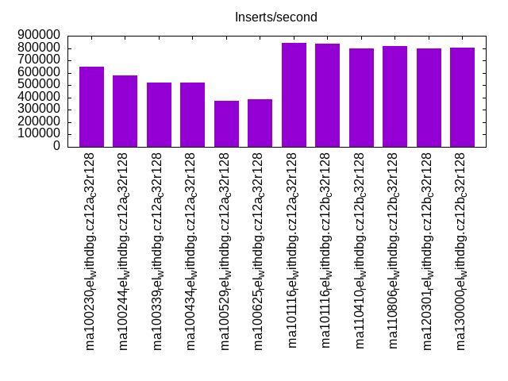
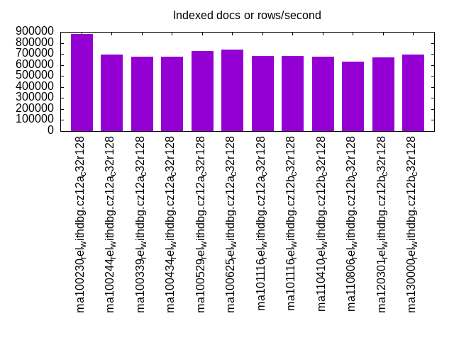
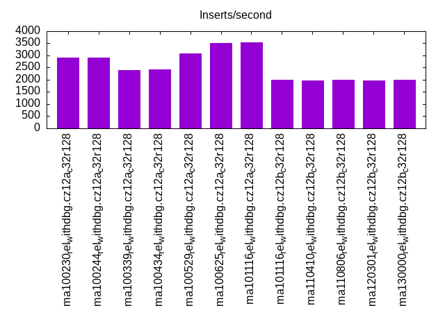
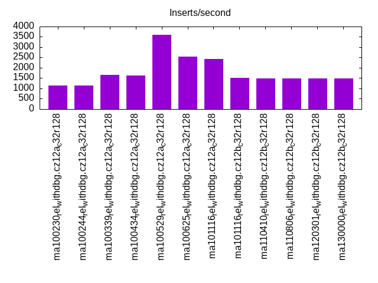
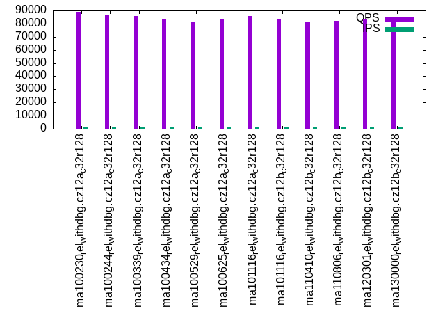
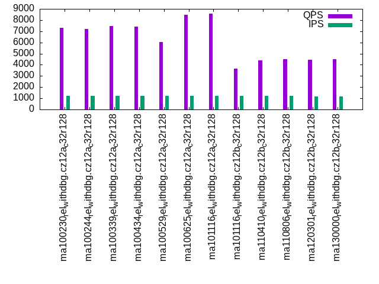
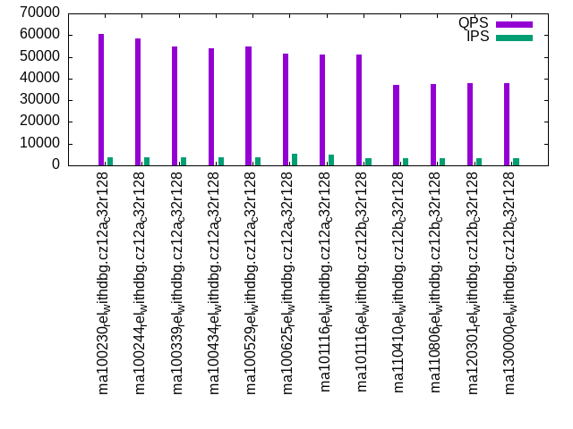
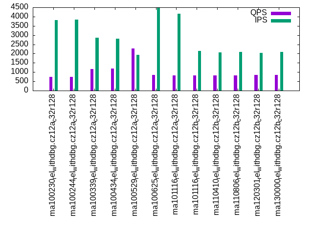
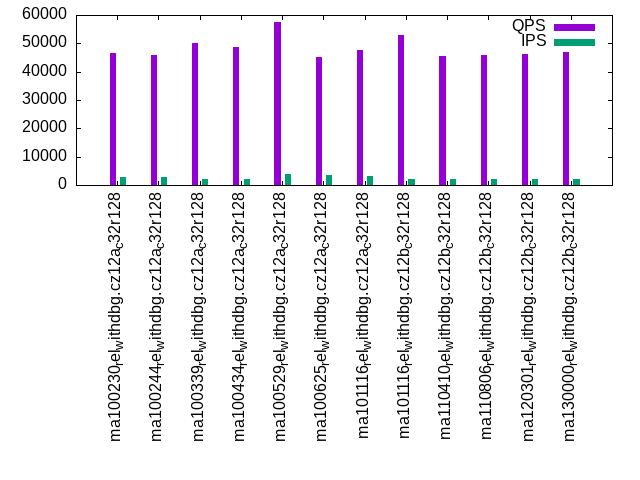
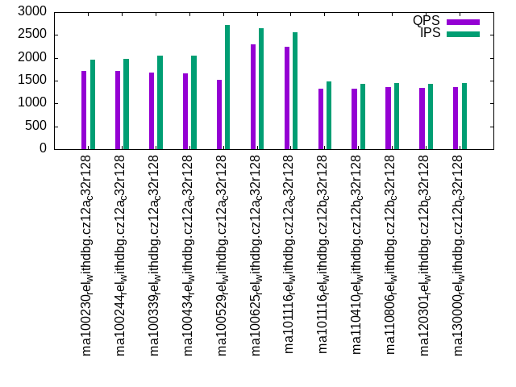

This is a report for the insert benchmark with 3600M docs and 12 client(s). It is generated by scripts (bash, awk, sed) and Tufte might not be impressed. An overview of the insert benchmark is here and a short update is here. Below, by DBMS, I mean DBMS+version.config. An example is my8020.c10b40 where my means MySQL, 8020 is version 8.0.20 and c10b40 is the name for the configuration file.
The test server has 32 cores, 128G RAM and 1 NVMe device. The benchmark was run with 12 clients and there were 1 or 3 connections per client (1 for queries or inserts without rate limits, 1+1 for rate limited inserts+deletes). It uses 8 tables with a table per client. It loads 300M rows per table without secondary indexes, creates 3 secondary indexes per table, then inserts 4m+1m rows per table with a delete per insert to avoid growing the table. It then does 6 read+write tests for 1800s each that do queries as fast as possible with 100,100,500,500,1000,1000 inserts/s and the same for deletes/s per client concurrent with the queries. The database is larger than RAM and most tests are IO-bound except for the range query (qr*) tests that frequently have a cached working set. Clients and the DBMS share one server.
The tested DBMS are:
The numbers are inserts/s for l.i0, l.i1 and l.i2, indexed docs (or rows) /s for l.x and queries/s for qr100, qp100 thru qr1000, qp1000" The values are the average rate over the entire test for inserts (IPS) and queries (QPS). The range of values for IPS and QPS is split into 3 parts: bottom 25%, middle 50%, top 25%. Values in the bottom 25% have a red background, values in the top 25% have a green background and values in the middle have no color. A gray background is used for values that can be ignored because the DBMS did not sustain the target insert rate. Red backgrounds are not used when the minimum value is within 80% of the max value.
| dbms | l.i0 | l.x | l.i1 | l.i2 | qr100 | qp100 | qr500 | qp500 | qr1000 | qp1000 |
|---|---|---|---|---|---|---|---|---|---|---|
| ma100230_rel_withdbg.cz12a_c32r128 | 647016 | 883002 | 2920 | 1138 | 88968 | 7286 | 60528 | 730 | 46550 | 1714 |
| ma100244_rel_withdbg.cz12a_c32r128 | 577571 | 695383 | 2907 | 1147 | 86823 | 7213 | 58277 | 731 | 45882 | 1714 |
| ma100339_rel_withdbg.cz12a_c32r128 | 520758 | 672269 | 2403 | 1643 | 85629 | 7470 | 54887 | 1154 | 50031 | 1681 |
| ma100434_rel_withdbg.cz12a_c32r128 | 518807 | 675549 | 2423 | 1622 | 82951 | 7429 | 53761 | 1188 | 48623 | 1658 |
| ma100529_rel_withdbg.cz12a_c32r128 | 373057 | 725222 | 3093 | 3601 | 81395 | 6045 | 54823 | 2283 | 57398 | 1523 |
| ma100625_rel_withdbg.cz12a_c32r128 | 383509 | 739675 | 3514 | 2544 | 83167 | 8465 | 51671 | 849 | 45185 | 2294 |
| ma101116_rel_withdbg.cz12a_c32r128 | 839161 | 682723 | 3544 | 2421 | 85572 | 8596 | 51077 | 828 | 47815 | 2238 |
| ma101116_rel_withdbg.cz12b_c32r128 | 836820 | 679245 | 2010 | 1507 | 83267 | 3652 | 50967 | 826 | 52878 | 1329 |
| ma110410_rel_withdbg.cz12b_c32r128 | 794176 | 672143 | 1975 | 1476 | 81695 | 4391 | 37123 | 817 | 45551 | 1329 |
| ma110806_rel_withdbg.cz12b_c32r128 | 814480 | 632800 | 1989 | 1484 | 81816 | 4523 | 37600 | 831 | 45904 | 1355 |
| ma120301_rel_withdbg.cz12b_c32r128 | 799467 | 671642 | 1982 | 1484 | 83703 | 4438 | 37823 | 845 | 46389 | 1342 |
| ma130000_rel_withdbg.cz12b_c32r128 | 806632 | 694310 | 1989 | 1493 | 85229 | 4496 | 38073 | 834 | 46903 | 1356 |
This table has relative throughput, throughput for the DBMS relative to the DBMS in the first line, using the absolute throughput from the previous table. Values less than 0.95 have a yellow background. Values greater than 1.05 have a blue background.
| dbms | l.i0 | l.x | l.i1 | l.i2 | qr100 | qp100 | qr500 | qp500 | qr1000 | qp1000 |
|---|---|---|---|---|---|---|---|---|---|---|
| ma100230_rel_withdbg.cz12a_c32r128 | 1.00 | 1.00 | 1.00 | 1.00 | 1.00 | 1.00 | 1.00 | 1.00 | 1.00 | 1.00 |
| ma100244_rel_withdbg.cz12a_c32r128 | 0.89 | 0.79 | 1.00 | 1.01 | 0.98 | 0.99 | 0.96 | 1.00 | 0.99 | 1.00 |
| ma100339_rel_withdbg.cz12a_c32r128 | 0.80 | 0.76 | 0.82 | 1.44 | 0.96 | 1.03 | 0.91 | 1.58 | 1.07 | 0.98 |
| ma100434_rel_withdbg.cz12a_c32r128 | 0.80 | 0.77 | 0.83 | 1.43 | 0.93 | 1.02 | 0.89 | 1.63 | 1.04 | 0.97 |
| ma100529_rel_withdbg.cz12a_c32r128 | 0.58 | 0.82 | 1.06 | 3.16 | 0.91 | 0.83 | 0.91 | 3.13 | 1.23 | 0.89 |
| ma100625_rel_withdbg.cz12a_c32r128 | 0.59 | 0.84 | 1.20 | 2.24 | 0.93 | 1.16 | 0.85 | 1.16 | 0.97 | 1.34 |
| ma101116_rel_withdbg.cz12a_c32r128 | 1.30 | 0.77 | 1.21 | 2.13 | 0.96 | 1.18 | 0.84 | 1.13 | 1.03 | 1.31 |
| ma101116_rel_withdbg.cz12b_c32r128 | 1.29 | 0.77 | 0.69 | 1.32 | 0.94 | 0.50 | 0.84 | 1.13 | 1.14 | 0.78 |
| ma110410_rel_withdbg.cz12b_c32r128 | 1.23 | 0.76 | 0.68 | 1.30 | 0.92 | 0.60 | 0.61 | 1.12 | 0.98 | 0.78 |
| ma110806_rel_withdbg.cz12b_c32r128 | 1.26 | 0.72 | 0.68 | 1.30 | 0.92 | 0.62 | 0.62 | 1.14 | 0.99 | 0.79 |
| ma120301_rel_withdbg.cz12b_c32r128 | 1.24 | 0.76 | 0.68 | 1.30 | 0.94 | 0.61 | 0.62 | 1.16 | 1.00 | 0.78 |
| ma130000_rel_withdbg.cz12b_c32r128 | 1.25 | 0.79 | 0.68 | 1.31 | 0.96 | 0.62 | 0.63 | 1.14 | 1.01 | 0.79 |
This lists the average rate of inserts/s for the tests that do inserts concurrent with queries. For such tests the query rate is listed in the table above. The read+write tests are setup so that the insert rate should match the target rate every second. Cells that are not at least 95% of the target have a red background to indicate a failure to satisfy the target.
| dbms | qr100.L1 | qp100.L2 | qr500.L3 | qp500.L4 | qr1000.L5 | qp1000.L6 |
|---|---|---|---|---|---|---|
| ma100230_rel_withdbg.cz12a_c32r128 | 1192 | 1192 | 3764 | 3804 | 2825 | 1950 |
| ma100244_rel_withdbg.cz12a_c32r128 | 1192 | 1193 | 3789 | 3850 | 2862 | 1968 |
| ma100339_rel_withdbg.cz12a_c32r128 | 1192 | 1193 | 3839 | 2863 | 2228 | 2050 |
| ma100434_rel_withdbg.cz12a_c32r128 | 1193 | 1193 | 3865 | 2811 | 2237 | 2052 |
| ma100529_rel_withdbg.cz12a_c32r128 | 1193 | 1192 | 3865 | 1920 | 3841 | 2721 |
| ma100625_rel_withdbg.cz12a_c32r128 | 1192 | 1192 | 5493 | 4491 | 3603 | 2649 |
| ma101116_rel_withdbg.cz12a_c32r128 | 1192 | 1192 | 4852 | 4157 | 3202 | 2561 |
| ma101116_rel_withdbg.cz12b_c32r128 | 1193 | 1193 | 3255 | 2135 | 2000 | 1481 |
| ma110410_rel_withdbg.cz12b_c32r128 | 1192 | 1192 | 3167 | 2053 | 1964 | 1428 |
| ma110806_rel_withdbg.cz12b_c32r128 | 1193 | 1192 | 3232 | 2082 | 1984 | 1446 |
| ma120301_rel_withdbg.cz12b_c32r128 | 1193 | 1191 | 3190 | 2049 | 1978 | 1437 |
| ma130000_rel_withdbg.cz12b_c32r128 | 1193 | 1191 | 3219 | 2086 | 1990 | 1450 |
| target | 1200 | 1200 | 6000 | 6000 | 12000 | 12000 |
l.i0: load without secondary indexes. Graphs for performance per 1-second interval are here.
Average throughput:

Insert response time histogram: each cell has the percentage of responses that take <= the time in the header and max is the max response time in seconds. For the max column values in the top 25% of the range have a red background and in the bottom 25% of the range have a green background. The red background is not used when the min value is within 80% of the max value.
| dbms | 256us | 1ms | 4ms | 16ms | 64ms | 256ms | 1s | 4s | 16s | gt | max |
|---|---|---|---|---|---|---|---|---|---|---|---|
| ma100230_rel_withdbg.cz12a_c32r128 | 0.749 | 98.918 | 0.154 | 0.084 | 0.069 | 0.016 | 0.010 | 2.693 | |||
| ma100244_rel_withdbg.cz12a_c32r128 | 0.487 | 99.146 | 0.193 | 0.079 | 0.071 | 0.014 | 0.010 | 3.216 | |||
| ma100339_rel_withdbg.cz12a_c32r128 | 0.595 | 98.991 | 0.239 | 0.077 | 0.070 | 0.020 | 0.009 | 3.268 | |||
| ma100434_rel_withdbg.cz12a_c32r128 | 0.639 | 98.949 | 0.233 | 0.077 | 0.073 | 0.019 | 0.010 | nonzero | 4.795 | ||
| ma100529_rel_withdbg.cz12a_c32r128 | 1.120 | 97.191 | 1.127 | 0.389 | 0.155 | 0.018 | 0.002 | 2.497 | |||
| ma100625_rel_withdbg.cz12a_c32r128 | 0.371 | 98.709 | 0.763 | 0.070 | 0.069 | 0.012 | 0.007 | nonzero | 4.121 | ||
| ma101116_rel_withdbg.cz12a_c32r128 | 89.440 | 10.347 | 0.065 | 0.060 | 0.060 | 0.020 | 0.009 | 0.001 | 5.757 | ||
| ma101116_rel_withdbg.cz12b_c32r128 | 86.130 | 13.616 | 0.072 | 0.087 | 0.069 | 0.018 | 0.008 | 0.001 | 5.244 | ||
| ma110410_rel_withdbg.cz12b_c32r128 | 74.473 | 25.251 | 0.082 | 0.096 | 0.070 | 0.020 | 0.008 | nonzero | 4.943 | ||
| ma110806_rel_withdbg.cz12b_c32r128 | 80.061 | 19.664 | 0.080 | 0.096 | 0.071 | 0.020 | 0.008 | nonzero | 4.620 | ||
| ma120301_rel_withdbg.cz12b_c32r128 | 76.222 | 23.503 | 0.083 | 0.092 | 0.072 | 0.019 | 0.008 | nonzero | 5.010 | ||
| ma130000_rel_withdbg.cz12b_c32r128 | 77.537 | 22.194 | 0.086 | 0.084 | 0.073 | 0.019 | 0.008 | nonzero | 4.843 |
Performance metrics for the DBMS listed above. Some are normalized by throughput, others are not. Legend for results is here.
ips qps rps rmbps wps wmbps rpq rkbpq wpi wkbpi csps cpups cspq cpupq dbgb1 dbgb2 rss maxop p50 p99 tag 647016 0 1 0.0 4218.1 233.0 0.000 0.000 0.007 0.369 83293 40.1 0.129 20 236.8 337.6 104.7 2.693 59592 0 ma100230_rel_withdbg.cz12a_c32r128 577571 0 1 0.0 3809.6 209.3 0.000 0.000 0.007 0.371 74196 39.8 0.128 22 236.8 337.6 104.6 3.216 54193 0 ma100244_rel_withdbg.cz12a_c32r128 520758 0 2 0.0 3701.1 206.0 0.000 0.000 0.007 0.405 65536 58.3 0.126 36 236.8 338.7 104.5 3.268 48694 0 ma100339_rel_withdbg.cz12a_c32r128 518807 0 2 0.0 3678.4 204.3 0.000 0.000 0.007 0.403 65370 57.9 0.126 36 236.8 338.7 NA 4.795 48694 0 ma100434_rel_withdbg.cz12a_c32r128 373057 0 1 0.0 3359.2 128.5 0.000 0.000 0.009 0.353 730017 48.3 1.957 41 236.8 339.1 100.3 2.497 32896 10599 ma100529_rel_withdbg.cz12a_c32r128 383509 0 0 0.0 2324.2 107.6 0.000 0.000 0.006 0.287 758731 50.5 1.978 42 236.8 337.6 101.3 4.121 33296 0 ma100625_rel_withdbg.cz12a_c32r128 839161 0 2 0.0 4558.8 218.1 0.000 0.000 0.005 0.266 137472 37.6 0.164 14 236.8 337.6 101.3 5.757 89689 0 ma101116_rel_withdbg.cz12a_c32r128 836820 0 1 0.0 4318.9 213.5 0.000 0.000 0.005 0.261 142212 37.8 0.170 14 236.8 337.6 101.3 5.244 87689 0 ma101116_rel_withdbg.cz12b_c32r128 794176 0 2 0.0 4098.2 202.6 0.000 0.000 0.005 0.261 176816 37.9 0.223 15 236.8 337.6 101.3 4.943 79390 0 ma110410_rel_withdbg.cz12b_c32r128 814480 0 1 0.0 4193.7 207.6 0.000 0.000 0.005 0.261 173902 37.5 0.214 15 236.8 337.6 101.2 4.620 82487 0 ma110806_rel_withdbg.cz12b_c32r128 799467 0 2 0.0 4133.3 204.1 0.000 0.000 0.005 0.261 180689 37.8 0.226 15 236.8 337.6 101.2 5.010 69391 0 ma120301_rel_withdbg.cz12b_c32r128 806632 0 1 0.0 4156.4 205.7 0.000 0.000 0.005 0.261 175644 37.8 0.218 15 236.8 337.6 101.3 4.843 81290 0 ma130000_rel_withdbg.cz12b_c32r128
Average values from iostat.
r/s rkB/s rrqm/s %rrqm r_await rareq-s w/s wkB/s wrqm/s %wrqm w_await wareq-s d/s dkB/s drqm/s %drqm d_await dareq-s f/s f_await aqu-sz %util 1.094 9.224 0.000 0.000 5.081 3.857 4218.1 238619 151.9 3.752 19.07 58.52 2.737 39.47 0.000 0.000 9.768 21.40 13.37 5.352 54.80 40.46 ma100230_rel_withdbg.cz12a_c32r128 1.146 8.955 0.000 0.000 6.526 5.042 3809.6 214292 116.3 3.214 17.85 58.11 3.029 26.71 0.000 0.000 9.416 8.031 12.40 4.836 46.70 36.36 ma100244_rel_withdbg.cz12a_c32r128 2.111 25.01 0.000 0.000 5.849 4.687 3701.1 210934 112.5 3.241 17.68 61.04 1.511 50.82 0.000 0.000 7.839 45.42 11.10 4.720 48.65 34.42 ma100339_rel_withdbg.cz12a_c32r128 2.057 23.22 0.003 0.052 6.598 4.687 3678.4 209187 111.6 3.237 18.45 60.56 2.256 33.54 0.000 0.000 7.439 19.42 11.07 4.799 48.97 34.40 ma100434_rel_withdbg.cz12a_c32r128 0.677 4.110 0.000 0.000 2.817 4.263 3359.2 131574 114.5 3.237 5.278 39.16 2.174 13.37 0.000 0.000 2.752 5.177 23.91 1.903 16.29 18.71 ma100529_rel_withdbg.cz12a_c32r128 0.438 3.548 0.002 0.037 9.330 2.807 2324.2 110209 63.39 3.054 43.81 53.52 1.786 14.52 0.000 0.000 5.746 12.79 15.90 3.891 83.50 18.76 ma100625_rel_withdbg.cz12a_c32r128 1.554 10.60 0.000 0.000 39.76 5.037 4558.8 223287 148.6 3.348 94.73 52.71 3.521 83.86 0.000 0.000 13.83 32.74 31.18 10.86 333.8 43.74 ma101116_rel_withdbg.cz12a_c32r128 0.943 7.928 0.000 0.000 27.79 3.623 4318.9 218614 157.9 3.667 88.10 54.10 3.373 44.12 0.000 0.000 12.30 20.72 74.41 5.811 259.5 44.61 ma101116_rel_withdbg.cz12b_c32r128 1.454 9.687 0.000 0.000 42.62 4.773 4098.2 207459 159.2 3.915 74.53 54.55 3.213 34.29 0.000 0.000 12.95 11.75 70.93 5.662 204.2 42.13 ma110410_rel_withdbg.cz12b_c32r128 1.427 9.920 0.000 0.000 38.33 4.764 4193.7 212611 165.4 4.010 80.03 55.16 2.265 80.45 0.000 0.000 13.28 37.16 69.22 5.958 226.8 43.74 ma110806_rel_withdbg.cz12b_c32r128 1.460 9.961 0.000 0.000 37.47 4.899 4133.3 209025 162.7 3.994 78.13 54.65 2.794 50.94 0.000 0.000 12.52 22.00 67.55 5.964 211.2 42.81 ma120301_rel_withdbg.cz12b_c32r128 1.316 9.366 0.000 0.000 38.59 4.937 4156.4 210627 164.8 4.011 77.18 54.33 3.769 22.03 0.000 0.000 14.35 5.892 67.43 5.811 212.3 43.00 ma130000_rel_withdbg.cz12b_c32r128
l.x: create secondary indexes.
Average throughput:

Performance metrics for the DBMS listed above. Some are normalized by throughput, others are not. Legend for results is here.
ips qps rps rmbps wps wmbps rpq rkbpq wpi wkbpi csps cpups cspq cpupq dbgb1 dbgb2 rss maxop p50 p99 tag 883002 0 8795 788.0 13652.3 904.0 0.010 0.914 0.015 1.048 61065 19.0 0.069 7 545.2 646.0 105.2 0.005 NA NA ma100230_rel_withdbg.cz12a_c32r128 695383 0 7022 636.0 8299.7 750.8 0.010 0.936 0.012 1.106 23562 14.8 0.034 7 545.2 646.0 105.1 0.006 NA NA ma100244_rel_withdbg.cz12a_c32r128 672269 0 6806 615.5 8076.6 727.1 0.010 0.938 0.012 1.107 23607 14.5 0.035 7 545.2 647.0 105.0 0.005 NA NA ma100339_rel_withdbg.cz12a_c32r128 675549 0 6869 619.3 8109.1 730.8 0.010 0.939 0.012 1.108 21666 14.4 0.032 7 539.6 641.5 NA 0.002 NA NA ma100434_rel_withdbg.cz12a_c32r128 725222 0 7287 656.5 8996.2 754.6 0.010 0.927 0.012 1.065 36552 18.6 0.050 8 539.6 641.9 101.5 0.005 NA NA ma100529_rel_withdbg.cz12a_c32r128 739675 0 8306 690.1 8696.8 762.6 0.011 0.955 0.012 1.056 30575 17.9 0.041 8 501.7 602.5 101.6 0.005 NA NA ma100625_rel_withdbg.cz12a_c32r128 682723 0 7682 632.8 8248.4 705.4 0.011 0.949 0.012 1.058 28888 17.3 0.042 8 501.7 602.5 101.6 0.004 NA NA ma101116_rel_withdbg.cz12a_c32r128 679245 0 7606 630.4 8454.4 705.3 0.011 0.950 0.012 1.063 29950 17.4 0.044 8 501.7 602.5 101.6 0.005 NA NA ma101116_rel_withdbg.cz12b_c32r128 672143 0 7551 622.4 8372.2 698.2 0.011 0.948 0.012 1.064 29975 17.1 0.045 8 501.7 602.5 101.6 0.004 NA NA ma110410_rel_withdbg.cz12b_c32r128 632800 0 7105 584.8 7888.8 657.1 0.011 0.946 0.012 1.063 28962 17.1 0.046 9 501.7 602.5 101.5 0.003 NA NA ma110806_rel_withdbg.cz12b_c32r128 671642 0 7515 622.1 8357.5 697.4 0.011 0.949 0.012 1.063 30509 16.7 0.045 8 501.7 602.5 101.5 0.001 NA NA ma120301_rel_withdbg.cz12b_c32r128 694310 0 7842 647.4 8636.6 721.0 0.011 0.955 0.012 1.063 31227 17.1 0.045 8 501.7 602.5 101.5 0.005 NA NA ma130000_rel_withdbg.cz12b_c32r128
Average values from iostat.
r/s rkB/s rrqm/s %rrqm r_await rareq-s w/s wkB/s wrqm/s %wrqm w_await wareq-s d/s dkB/s drqm/s %drqm d_await dareq-s f/s f_await aqu-sz %util 8795.4 806929 0.036 0.000 1.466 92.97 13652.3 925714 199.3 2.484 23.76 107.4 9.073 75039.0 0.000 0.000 0.424 240.9 15.31 27.05 63.88 92.32 ma100230_rel_withdbg.cz12a_c32r128 7022.0 651217 0.000 0.000 1.912 111.6 8299.7 768857 184.6 2.071 37.10 98.11 6.632 57266.8 0.000 0.000 0.376 391.9 12.64 23.72 114.1 93.89 ma100244_rel_withdbg.cz12a_c32r128 6806.3 630312 0.000 0.000 2.072 111.9 8076.6 744537 181.4 1.980 43.05 98.22 6.804 57849.1 0.000 0.000 0.177 334.1 12.94 27.71 118.3 94.05 ma100339_rel_withdbg.cz12a_c32r128 6868.7 634212 0.000 0.000 1.805 111.5 8109.1 748326 180.6 2.117 39.04 97.72 6.404 55688.2 0.000 0.000 0.198 317.1 12.35 29.90 119.3 94.06 ma100434_rel_withdbg.cz12a_c32r128 7286.8 672230 0.035 0.001 2.518 109.9 8996.2 772660 204.2 2.366 37.39 108.5 7.190 62424.3 0.000 0.000 0.156 260.1 30.02 18.97 150.0 87.51 ma100529_rel_withdbg.cz12a_c32r128 8305.7 706626 0.000 0.000 3.113 112.0 8696.8 780862 167.4 1.603 41.05 110.5 7.061 60295.0 0.000 0.000 0.199 216.8 25.05 37.68 195.1 96.62 ma100625_rel_withdbg.cz12a_c32r128 7682.0 647959 0.000 0.000 4.264 107.7 8248.4 722334 142.3 1.719 63.60 97.05 6.577 56220.1 0.000 0.000 0.202 258.4 24.71 29.79 223.1 93.62 ma101116_rel_withdbg.cz12a_c32r128 7605.5 645553 0.000 0.000 2.973 112.2 8454.4 722269 179.6 2.113 57.36 94.71 6.894 58402.4 0.000 0.000 0.215 353.5 36.12 19.13 216.1 95.04 ma101116_rel_withdbg.cz12b_c32r128 7550.9 637317 0.000 0.000 2.541 102.8 8372.2 714913 179.2 2.153 57.45 93.45 6.643 55442.9 0.000 0.000 0.140 266.9 35.19 13.71 227.1 93.55 ma110410_rel_withdbg.cz12b_c32r128 7104.7 598884 0.014 0.001 1.782 111.6 7888.8 672917 169.4 2.456 37.00 92.90 6.462 54408.3 0.000 0.000 0.434 433.4 31.72 15.57 208.2 93.08 ma110806_rel_withdbg.cz12b_c32r128 7514.6 637053 0.000 0.000 2.531 108.3 8357.5 714157 181.2 2.027 49.84 93.88 6.656 57823.6 0.000 0.000 0.232 296.2 34.26 20.86 227.6 94.13 ma120301_rel_withdbg.cz12b_c32r128 7842.3 662911 0.000 0.000 2.511 111.0 8636.6 738260 192.6 1.970 52.18 96.49 6.905 59755.1 0.000 0.000 0.327 292.4 34.77 20.54 241.8 96.93 ma130000_rel_withdbg.cz12b_c32r128
l.i1: continue load after secondary indexes created with 50 inserts per transaction. Graphs for performance per 1-second interval are here.
Average throughput:

Insert response time histogram: each cell has the percentage of responses that take <= the time in the header and max is the max response time in seconds. For the max column values in the top 25% of the range have a red background and in the bottom 25% of the range have a green background. The red background is not used when the min value is within 80% of the max value.
| dbms | 256us | 1ms | 4ms | 16ms | 64ms | 256ms | 1s | 4s | 16s | gt | max |
|---|---|---|---|---|---|---|---|---|---|---|---|
| ma100230_rel_withdbg.cz12a_c32r128 | 0.001 | 1.265 | 79.988 | 17.970 | 0.345 | 0.431 | 10.840 | ||||
| ma100244_rel_withdbg.cz12a_c32r128 | 0.001 | 0.991 | 80.671 | 17.505 | 0.387 | 0.444 | 10.939 | ||||
| ma100339_rel_withdbg.cz12a_c32r128 | nonzero | 0.525 | 67.648 | 30.904 | 0.408 | 0.514 | 11.215 | ||||
| ma100434_rel_withdbg.cz12a_c32r128 | nonzero | 0.525 | 68.182 | 30.381 | 0.401 | 0.511 | 10.699 | ||||
| ma100529_rel_withdbg.cz12a_c32r128 | 0.011 | 15.422 | 59.644 | 24.368 | 0.402 | 0.153 | 11.047 | ||||
| ma100625_rel_withdbg.cz12a_c32r128 | 0.001 | 10.288 | 71.958 | 16.936 | 0.477 | 0.340 | 9.262 | ||||
| ma101116_rel_withdbg.cz12a_c32r128 | nonzero | 6.192 | 77.509 | 15.708 | 0.271 | 0.320 | 10.046 | ||||
| ma101116_rel_withdbg.cz12b_c32r128 | 0.193 | 57.901 | 40.999 | 0.904 | 0.003 | 5.498 | |||||
| ma110410_rel_withdbg.cz12b_c32r128 | 0.148 | 55.934 | 42.800 | 1.111 | 0.007 | 5.483 | |||||
| ma110806_rel_withdbg.cz12b_c32r128 | 0.066 | 55.907 | 43.117 | 0.899 | 0.011 | 5.760 | |||||
| ma120301_rel_withdbg.cz12b_c32r128 | 0.132 | 56.060 | 42.776 | 1.025 | 0.007 | 5.810 | |||||
| ma130000_rel_withdbg.cz12b_c32r128 | 0.125 | 56.335 | 42.489 | 1.041 | 0.010 | 6.485 |
Delete response time histogram: each cell has the percentage of responses that take <= the time in the header and max is the max response time in seconds. For the max column values in the top 25% of the range have a red background and in the bottom 25% of the range have a green background. The red background is not used when the min value is within 80% of the max value.
| dbms | 256us | 1ms | 4ms | 16ms | 64ms | 256ms | 1s | 4s | 16s | gt | max |
|---|---|---|---|---|---|---|---|---|---|---|---|
| ma100230_rel_withdbg.cz12a_c32r128 | 0.031 | 20.532 | 69.306 | 9.545 | 0.318 | 0.267 | 10.224 | ||||
| ma100244_rel_withdbg.cz12a_c32r128 | 0.007 | 19.938 | 70.020 | 9.429 | 0.339 | 0.266 | 10.900 | ||||
| ma100339_rel_withdbg.cz12a_c32r128 | 0.002 | 21.117 | 55.744 | 22.447 | 0.399 | 0.291 | 11.170 | ||||
| ma100434_rel_withdbg.cz12a_c32r128 | 0.005 | 20.431 | 56.709 | 22.185 | 0.359 | 0.310 | 10.540 | ||||
| ma100529_rel_withdbg.cz12a_c32r128 | 0.041 | 48.994 | 33.348 | 17.249 | 0.281 | 0.087 | 10.985 | ||||
| ma100625_rel_withdbg.cz12a_c32r128 | 0.472 | 35.816 | 46.901 | 16.194 | 0.358 | 0.259 | 9.253 | ||||
| ma101116_rel_withdbg.cz12a_c32r128 | 0.257 | 30.604 | 53.764 | 14.858 | 0.281 | 0.236 | 9.254 | ||||
| ma101116_rel_withdbg.cz12b_c32r128 | 0.018 | 1.507 | 65.428 | 32.750 | 0.294 | 0.003 | 5.436 | ||||
| ma110410_rel_withdbg.cz12b_c32r128 | 0.034 | 1.385 | 65.371 | 32.708 | 0.495 | 0.006 | 5.401 | ||||
| ma110806_rel_withdbg.cz12b_c32r128 | 0.004 | 1.341 | 65.164 | 33.127 | 0.355 | 0.008 | 5.658 | ||||
| ma120301_rel_withdbg.cz12b_c32r128 | 0.026 | 1.461 | 65.375 | 32.688 | 0.445 | 0.006 | 5.777 | ||||
| ma130000_rel_withdbg.cz12b_c32r128 | 0.040 | 1.503 | 65.142 | 32.902 | 0.405 | 0.008 | 5.914 |
Performance metrics for the DBMS listed above. Some are normalized by throughput, others are not. Legend for results is here.
ips qps rps rmbps wps wmbps rpq rkbpq wpi wkbpi csps cpups cspq cpupq dbgb1 dbgb2 rss maxop p50 p99 tag 2920 0 13139 205.3 19346.0 477.4 4.500 72.000 6.626 167.439 115641 7.1 39.607 778 727.9 830.7 104.7 10.840 250 0 ma100230_rel_withdbg.cz12a_c32r128 2907 0 13208 206.4 19683.8 485.8 4.543 72.691 6.771 171.119 112501 7.8 38.699 859 727.4 830.2 104.7 10.939 300 0 ma100244_rel_withdbg.cz12a_c32r128 2403 0 12679 198.1 18746.8 471.2 5.276 84.419 7.801 200.771 107953 6.4 44.922 852 707.8 810.1 104.5 11.215 200 0 ma100339_rel_withdbg.cz12a_c32r128 2423 0 12861 201.0 18964.1 476.8 5.309 84.939 7.828 201.544 107953 6.4 44.559 845 707.4 809.8 NA 10.699 200 0 ma100434_rel_withdbg.cz12a_c32r128 3093 0 15524 242.6 17580.6 484.2 5.019 80.305 5.684 160.295 182651 7.7 59.055 797 690.6 793.5 101.8 11.047 250 0 ma100529_rel_withdbg.cz12a_c32r128 3514 0 18557 290.0 18381.8 506.7 5.281 84.497 5.231 147.652 218751 8.2 62.253 747 649.2 751.5 101.3 9.262 300 0 ma100625_rel_withdbg.cz12a_c32r128 3544 0 18664 291.6 18090.7 497.5 5.265 84.247 5.104 143.729 241079 8.1 68.015 731 649.3 751.5 101.3 10.046 350 0 ma101116_rel_withdbg.cz12a_c32r128 2010 0 10576 165.2 10825.6 275.9 5.262 84.199 5.387 140.574 154382 5.2 76.818 828 649.3 751.7 101.3 5.498 150 50 ma101116_rel_withdbg.cz12b_c32r128 1975 0 10504 164.1 10814.4 275.9 5.318 85.090 5.475 143.033 146092 4.5 73.963 729 648.6 751.0 101.3 5.483 150 50 ma110410_rel_withdbg.cz12b_c32r128 1989 0 10580 165.3 10952.3 277.9 5.318 85.080 5.506 143.063 146693 4.4 73.741 708 648.6 751.0 100.3 5.760 150 50 ma110806_rel_withdbg.cz12b_c32r128 1982 0 10541 164.7 10851.9 276.9 5.319 85.102 5.475 143.077 147150 4.4 74.247 710 648.7 751.1 101.3 5.810 150 50 ma120301_rel_withdbg.cz12b_c32r128 1989 0 10577 165.3 10921.9 277.9 5.318 85.081 5.491 143.051 146123 4.4 73.465 708 648.6 751.0 101.3 6.485 150 50 ma130000_rel_withdbg.cz12b_c32r128
Average values from iostat.
r/s rkB/s rrqm/s %rrqm r_await rareq-s w/s wkB/s wrqm/s %wrqm w_await wareq-s d/s dkB/s drqm/s %drqm d_await dareq-s f/s f_await aqu-sz %util 13138.8 210218 0.002 0.000 0.730 16.00 19346.0 488871 174.6 1.086 9.688 25.46 0.046 0.363 0.000 0.000 0.748 0.488 5.849 6.637 40.62 99.97 ma100230_rel_withdbg.cz12a_c32r128 13207.5 211319 0.000 0.000 0.727 16.00 19683.8 497460 180.8 1.064 10.43 25.49 0.095 30.24 0.000 0.000 1.741 53.62 5.822 6.428 40.55 99.90 ma100244_rel_withdbg.cz12a_c32r128 12679.3 202868 0.000 0.000 0.720 16.00 18746.8 482473 130.1 0.789 9.882 25.88 0.017 5.698 0.000 0.000 1.912 27.20 4.999 5.995 38.61 99.97 ma100339_rel_withdbg.cz12a_c32r128 12861.4 205782 0.000 0.000 0.688 16.00 18964.1 488280 134.9 0.813 10.03 25.90 0.017 17.48 0.000 0.000 2.032 84.91 5.113 6.124 39.20 99.95 ma100434_rel_withdbg.cz12a_c32r128 15523.8 248375 0.000 0.000 0.510 16.00 17580.6 495776 68.00 0.368 2.071 28.21 0.017 1.377 0.000 0.000 0.750 6.468 11.06 6.769 25.61 97.11 ma100529_rel_withdbg.cz12a_c32r128 18557.1 296913 0.000 0.000 0.594 15.99 18381.8 518834 265.0 1.428 8.213 28.36 0.077 0.367 0.000 0.000 2.394 0.582 12.10 14.26 42.40 98.96 ma100625_rel_withdbg.cz12a_c32r128 18663.5 298614 0.000 0.000 0.640 16.00 18090.7 509448 223.4 1.621 13.40 28.40 0.029 3.256 0.000 0.000 2.994 14.77 12.37 17.81 41.06 98.90 ma101116_rel_withdbg.cz12a_c32r128 10576.0 169215 0.000 0.000 0.888 16.00 10825.6 282511 496.2 4.081 0.636 26.12 0.020 0.104 0.000 0.000 0.489 0.435 814.0 1.034 13.67 97.53 ma101116_rel_withdbg.cz12b_c32r128 10504.4 168069 0.000 0.000 0.866 16.00 10814.4 282519 570.3 4.702 0.596 26.16 0.015 0.172 0.000 0.000 0.335 0.805 815.4 1.029 13.15 97.46 ma110410_rel_withdbg.cz12b_c32r128 10579.7 169251 0.001 0.000 0.855 16.00 10952.3 284594 556.7 4.559 0.598 26.01 0.016 1.373 0.000 0.000 0.395 6.663 820.7 1.013 13.21 97.41 ma110806_rel_withdbg.cz12b_c32r128 10541.4 168663 0.000 0.000 0.859 16.00 10851.9 283565 561.5 4.610 0.611 26.16 0.015 1.762 0.000 0.000 0.401 8.250 818.2 1.023 13.26 97.46 ma120301_rel_withdbg.cz12b_c32r128 10576.6 169226 0.000 0.000 0.861 16.00 10921.9 284529 583.9 4.759 0.606 26.08 0.015 0.072 0.000 0.000 0.351 0.322 821.3 1.019 13.18 97.48 ma130000_rel_withdbg.cz12b_c32r128
l.i2: continue load after secondary indexes created with 5 inserts per transaction. Graphs for performance per 1-second interval are here.
Average throughput:

Insert response time histogram: each cell has the percentage of responses that take <= the time in the header and max is the max response time in seconds. For the max column values in the top 25% of the range have a red background and in the bottom 25% of the range have a green background. The red background is not used when the min value is within 80% of the max value.
| dbms | 256us | 1ms | 4ms | 16ms | 64ms | 256ms | 1s | 4s | 16s | gt | max |
|---|---|---|---|---|---|---|---|---|---|---|---|
| ma100230_rel_withdbg.cz12a_c32r128 | 0.057 | 3.300 | 20.288 | 47.977 | 27.599 | 0.396 | 0.368 | 0.016 | 7.903 | ||
| ma100244_rel_withdbg.cz12a_c32r128 | 0.070 | 3.301 | 19.493 | 49.470 | 26.915 | 0.383 | 0.351 | 0.018 | 8.282 | ||
| ma100339_rel_withdbg.cz12a_c32r128 | 0.220 | 7.175 | 30.550 | 48.931 | 12.623 | 0.250 | 0.235 | 0.015 | 8.502 | ||
| ma100434_rel_withdbg.cz12a_c32r128 | 0.211 | 6.853 | 30.554 | 48.521 | 13.362 | 0.254 | 0.229 | 0.016 | 8.359 | ||
| ma100529_rel_withdbg.cz12a_c32r128 | nonzero | 0.072 | 16.114 | 54.221 | 27.499 | 1.987 | 0.041 | 0.063 | 0.003 | 7.270 | |
| ma100625_rel_withdbg.cz12a_c32r128 | nonzero | 0.070 | 10.400 | 47.541 | 40.332 | 1.324 | 0.223 | 0.107 | 0.003 | 6.396 | |
| ma101116_rel_withdbg.cz12a_c32r128 | nonzero | 0.089 | 8.501 | 46.780 | 43.233 | 1.068 | 0.220 | 0.102 | 0.007 | 7.821 | |
| ma101116_rel_withdbg.cz12b_c32r128 | nonzero | 0.061 | 2.631 | 20.020 | 55.572 | 21.663 | 0.052 | nonzero | 1.167 | ||
| ma110410_rel_withdbg.cz12b_c32r128 | nonzero | 0.058 | 2.504 | 18.881 | 56.491 | 22.005 | 0.057 | 0.003 | nonzero | 4.713 | |
| ma110806_rel_withdbg.cz12b_c32r128 | nonzero | 0.066 | 2.557 | 18.857 | 56.744 | 21.719 | 0.053 | 0.003 | nonzero | 4.806 | |
| ma120301_rel_withdbg.cz12b_c32r128 | 0.067 | 2.561 | 18.926 | 56.576 | 21.809 | 0.057 | 0.003 | 2.560 | |||
| ma130000_rel_withdbg.cz12b_c32r128 | 0.065 | 2.552 | 19.029 | 56.727 | 21.574 | 0.050 | 0.004 | nonzero | 4.169 |
Delete response time histogram: each cell has the percentage of responses that take <= the time in the header and max is the max response time in seconds. For the max column values in the top 25% of the range have a red background and in the bottom 25% of the range have a green background. The red background is not used when the min value is within 80% of the max value.
| dbms | 256us | 1ms | 4ms | 16ms | 64ms | 256ms | 1s | 4s | 16s | gt | max |
|---|---|---|---|---|---|---|---|---|---|---|---|
| ma100230_rel_withdbg.cz12a_c32r128 | 0.463 | 9.079 | 20.308 | 44.853 | 24.770 | 0.325 | 0.197 | 0.005 | 7.425 | ||
| ma100244_rel_withdbg.cz12a_c32r128 | 0.493 | 8.798 | 19.991 | 46.246 | 23.957 | 0.316 | 0.195 | 0.005 | 7.941 | ||
| ma100339_rel_withdbg.cz12a_c32r128 | nonzero | 1.089 | 14.070 | 31.501 | 43.161 | 9.821 | 0.219 | 0.136 | 0.004 | 8.095 | |
| ma100434_rel_withdbg.cz12a_c32r128 | nonzero | 0.986 | 13.920 | 31.203 | 42.852 | 10.688 | 0.210 | 0.136 | 0.005 | 7.603 | |
| ma100529_rel_withdbg.cz12a_c32r128 | nonzero | 0.404 | 31.897 | 42.171 | 24.361 | 1.078 | 0.040 | 0.046 | 0.001 | 7.254 | |
| ma100625_rel_withdbg.cz12a_c32r128 | nonzero | 0.336 | 21.727 | 38.737 | 38.098 | 0.797 | 0.216 | 0.087 | 0.002 | 6.366 | |
| ma101116_rel_withdbg.cz12a_c32r128 | nonzero | 0.445 | 17.354 | 42.361 | 38.855 | 0.683 | 0.211 | 0.086 | 0.005 | 7.748 | |
| ma101116_rel_withdbg.cz12b_c32r128 | nonzero | 0.332 | 6.444 | 27.458 | 46.098 | 19.634 | 0.034 | 0.952 | |||
| ma110410_rel_withdbg.cz12b_c32r128 | nonzero | 0.266 | 6.025 | 25.646 | 47.848 | 20.169 | 0.043 | 0.003 | nonzero | 4.795 | |
| ma110806_rel_withdbg.cz12b_c32r128 | nonzero | 0.305 | 6.105 | 25.627 | 47.973 | 19.949 | 0.039 | 0.002 | nonzero | 4.800 | |
| ma120301_rel_withdbg.cz12b_c32r128 | nonzero | 0.295 | 6.164 | 25.715 | 47.832 | 19.949 | 0.044 | 0.002 | 2.404 | ||
| ma130000_rel_withdbg.cz12b_c32r128 | nonzero | 0.290 | 6.056 | 25.864 | 47.965 | 19.784 | 0.039 | 0.003 | nonzero | 4.044 |
Performance metrics for the DBMS listed above. Some are normalized by throughput, others are not. Legend for results is here.
ips qps rps rmbps wps wmbps rpq rkbpq wpi wkbpi csps cpups cspq cpupq dbgb1 dbgb2 rss maxop p50 p99 tag 1138 0 13371 208.9 18130.4 481.1 11.755 188.081 15.939 433.112 84055 6.8 73.894 1913 727.9 830.8 104.7 7.903 70 0 ma100230_rel_withdbg.cz12a_c32r128 1147 0 13235 206.8 17989.6 476.6 11.541 184.658 15.687 425.529 83021 7.5 72.394 2093 727.4 830.2 104.7 8.282 70 0 ma100244_rel_withdbg.cz12a_c32r128 1643 0 12559 196.2 17821.7 463.7 7.646 122.328 10.849 289.085 97392 6.7 59.288 1305 707.8 810.1 104.5 8.502 100 0 ma100339_rel_withdbg.cz12a_c32r128 1622 0 12630 197.3 17876.2 465.3 7.788 124.605 11.022 293.780 96383 6.7 59.429 1322 707.4 809.8 NA 8.359 95 0 ma100434_rel_withdbg.cz12a_c32r128 3601 0 15220 237.8 16767.0 465.5 4.226 67.618 4.656 132.365 191552 8.6 53.188 764 690.6 793.5 101.8 7.270 300 0 ma100529_rel_withdbg.cz12a_c32r128 2544 0 19991 312.4 17218.0 485.4 7.856 125.702 6.767 195.361 204589 8.6 80.404 1082 649.2 751.5 101.3 6.396 125 0 ma100625_rel_withdbg.cz12a_c32r128 2421 0 18993 296.8 16366.8 460.9 7.846 125.535 6.761 194.942 217061 8.1 89.665 1071 649.3 751.5 101.3 7.821 135 0 ma101116_rel_withdbg.cz12a_c32r128 1507 0 11860 185.3 10876.6 282.1 7.872 125.947 7.219 191.703 143161 5.5 95.016 1168 649.3 751.7 101.3 1.167 85 40 ma101116_rel_withdbg.cz12b_c32r128 1476 0 11785 184.1 10871.8 282.0 7.985 127.752 7.366 195.649 139915 4.4 94.793 954 648.6 751.0 101.3 4.713 85 35 ma110410_rel_withdbg.cz12b_c32r128 1484 0 11866 185.4 11045.3 284.8 7.998 127.975 7.445 196.548 140796 4.5 94.902 971 648.6 751.0 100.3 4.806 85 40 ma110806_rel_withdbg.cz12b_c32r128 1484 0 11852 185.2 10938.8 283.7 7.985 127.763 7.370 195.757 140981 4.4 94.988 949 648.7 751.1 101.3 2.560 85 40 ma120301_rel_withdbg.cz12b_c32r128 1493 0 11920 186.3 11040.4 285.5 7.984 127.746 7.395 195.818 141019 4.4 94.454 943 648.6 751.0 101.3 4.169 85 40 ma130000_rel_withdbg.cz12b_c32r128
Average values from iostat.
r/s rkB/s rrqm/s %rrqm r_await rareq-s w/s wkB/s wrqm/s %wrqm w_await wareq-s d/s dkB/s drqm/s %drqm d_await dareq-s f/s f_await aqu-sz %util 13371.4 213942 0.000 0.000 0.634 16.00 18130.4 492665 24.11 0.211 9.465 27.28 0.004 0.020 0.000 0.000 0.262 0.097 3.100 5.988 34.00 99.92 ma100230_rel_withdbg.cz12a_c32r128 13235.4 211766 0.000 0.000 0.688 16.00 17989.6 487996 18.79 0.169 10.44 27.24 0.004 0.018 0.000 0.000 0.493 0.086 3.094 6.155 33.57 99.92 ma100244_rel_withdbg.cz12a_c32r128 12559.3 200949 0.000 0.000 0.748 16.00 17821.7 474879 18.06 0.173 11.04 26.82 0.005 0.027 0.000 0.000 0.195 0.129 3.071 5.706 35.51 99.96 ma100339_rel_withdbg.cz12a_c32r128 12630.3 202084 0.000 0.000 0.719 16.00 17876.2 476452 18.76 0.177 11.03 26.82 0.008 0.035 0.000 0.000 0.934 0.160 3.094 5.678 35.90 99.95 ma100434_rel_withdbg.cz12a_c32r128 15220.0 243521 0.000 0.000 0.706 16.00 16767.0 476698 8.000 0.064 2.845 28.42 0.032 0.257 0.000 0.000 2.111 1.072 5.741 11.59 23.51 96.89 ma100529_rel_withdbg.cz12a_c32r128 19990.6 319849 0.000 0.000 0.472 16.00 17218.0 497096 1.440 0.020 7.061 28.98 0.006 0.053 0.000 0.000 0.406 0.263 7.623 12.62 32.96 99.27 ma100625_rel_withdbg.cz12a_c32r128 18993.4 303895 0.000 0.000 0.621 16.00 16366.8 471916 1.695 0.033 12.82 29.02 0.007 0.036 0.000 0.000 0.288 0.182 7.169 16.99 35.02 99.19 ma101116_rel_withdbg.cz12a_c32r128 11860.3 189764 0.000 0.000 0.797 16.00 10876.6 288839 1.647 0.018 0.478 26.59 0.005 0.032 0.000 0.000 0.125 0.147 860.0 1.058 12.23 98.52 ma101116_rel_withdbg.cz12b_c32r128 11785.2 188563 0.000 0.000 0.782 16.00 10871.8 288778 34.81 0.323 0.488 26.59 0.005 0.031 0.000 0.000 0.115 0.155 862.0 1.054 12.10 98.46 ma110410_rel_withdbg.cz12b_c32r128 11866.5 189864 0.000 0.000 0.776 16.00 11045.3 291599 2.707 0.027 0.460 26.43 0.005 0.039 0.000 0.000 0.124 0.195 871.0 1.037 12.04 98.47 ma110806_rel_withdbg.cz12b_c32r128 11851.6 189626 0.000 0.000 0.777 16.00 10938.8 290543 2.477 0.025 0.467 26.59 0.005 0.041 0.000 0.000 0.115 0.195 867.4 1.043 12.03 98.45 ma120301_rel_withdbg.cz12b_c32r128 11920.3 190725 0.000 0.000 0.774 16.00 11040.4 292356 35.10 0.320 0.454 26.51 0.005 0.045 0.000 0.000 0.127 0.220 873.1 1.033 12.03 98.49 ma130000_rel_withdbg.cz12b_c32r128
qr100.L1: range queries with 100 insert/s per client. Graphs for performance per 1-second interval are here.
Average throughput:

Query response time histogram: each cell has the percentage of responses that take <= the time in the header and max is the max response time in seconds. For max values in the top 25% of the range have a red background and in the bottom 25% of the range have a green background. The red background is not used when the min value is within 80% of the max value.
| dbms | 256us | 1ms | 4ms | 16ms | 64ms | 256ms | 1s | 4s | 16s | gt | max |
|---|---|---|---|---|---|---|---|---|---|---|---|
| ma100230_rel_withdbg.cz12a_c32r128 | 99.792 | 0.158 | 0.049 | 0.001 | nonzero | nonzero | 0.138 | ||||
| ma100244_rel_withdbg.cz12a_c32r128 | 99.766 | 0.183 | 0.050 | 0.001 | nonzero | nonzero | 0.196 | ||||
| ma100339_rel_withdbg.cz12a_c32r128 | 99.751 | 0.198 | 0.050 | 0.001 | nonzero | nonzero | 0.132 | ||||
| ma100434_rel_withdbg.cz12a_c32r128 | 99.727 | 0.219 | 0.053 | 0.001 | nonzero | nonzero | nonzero | 0.936 | |||
| ma100529_rel_withdbg.cz12a_c32r128 | 99.752 | 0.202 | 0.044 | 0.002 | nonzero | nonzero | 0.152 | ||||
| ma100625_rel_withdbg.cz12a_c32r128 | 99.471 | 0.457 | 0.062 | 0.008 | 0.001 | 0.058 | |||||
| ma101116_rel_withdbg.cz12a_c32r128 | 99.505 | 0.427 | 0.060 | 0.007 | 0.001 | nonzero | 0.076 | ||||
| ma101116_rel_withdbg.cz12b_c32r128 | 99.433 | 0.463 | 0.084 | 0.014 | 0.006 | nonzero | nonzero | 0.517 | |||
| ma110410_rel_withdbg.cz12b_c32r128 | 99.390 | 0.494 | 0.088 | 0.018 | 0.010 | 0.001 | nonzero | 0.613 | |||
| ma110806_rel_withdbg.cz12b_c32r128 | 99.395 | 0.491 | 0.090 | 0.017 | 0.007 | 0.001 | nonzero | 0.823 | |||
| ma120301_rel_withdbg.cz12b_c32r128 | 99.421 | 0.468 | 0.085 | 0.017 | 0.007 | 0.001 | nonzero | 0.557 | |||
| ma130000_rel_withdbg.cz12b_c32r128 | 99.424 | 0.466 | 0.087 | 0.017 | 0.006 | nonzero | nonzero | 0.726 |
Insert response time histogram: each cell has the percentage of responses that take <= the time in the header and max is the max response time in seconds. For max values in the top 25% of the range have a red background and in the bottom 25% of the range have a green background. The red background is not used when the min value is within 80% of the max value.
| dbms | 256us | 1ms | 4ms | 16ms | 64ms | 256ms | 1s | 4s | 16s | gt | max |
|---|---|---|---|---|---|---|---|---|---|---|---|
| ma100230_rel_withdbg.cz12a_c32r128 | 11.032 | 86.352 | 2.613 | 0.002 | 0.892 | ||||||
| ma100244_rel_withdbg.cz12a_c32r128 | 12.995 | 84.303 | 2.701 | 0.238 | |||||||
| ma100339_rel_withdbg.cz12a_c32r128 | 25.752 | 72.917 | 1.331 | 0.170 | |||||||
| ma100434_rel_withdbg.cz12a_c32r128 | 20.329 | 78.495 | 1.174 | 0.002 | 1.074 | ||||||
| ma100529_rel_withdbg.cz12a_c32r128 | 8.306 | 77.370 | 14.086 | 0.238 | 0.615 | ||||||
| ma100625_rel_withdbg.cz12a_c32r128 | 19.762 | 79.338 | 0.900 | 0.188 | |||||||
| ma101116_rel_withdbg.cz12a_c32r128 | 26.745 | 72.569 | 0.685 | 0.251 | |||||||
| ma101116_rel_withdbg.cz12b_c32r128 | 35.083 | 54.056 | 7.613 | 3.169 | 0.079 | 1.583 | |||||
| ma110410_rel_withdbg.cz12b_c32r128 | 17.194 | 71.484 | 7.870 | 3.435 | 0.016 | 1.183 | |||||
| ma110806_rel_withdbg.cz12b_c32r128 | 22.808 | 65.854 | 9.076 | 2.215 | 0.046 | 1.612 | |||||
| ma120301_rel_withdbg.cz12b_c32r128 | 21.549 | 67.407 | 8.440 | 2.600 | 0.005 | 1.050 | |||||
| ma130000_rel_withdbg.cz12b_c32r128 | 20.581 | 67.991 | 9.549 | 1.852 | 0.028 | 1.176 |
Delete response time histogram: each cell has the percentage of responses that take <= the time in the header and max is the max response time in seconds. For max values in the top 25% of the range have a red background and in the bottom 25% of the range have a green background. The red background is not used when the min value is within 80% of the max value.
| dbms | 256us | 1ms | 4ms | 16ms | 64ms | 256ms | 1s | 4s | 16s | gt | max |
|---|---|---|---|---|---|---|---|---|---|---|---|
| ma100230_rel_withdbg.cz12a_c32r128 | 50.123 | 49.157 | 0.720 | 0.224 | |||||||
| ma100244_rel_withdbg.cz12a_c32r128 | 50.644 | 48.361 | 0.995 | 0.229 | |||||||
| ma100339_rel_withdbg.cz12a_c32r128 | 57.130 | 42.486 | 0.384 | 0.136 | |||||||
| ma100434_rel_withdbg.cz12a_c32r128 | 51.951 | 47.674 | 0.375 | 0.244 | |||||||
| ma100529_rel_withdbg.cz12a_c32r128 | 19.046 | 71.745 | 9.134 | 0.074 | 0.481 | ||||||
| ma100625_rel_withdbg.cz12a_c32r128 | 50.512 | 49.058 | 0.431 | 0.093 | |||||||
| ma101116_rel_withdbg.cz12a_c32r128 | 62.736 | 37.000 | 0.264 | 0.103 | |||||||
| ma101116_rel_withdbg.cz12b_c32r128 | 53.970 | 36.808 | 6.377 | 2.810 | 0.035 | 1.510 | |||||
| ma110410_rel_withdbg.cz12b_c32r128 | 38.213 | 51.794 | 6.694 | 3.280 | 0.019 | 1.326 | |||||
| ma110806_rel_withdbg.cz12b_c32r128 | 44.056 | 46.343 | 7.620 | 1.931 | 0.051 | 1.503 | |||||
| ma120301_rel_withdbg.cz12b_c32r128 | 43.093 | 47.630 | 7.058 | 2.220 | 0.901 | ||||||
| ma130000_rel_withdbg.cz12b_c32r128 | 41.903 | 48.995 | 7.484 | 1.590 | 0.028 | 1.152 |
Performance metrics for the DBMS listed above. Some are normalized by throughput, others are not. Legend for results is here.
ips qps rps rmbps wps wmbps rpq rkbpq wpi wkbpi csps cpups cspq cpupq dbgb1 dbgb2 rss maxop p50 p99 tag 1192 88968 5643 88.2 8732.4 247.3 0.063 1.015 7.326 212.435 528486 41.6 5.940 150 727.9 830.8 104.7 0.138 7503 5695 ma100230_rel_withdbg.cz12a_c32r128 1192 86823 5633 88.0 7725.7 219.3 0.065 1.038 6.481 188.380 514732 40.7 5.929 150 727.4 830.2 104.7 0.196 7343 5551 ma100244_rel_withdbg.cz12a_c32r128 1192 85629 5414 84.6 8076.9 228.5 0.063 1.012 6.776 196.289 510314 40.6 5.960 152 707.8 810.1 104.5 0.132 7215 5503 ma100339_rel_withdbg.cz12a_c32r128 1193 82951 5480 85.6 8562.0 242.0 0.066 1.057 7.179 207.747 494542 40.7 5.962 157 707.4 809.8 NA 0.936 6991 5295 ma100434_rel_withdbg.cz12a_c32r128 1193 81395 5229 81.7 2250.0 65.5 0.064 1.028 1.886 56.205 506600 40.1 6.224 158 690.6 793.5 101.7 0.152 6895 5615 ma100529_rel_withdbg.cz12a_c32r128 1192 83167 5364 83.8 2698.6 78.3 0.064 1.032 2.264 67.303 510344 39.6 6.136 152 649.2 751.5 101.3 0.058 7023 5823 ma100625_rel_withdbg.cz12a_c32r128 1192 85572 5366 83.8 2673.7 77.6 0.063 1.003 2.243 66.636 522896 39.7 6.111 148 649.3 751.5 101.3 0.076 7215 6063 ma101116_rel_withdbg.cz12a_c32r128 1193 83267 5382 84.1 2881.8 78.1 0.065 1.034 2.416 67.035 511506 38.9 6.143 149 649.3 751.7 101.3 0.517 7215 3344 ma101116_rel_withdbg.cz12b_c32r128 1192 81695 5424 84.8 2987.8 80.1 0.066 1.062 2.507 68.785 506653 38.3 6.202 150 648.6 751.0 101.3 0.613 7183 1168 ma110410_rel_withdbg.cz12b_c32r128 1193 81816 5424 84.7 2999.8 80.1 0.066 1.061 2.515 68.750 506736 38.6 6.194 151 648.6 751.0 100.3 0.823 7119 2224 ma110806_rel_withdbg.cz12b_c32r128 1193 83703 5424 84.8 2984.8 80.1 0.065 1.037 2.503 68.800 517208 39.7 6.179 152 648.7 751.1 101.3 0.557 7279 2240 ma120301_rel_withdbg.cz12b_c32r128 1193 85229 5427 84.8 2999.9 80.2 0.064 1.019 2.515 68.878 525670 39.9 6.168 150 648.6 751.0 101.3 0.726 7391 2512 ma130000_rel_withdbg.cz12b_c32r128
Average values from iostat.
r/s rkB/s rrqm/s %rrqm r_await rareq-s w/s wkB/s wrqm/s %wrqm w_await wareq-s d/s dkB/s drqm/s %drqm d_await dareq-s f/s f_await aqu-sz %util 5642.8 90278.2 0.000 0.000 0.241 16.00 8732.4 253223 15.80 0.189 0.793 29.03 0.003 0.024 0.000 0.000 0.026 0.099 2.469 3.090 6.853 37.51 ma100230_rel_withdbg.cz12a_c32r128 5633.4 90135.0 0.000 0.000 0.241 16.00 7725.7 224549 11.05 0.153 1.058 29.15 0.006 0.024 0.000 0.000 0.329 0.099 2.332 3.214 7.262 38.18 ma100244_rel_withdbg.cz12a_c32r128 5413.8 86620.6 0.000 0.000 0.225 16.00 8076.9 233976 12.91 0.169 0.758 29.01 0.004 0.029 0.000 0.000 0.057 0.088 2.328 2.671 6.166 34.77 ma100339_rel_withdbg.cz12a_c32r128 5480.5 87687.6 0.000 0.000 0.235 16.00 8562.0 247780 14.45 0.174 0.686 28.97 0.006 0.024 0.000 0.000 0.210 0.122 2.560 2.673 6.032 34.53 ma100434_rel_withdbg.cz12a_c32r128 5229.4 83670.1 0.000 0.000 0.131 16.00 2250.0 67035.3 1.747 0.305 0.273 45.41 0.011 0.051 0.000 0.000 0.119 0.238 1.206 0.924 1.123 17.87 ma100529_rel_withdbg.cz12a_c32r128 5363.9 85822.8 0.000 0.000 0.145 16.00 2698.6 80225.2 1.058 0.259 0.300 40.61 0.009 0.091 0.000 0.000 0.094 0.381 3.517 1.170 1.896 17.62 ma100625_rel_withdbg.cz12a_c32r128 5365.9 85854.1 0.000 0.000 0.143 16.00 2673.7 79429.9 1.178 0.294 0.286 40.57 0.007 0.071 0.000 0.000 0.084 0.221 3.427 1.134 1.767 17.01 ma101116_rel_withdbg.cz12a_c32r128 5382.1 86111.6 0.000 0.000 0.258 16.00 2881.8 79952.3 1.157 0.224 0.331 35.90 0.006 0.104 0.000 0.000 0.090 0.442 193.6 0.681 2.385 29.04 ma101116_rel_withdbg.cz12b_c32r128 5424.3 86788.8 0.000 0.000 0.274 16.00 2987.8 81991.4 10.16 0.533 0.290 37.07 0.007 0.060 0.000 0.000 0.106 0.254 228.4 0.638 2.423 29.41 ma110410_rel_withdbg.cz12b_c32r128 5423.8 86771.1 0.000 0.000 0.273 16.00 2999.8 81998.3 1.571 0.343 0.317 38.12 0.007 0.071 0.000 0.000 0.130 0.354 222.6 0.647 2.443 29.33 ma110806_rel_withdbg.cz12b_c32r128 5424.0 86784.1 0.000 0.000 0.270 16.00 2984.8 82057.7 1.551 0.328 0.299 37.16 0.008 0.349 0.000 0.000 0.272 1.735 223.1 0.646 2.420 29.10 ma120301_rel_withdbg.cz12b_c32r128 5426.8 86828.1 0.000 0.000 0.276 16.00 2999.9 82150.3 10.21 0.534 0.281 37.16 0.005 0.040 0.000 0.000 0.029 0.160 225.8 0.631 2.473 29.25 ma130000_rel_withdbg.cz12b_c32r128
qp100.L2: point queries with 100 insert/s per client. Graphs for performance per 1-second interval are here.
Average throughput:

Query response time histogram: each cell has the percentage of responses that take <= the time in the header and max is the max response time in seconds. For max values in the top 25% of the range have a red background and in the bottom 25% of the range have a green background. The red background is not used when the min value is within 80% of the max value.
| dbms | 256us | 1ms | 4ms | 16ms | 64ms | 256ms | 1s | 4s | 16s | gt | max |
|---|---|---|---|---|---|---|---|---|---|---|---|
| ma100230_rel_withdbg.cz12a_c32r128 | 0.004 | 30.136 | 64.725 | 4.984 | 0.143 | 0.009 | nonzero | 0.377 | |||
| ma100244_rel_withdbg.cz12a_c32r128 | 0.003 | 30.875 | 63.628 | 5.320 | 0.170 | 0.004 | nonzero | nonzero | 3.788 | ||
| ma100339_rel_withdbg.cz12a_c32r128 | 0.004 | 30.978 | 64.257 | 4.631 | 0.128 | 0.002 | 0.175 | ||||
| ma100434_rel_withdbg.cz12a_c32r128 | 0.003 | 29.305 | 65.832 | 4.728 | 0.130 | 0.002 | 0.256 | ||||
| ma100529_rel_withdbg.cz12a_c32r128 | 0.003 | 19.409 | 73.479 | 6.759 | 0.347 | 0.002 | nonzero | 0.318 | |||
| ma100625_rel_withdbg.cz12a_c32r128 | 0.005 | 40.867 | 55.253 | 3.802 | 0.069 | 0.003 | 0.002 | nonzero | 2.141 | ||
| ma101116_rel_withdbg.cz12a_c32r128 | 0.005 | 42.956 | 53.245 | 3.725 | 0.064 | 0.003 | 0.002 | nonzero | 2.328 | ||
| ma101116_rel_withdbg.cz12b_c32r128 | 0.002 | 20.909 | 51.268 | 25.973 | 1.760 | 0.084 | 0.005 | nonzero | 1.217 | ||
| ma110410_rel_withdbg.cz12b_c32r128 | 0.003 | 25.838 | 51.485 | 21.496 | 1.124 | 0.052 | 0.003 | nonzero | 1.039 | ||
| ma110806_rel_withdbg.cz12b_c32r128 | 0.003 | 26.820 | 51.447 | 20.669 | 1.005 | 0.052 | 0.003 | nonzero | 1.338 | ||
| ma120301_rel_withdbg.cz12b_c32r128 | 0.003 | 26.549 | 51.204 | 21.082 | 1.109 | 0.051 | 0.003 | 0.951 | |||
| ma130000_rel_withdbg.cz12b_c32r128 | 0.003 | 27.701 | 50.460 | 20.705 | 1.074 | 0.056 | 0.002 | nonzero | 1.026 |
Insert response time histogram: each cell has the percentage of responses that take <= the time in the header and max is the max response time in seconds. For max values in the top 25% of the range have a red background and in the bottom 25% of the range have a green background. The red background is not used when the min value is within 80% of the max value.
| dbms | 256us | 1ms | 4ms | 16ms | 64ms | 256ms | 1s | 4s | 16s | gt | max |
|---|---|---|---|---|---|---|---|---|---|---|---|
| ma100230_rel_withdbg.cz12a_c32r128 | 0.100 | 65.130 | 33.787 | 0.979 | 0.005 | 1.050 | |||||
| ma100244_rel_withdbg.cz12a_c32r128 | 0.039 | 63.905 | 35.368 | 0.655 | 0.028 | 0.005 | 4.052 | ||||
| ma100339_rel_withdbg.cz12a_c32r128 | 0.125 | 67.833 | 31.620 | 0.421 | 0.588 | ||||||
| ma100434_rel_withdbg.cz12a_c32r128 | 0.157 | 70.113 | 29.461 | 0.264 | 0.005 | 1.025 | |||||
| ma100529_rel_withdbg.cz12a_c32r128 | 0.012 | 64.815 | 34.037 | 1.137 | 0.551 | ||||||
| ma100625_rel_withdbg.cz12a_c32r128 | 0.169 | 91.958 | 7.262 | 0.488 | 0.106 | 0.016 | 5.414 | ||||
| ma101116_rel_withdbg.cz12a_c32r128 | 0.134 | 85.278 | 14.081 | 0.368 | 0.106 | 0.032 | 4.727 | ||||
| ma101116_rel_withdbg.cz12b_c32r128 | 0.060 | 22.627 | 66.384 | 10.593 | 0.336 | 1.492 | |||||
| ma110410_rel_withdbg.cz12b_c32r128 | 0.627 | 60.961 | 35.044 | 3.012 | 0.356 | 1.839 | |||||
| ma110806_rel_withdbg.cz12b_c32r128 | 0.750 | 62.134 | 33.586 | 3.183 | 0.347 | 1.757 | |||||
| ma120301_rel_withdbg.cz12b_c32r128 | 0.660 | 62.729 | 32.414 | 3.942 | 0.255 | 1.746 | |||||
| ma130000_rel_withdbg.cz12b_c32r128 | 0.806 | 60.356 | 34.009 | 4.512 | 0.317 | 1.700 |
Delete response time histogram: each cell has the percentage of responses that take <= the time in the header and max is the max response time in seconds. For max values in the top 25% of the range have a red background and in the bottom 25% of the range have a green background. The red background is not used when the min value is within 80% of the max value.
| dbms | 256us | 1ms | 4ms | 16ms | 64ms | 256ms | 1s | 4s | 16s | gt | max |
|---|---|---|---|---|---|---|---|---|---|---|---|
| ma100230_rel_withdbg.cz12a_c32r128 | 0.569 | 76.590 | 22.162 | 0.678 | 0.848 | ||||||
| ma100244_rel_withdbg.cz12a_c32r128 | 0.442 | 75.343 | 23.956 | 0.229 | 0.030 | 3.295 | |||||
| ma100339_rel_withdbg.cz12a_c32r128 | 0.748 | 76.958 | 22.062 | 0.231 | 0.511 | ||||||
| ma100434_rel_withdbg.cz12a_c32r128 | 0.972 | 79.375 | 19.495 | 0.157 | 0.819 | ||||||
| ma100529_rel_withdbg.cz12a_c32r128 | 0.062 | 76.079 | 23.319 | 0.539 | 0.437 | ||||||
| ma100625_rel_withdbg.cz12a_c32r128 | 4.132 | 91.769 | 3.775 | 0.192 | 0.125 | 0.007 | 5.373 | ||||
| ma101116_rel_withdbg.cz12a_c32r128 | 0.606 | 91.417 | 7.646 | 0.197 | 0.113 | 0.021 | 4.069 | ||||
| ma101116_rel_withdbg.cz12b_c32r128 | 0.208 | 33.704 | 57.546 | 8.463 | 0.079 | 1.284 | |||||
| ma110410_rel_withdbg.cz12b_c32r128 | 12.118 | 62.468 | 22.556 | 2.683 | 0.176 | 1.455 | |||||
| ma110806_rel_withdbg.cz12b_c32r128 | 12.782 | 63.738 | 20.546 | 2.734 | 0.199 | 1.639 | |||||
| ma120301_rel_withdbg.cz12b_c32r128 | 12.347 | 64.215 | 20.005 | 3.308 | 0.125 | 1.410 | |||||
| ma130000_rel_withdbg.cz12b_c32r128 | 11.951 | 63.514 | 20.606 | 3.741 | 0.188 | 1.389 |
Performance metrics for the DBMS listed above. Some are normalized by throughput, others are not. Legend for results is here.
ips qps rps rmbps wps wmbps rpq rkbpq wpi wkbpi csps cpups cspq cpupq dbgb1 dbgb2 rss maxop p50 p99 tag 1192 7286 55799 871.8 11387.7 272.3 7.658 122.526 9.553 233.964 182932 11.1 25.107 488 727.9 830.8 104.7 0.377 656 128 ma100230_rel_withdbg.cz12a_c32r128 1193 7213 55140 861.6 12012.5 288.4 7.645 122.319 10.072 247.604 181420 11.6 25.153 515 727.4 830.2 104.7 3.788 640 112 ma100244_rel_withdbg.cz12a_c32r128 1193 7470 56578 884.0 11328.5 267.5 7.574 121.189 9.498 229.629 188408 11.0 25.223 471 707.8 810.1 104.5 0.175 656 192 ma100339_rel_withdbg.cz12a_c32r128 1193 7429 56915 889.3 10963.9 263.1 7.661 122.582 9.193 225.860 185609 11.1 24.985 478 707.4 809.8 NA 0.256 656 240 ma100434_rel_withdbg.cz12a_c32r128 1192 6045 48056 750.9 8450.3 230.1 7.950 127.198 7.089 197.630 250331 10.4 41.412 551 690.6 793.5 101.7 0.318 528 48 ma100529_rel_withdbg.cz12a_c32r128 1192 8465 61749 964.8 8659.5 238.4 7.295 116.715 7.265 204.792 226448 10.5 26.751 397 649.2 751.5 101.3 2.141 816 80 ma100625_rel_withdbg.cz12a_c32r128 1192 8596 62564 977.6 8677.8 238.9 7.279 116.458 7.280 205.188 238151 10.7 27.706 398 649.3 751.5 101.3 2.328 832 80 ma101116_rel_withdbg.cz12a_c32r128 1193 3652 32276 504.3 8782.9 223.9 8.838 141.400 7.364 192.271 158428 7.0 43.379 613 649.3 751.7 101.3 1.217 304 16 ma101116_rel_withdbg.cz12b_c32r128 1192 4391 36661 572.8 8774.0 227.5 8.349 133.581 7.361 195.478 166921 7.1 38.013 517 648.6 751.0 101.3 1.039 352 16 ma110410_rel_withdbg.cz12b_c32r128 1192 4523 37485 585.7 8834.2 227.9 8.287 132.585 7.411 195.809 171212 7.2 37.852 509 648.6 751.0 100.3 1.338 368 16 ma110806_rel_withdbg.cz12b_c32r128 1191 4438 36959 577.5 8742.5 226.9 8.327 133.237 7.339 195.039 168032 7.1 37.860 512 648.7 751.1 101.3 0.951 352 16 ma120301_rel_withdbg.cz12b_c32r128 1191 4496 37316 583.1 8808.3 227.7 8.299 132.791 7.394 195.732 169171 7.1 37.625 505 648.6 751.0 101.3 1.026 384 16 ma130000_rel_withdbg.cz12b_c32r128
Average values from iostat.
r/s rkB/s rrqm/s %rrqm r_await rareq-s w/s wkB/s wrqm/s %wrqm w_await wareq-s d/s dkB/s drqm/s %drqm d_await dareq-s f/s f_await aqu-sz %util 55799.3 892723 0.000 0.000 0.220 16.00 11387.7 278885 9.537 0.090 0.355 24.73 0.004 0.049 0.000 0.000 0.083 0.243 1.695 3.213 15.06 99.97 ma100230_rel_withdbg.cz12a_c32r128 55139.7 882235 0.000 0.000 0.221 16.00 12012.5 295317 7.931 0.070 0.358 24.79 0.003 0.011 0.000 0.000 0.058 0.055 1.384 3.109 15.45 99.97 ma100244_rel_withdbg.cz12a_c32r128 56577.8 905245 0.000 0.000 0.214 16.00 11328.5 273878 10.61 0.099 0.308 24.44 0.003 0.027 0.000 0.000 0.133 0.133 1.491 3.002 14.74 99.97 ma100339_rel_withdbg.cz12a_c32r128 56915.0 910640 0.000 0.000 0.212 16.00 10963.9 269384 11.18 0.108 0.295 24.80 0.008 0.057 0.000 0.000 0.174 0.254 1.619 3.026 14.44 99.97 ma100434_rel_withdbg.cz12a_c32r128 48056.4 768902 0.000 0.000 0.195 16.00 8450.3 235575 8.644 0.113 0.174 27.95 0.012 0.057 0.000 0.000 0.271 0.243 1.225 2.710 9.992 98.05 ma100529_rel_withdbg.cz12a_c32r128 61749.4 987990 0.000 0.000 0.191 16.00 8659.5 244113 1.233 0.017 0.492 28.34 0.004 0.044 0.000 0.000 0.110 0.221 4.013 3.553 15.13 99.07 ma100625_rel_withdbg.cz12a_c32r128 62563.5 1001016 0.000 0.000 0.188 16.00 8677.8 244584 1.315 0.019 0.584 28.34 0.009 0.104 0.000 0.000 0.122 0.403 3.229 3.633 15.48 98.82 ma101116_rel_withdbg.cz12a_c32r128 32276.5 516423 0.000 0.000 0.538 16.00 8782.9 229321 1.438 0.019 0.389 26.19 0.012 0.181 0.000 0.000 0.232 0.787 657.2 1.077 17.09 99.19 ma101116_rel_withdbg.cz12b_c32r128 36661.3 586581 0.000 0.000 0.450 16.00 8774.0 233010 25.68 0.290 0.369 26.73 0.011 0.095 0.000 0.000 0.225 0.448 512.1 1.272 15.88 99.41 ma110410_rel_withdbg.cz12b_c32r128 37484.6 599709 0.000 0.000 0.438 16.00 8834.2 233404 2.360 0.031 0.366 26.59 0.014 0.075 0.000 0.000 0.224 0.365 509.4 1.265 15.70 99.38 ma110806_rel_withdbg.cz12b_c32r128 36959.1 591345 0.000 0.000 0.444 16.00 8742.5 232350 1.869 0.025 0.372 26.75 0.010 0.155 0.000 0.000 0.145 0.514 504.0 1.305 15.72 99.40 ma120301_rel_withdbg.cz12b_c32r128 37315.8 597053 0.000 0.000 0.443 16.00 8808.3 233176 26.08 0.294 0.359 26.64 0.013 0.086 0.000 0.000 0.243 0.409 514.5 1.251 15.74 99.38 ma130000_rel_withdbg.cz12b_c32r128
qr500.L3: range queries with 500 insert/s per client. Graphs for performance per 1-second interval are here.
Average throughput:

Query response time histogram: each cell has the percentage of responses that take <= the time in the header and max is the max response time in seconds. For max values in the top 25% of the range have a red background and in the bottom 25% of the range have a green background. The red background is not used when the min value is within 80% of the max value.
| dbms | 256us | 1ms | 4ms | 16ms | 64ms | 256ms | 1s | 4s | 16s | gt | max |
|---|---|---|---|---|---|---|---|---|---|---|---|
| ma100230_rel_withdbg.cz12a_c32r128 | 96.707 | 2.305 | 0.897 | 0.078 | 0.011 | 0.001 | 0.001 | nonzero | nonzero | 8.962 | |
| ma100244_rel_withdbg.cz12a_c32r128 | 96.399 | 2.491 | 1.021 | 0.075 | 0.011 | 0.001 | 0.001 | nonzero | nonzero | 8.660 | |
| ma100339_rel_withdbg.cz12a_c32r128 | 96.059 | 2.585 | 1.181 | 0.153 | 0.019 | 0.001 | 0.001 | 0.001 | nonzero | 8.961 | |
| ma100434_rel_withdbg.cz12a_c32r128 | 95.987 | 2.669 | 1.171 | 0.149 | 0.021 | 0.002 | 0.001 | 0.001 | nonzero | 9.347 | |
| ma100529_rel_withdbg.cz12a_c32r128 | 96.026 | 2.806 | 1.052 | 0.094 | 0.018 | 0.003 | 0.001 | nonzero | nonzero | 7.417 | |
| ma100625_rel_withdbg.cz12a_c32r128 | 93.512 | 4.562 | 1.781 | 0.111 | 0.029 | 0.002 | 0.003 | nonzero | nonzero | 4.335 | |
| ma101116_rel_withdbg.cz12a_c32r128 | 94.146 | 4.269 | 1.303 | 0.238 | 0.039 | 0.002 | 0.003 | nonzero | nonzero | 5.254 | |
| ma101116_rel_withdbg.cz12b_c32r128 | 94.823 | 3.424 | 1.395 | 0.282 | 0.074 | 0.003 | nonzero | 0.382 | |||
| ma110410_rel_withdbg.cz12b_c32r128 | 93.511 | 4.272 | 1.354 | 0.634 | 0.215 | 0.013 | nonzero | 0.465 | |||
| ma110806_rel_withdbg.cz12b_c32r128 | 93.605 | 4.374 | 1.173 | 0.619 | 0.217 | 0.012 | nonzero | 0.691 | |||
| ma120301_rel_withdbg.cz12b_c32r128 | 93.699 | 4.294 | 1.168 | 0.608 | 0.219 | 0.013 | nonzero | 0.561 | |||
| ma130000_rel_withdbg.cz12b_c32r128 | 93.753 | 4.245 | 1.150 | 0.626 | 0.216 | 0.011 | nonzero | 0.981 |
Insert response time histogram: each cell has the percentage of responses that take <= the time in the header and max is the max response time in seconds. For max values in the top 25% of the range have a red background and in the bottom 25% of the range have a green background. The red background is not used when the min value is within 80% of the max value.
| dbms | 256us | 1ms | 4ms | 16ms | 64ms | 256ms | 1s | 4s | 16s | gt | max |
|---|---|---|---|---|---|---|---|---|---|---|---|
| ma100230_rel_withdbg.cz12a_c32r128 | 0.451 | 9.184 | 83.056 | 6.724 | 0.261 | 0.325 | 10.443 | ||||
| ma100244_rel_withdbg.cz12a_c32r128 | 0.676 | 9.906 | 82.763 | 6.075 | 0.235 | 0.344 | 9.341 | ||||
| ma100339_rel_withdbg.cz12a_c32r128 | 0.286 | 10.880 | 81.337 | 6.934 | 0.275 | 0.289 | 10.785 | ||||
| ma100434_rel_withdbg.cz12a_c32r128 | 1.196 | 10.768 | 80.804 | 6.674 | 0.287 | 0.272 | 10.536 | ||||
| ma100529_rel_withdbg.cz12a_c32r128 | 1.477 | 27.129 | 58.128 | 12.815 | 0.194 | 0.257 | 8.062 | ||||
| ma100625_rel_withdbg.cz12a_c32r128 | 3.894 | 60.472 | 34.443 | 0.950 | 0.139 | 0.102 | 8.644 | ||||
| ma101116_rel_withdbg.cz12a_c32r128 | 2.720 | 24.425 | 71.888 | 0.567 | 0.213 | 0.188 | 8.565 | ||||
| ma101116_rel_withdbg.cz12b_c32r128 | 0.833 | 6.650 | 79.229 | 13.258 | 0.029 | 1.548 | |||||
| ma110410_rel_withdbg.cz12b_c32r128 | 0.017 | 4.830 | 81.063 | 14.036 | 0.055 | 1.591 | |||||
| ma110806_rel_withdbg.cz12b_c32r128 | 0.108 | 6.175 | 79.756 | 13.926 | 0.035 | 1.590 | |||||
| ma120301_rel_withdbg.cz12b_c32r128 | 0.026 | 4.782 | 81.240 | 13.908 | 0.044 | 1.493 | |||||
| ma130000_rel_withdbg.cz12b_c32r128 | 0.052 | 5.554 | 80.686 | 13.665 | 0.044 | 1.692 |
Delete response time histogram: each cell has the percentage of responses that take <= the time in the header and max is the max response time in seconds. For max values in the top 25% of the range have a red background and in the bottom 25% of the range have a green background. The red background is not used when the min value is within 80% of the max value.
| dbms | 256us | 1ms | 4ms | 16ms | 64ms | 256ms | 1s | 4s | 16s | gt | max |
|---|---|---|---|---|---|---|---|---|---|---|---|
| ma100230_rel_withdbg.cz12a_c32r128 | 1.274 | 21.812 | 74.858 | 1.603 | 0.243 | 0.210 | 10.354 | ||||
| ma100244_rel_withdbg.cz12a_c32r128 | 1.625 | 22.329 | 74.399 | 1.202 | 0.215 | 0.230 | 9.214 | ||||
| ma100339_rel_withdbg.cz12a_c32r128 | 0.936 | 22.308 | 74.155 | 2.162 | 0.241 | 0.199 | 10.553 | ||||
| ma100434_rel_withdbg.cz12a_c32r128 | 2.277 | 21.279 | 74.030 | 1.989 | 0.249 | 0.175 | 10.499 | ||||
| ma100529_rel_withdbg.cz12a_c32r128 | 2.750 | 44.746 | 43.425 | 8.728 | 0.156 | 0.195 | 7.911 | ||||
| ma100625_rel_withdbg.cz12a_c32r128 | 7.863 | 70.190 | 20.997 | 0.693 | 0.171 | 0.086 | 8.715 | ||||
| ma101116_rel_withdbg.cz12a_c32r128 | 6.098 | 30.413 | 62.769 | 0.326 | 0.272 | 0.122 | 8.173 | ||||
| ma101116_rel_withdbg.cz12b_c32r128 | 1.489 | 7.888 | 78.904 | 11.708 | 0.012 | 1.414 | |||||
| ma110410_rel_withdbg.cz12b_c32r128 | 0.091 | 8.955 | 79.400 | 11.527 | 0.028 | 1.555 | |||||
| ma110806_rel_withdbg.cz12b_c32r128 | 0.393 | 9.920 | 78.826 | 10.848 | 0.013 | 1.484 | |||||
| ma120301_rel_withdbg.cz12b_c32r128 | 0.155 | 8.463 | 80.351 | 11.009 | 0.022 | 1.368 | |||||
| ma130000_rel_withdbg.cz12b_c32r128 | 0.135 | 8.966 | 80.181 | 10.694 | 0.024 | 1.548 |
Performance metrics for the DBMS listed above. Some are normalized by throughput, others are not. Legend for results is here.
ips qps rps rmbps wps wmbps rpq rkbpq wpi wkbpi csps cpups cspq cpupq dbgb1 dbgb2 rss maxop p50 p99 tag 3764 60528 14438 225.6 19460.2 466.9 0.239 3.817 5.170 127.011 460348 42.2 7.606 223 727.9 830.8 104.7 8.962 5455 0 ma100230_rel_withdbg.cz12a_c32r128 3789 58277 14563 227.6 19703.2 470.9 0.250 3.998 5.200 127.245 441640 43.0 7.578 236 727.4 830.3 104.7 8.660 5247 0 ma100244_rel_withdbg.cz12a_c32r128 3839 54887 14216 222.1 19072.9 457.3 0.259 4.144 4.968 121.963 433918 39.6 7.906 231 707.8 810.1 104.5 8.961 4767 0 ma100339_rel_withdbg.cz12a_c32r128 3865 53761 14412 225.2 19294.3 464.2 0.268 4.289 4.992 122.972 427346 40.0 7.949 238 707.4 809.8 NA 9.347 4671 0 ma100434_rel_withdbg.cz12a_c32r128 3865 54823 14732 230.2 16715.4 461.2 0.269 4.300 4.324 122.189 475959 39.6 8.682 231 690.6 793.5 101.8 7.417 4847 0 ma100529_rel_withdbg.cz12a_c32r128 5493 51671 23275 363.7 18371.2 517.1 0.450 7.207 3.344 96.385 517493 38.9 10.015 241 649.2 751.5 101.3 4.335 4495 80 ma100625_rel_withdbg.cz12a_c32r128 4852 51077 18978 296.5 15836.1 443.1 0.372 5.945 3.264 93.520 559407 37.2 10.952 233 649.3 751.5 101.3 5.254 4447 0 ma101116_rel_withdbg.cz12a_c32r128 3255 50967 12186 190.4 11424.5 293.3 0.239 3.826 3.510 92.282 480290 35.1 9.424 220 649.3 751.7 101.3 0.382 4319 896 ma101116_rel_withdbg.cz12b_c32r128 3167 37123 12062 188.5 11323.8 291.3 0.325 5.199 3.575 94.196 410162 26.6 11.049 229 648.6 751.0 101.3 0.465 3072 736 ma110410_rel_withdbg.cz12b_c32r128 3232 37600 12291 192.1 11592.8 296.7 0.327 5.230 3.587 94.010 415623 26.9 11.054 229 648.6 751.0 100.3 0.691 3184 576 ma110806_rel_withdbg.cz12b_c32r128 3190 37823 12115 189.3 11413.0 293.6 0.320 5.125 3.578 94.248 416727 27.3 11.018 231 648.7 751.1 101.3 0.561 3168 704 ma120301_rel_withdbg.cz12b_c32r128 3219 38073 12253 191.4 11523.9 295.6 0.322 5.149 3.580 94.048 416817 27.2 10.948 229 648.6 751.0 101.3 0.981 3200 496 ma130000_rel_withdbg.cz12b_c32r128
Average values from iostat.
r/s rkB/s rrqm/s %rrqm r_await rareq-s w/s wkB/s wrqm/s %wrqm w_await wareq-s d/s dkB/s drqm/s %drqm d_await dareq-s f/s f_await aqu-sz %util 14438.0 231007 0.000 0.000 0.634 16.00 19460.2 478107 21.85 0.207 11.89 24.96 0.005 0.036 0.000 0.000 0.502 0.160 2.765 6.362 39.08 99.77 ma100230_rel_withdbg.cz12a_c32r128 14563.4 233015 0.000 0.000 0.668 16.00 19703.2 482182 19.52 0.181 11.16 24.89 0.006 0.022 0.000 0.000 0.800 0.112 2.834 6.261 38.17 99.73 ma100244_rel_withdbg.cz12a_c32r128 14216.1 227458 0.000 0.000 0.599 16.00 19072.9 468252 29.41 0.220 9.547 24.78 0.005 0.030 0.000 0.000 0.214 0.149 2.791 5.446 38.08 99.57 ma100339_rel_withdbg.cz12a_c32r128 14411.7 230587 0.000 0.000 0.631 16.00 19294.3 475335 31.19 0.238 10.14 24.88 0.010 0.056 0.000 0.000 0.720 0.240 3.028 5.858 38.26 99.81 ma100434_rel_withdbg.cz12a_c32r128 14732.0 235712 0.000 0.000 0.627 16.00 16715.4 472309 9.922 0.096 3.924 28.41 0.011 0.056 0.000 0.000 0.488 0.255 4.909 12.64 24.78 97.06 ma100529_rel_withdbg.cz12a_c32r128 23275.3 372404 0.000 0.000 0.471 16.00 18371.2 529469 1.432 0.017 6.295 29.06 0.023 0.193 0.000 0.000 0.850 0.718 7.684 12.69 31.50 97.67 ma100625_rel_withdbg.cz12a_c32r128 18978.0 303648 0.000 0.000 0.482 16.00 15836.1 453732 1.912 0.036 10.56 28.94 0.015 0.138 0.000 0.000 0.740 0.611 5.671 15.69 34.80 97.62 ma101116_rel_withdbg.cz12a_c32r128 12186.3 194980 0.000 0.000 0.782 16.00 11424.5 300369 4.840 0.045 0.517 26.35 0.007 0.110 0.000 0.000 0.152 0.522 905.1 0.977 12.61 96.66 ma101116_rel_withdbg.cz12b_c32r128 12061.9 192990 0.000 0.000 0.781 16.00 11323.8 298328 37.04 0.328 0.483 26.39 0.007 0.144 0.000 0.000 0.190 0.695 897.3 0.991 12.51 96.90 ma110410_rel_withdbg.cz12b_c32r128 12291.4 196663 0.000 0.000 0.763 16.00 11592.8 303793 5.252 0.048 0.457 26.25 0.007 0.104 0.000 0.000 0.115 0.503 906.1 0.973 12.36 96.84 ma110806_rel_withdbg.cz12b_c32r128 12114.7 193835 0.000 0.000 0.763 16.00 11413.0 300613 2.180 0.023 0.505 26.38 0.007 0.219 0.000 0.000 0.142 0.969 904.2 0.967 12.53 96.83 ma120301_rel_withdbg.cz12b_c32r128 12252.7 196044 0.000 0.000 0.760 16.00 11523.9 302742 38.44 0.334 0.488 26.32 0.007 0.131 0.000 0.000 0.172 0.632 908.8 0.968 12.53 96.87 ma130000_rel_withdbg.cz12b_c32r128
qp500.L4: point queries with 500 insert/s per client. Graphs for performance per 1-second interval are here.
Average throughput:

Query response time histogram: each cell has the percentage of responses that take <= the time in the header and max is the max response time in seconds. For max values in the top 25% of the range have a red background and in the bottom 25% of the range have a green background. The red background is not used when the min value is within 80% of the max value.
| dbms | 256us | 1ms | 4ms | 16ms | 64ms | 256ms | 1s | 4s | 16s | gt | max |
|---|---|---|---|---|---|---|---|---|---|---|---|
| ma100230_rel_withdbg.cz12a_c32r128 | 0.008 | 10.159 | 60.119 | 29.311 | 0.200 | 0.094 | 0.094 | 0.015 | 8.940 | ||
| ma100244_rel_withdbg.cz12a_c32r128 | 0.005 | 8.962 | 61.800 | 28.834 | 0.184 | 0.107 | 0.095 | 0.013 | 9.212 | ||
| ma100339_rel_withdbg.cz12a_c32r128 | 0.113 | 28.904 | 57.701 | 13.037 | 0.103 | 0.078 | 0.058 | 0.006 | 9.326 | ||
| ma100434_rel_withdbg.cz12a_c32r128 | 0.095 | 28.809 | 58.419 | 12.439 | 0.100 | 0.075 | 0.057 | 0.006 | 9.704 | ||
| ma100529_rel_withdbg.cz12a_c32r128 | nonzero | 1.182 | 59.272 | 35.093 | 4.194 | 0.236 | 0.014 | 0.009 | 0.001 | 6.018 | |
| ma100625_rel_withdbg.cz12a_c32r128 | 3.077 | 80.163 | 16.309 | 0.086 | 0.330 | 0.036 | nonzero | 4.091 | |||
| ma101116_rel_withdbg.cz12a_c32r128 | 0.006 | 4.883 | 75.603 | 19.109 | 0.046 | 0.310 | 0.043 | nonzero | 4.558 | ||
| ma101116_rel_withdbg.cz12b_c32r128 | 0.058 | 6.587 | 62.132 | 29.377 | 1.843 | 0.002 | 0.437 | ||||
| ma110410_rel_withdbg.cz12b_c32r128 | 0.069 | 6.446 | 62.241 | 29.295 | 1.942 | 0.007 | 0.723 | ||||
| ma110806_rel_withdbg.cz12b_c32r128 | nonzero | 0.076 | 6.746 | 62.333 | 29.251 | 1.586 | 0.007 | 0.711 | |||
| ma120301_rel_withdbg.cz12b_c32r128 | 0.084 | 7.050 | 63.053 | 28.155 | 1.652 | 0.006 | 0.655 | ||||
| ma130000_rel_withdbg.cz12b_c32r128 | nonzero | 0.081 | 6.783 | 62.206 | 29.397 | 1.528 | 0.005 | 0.595 |
Insert response time histogram: each cell has the percentage of responses that take <= the time in the header and max is the max response time in seconds. For max values in the top 25% of the range have a red background and in the bottom 25% of the range have a green background. The red background is not used when the min value is within 80% of the max value.
| dbms | 256us | 1ms | 4ms | 16ms | 64ms | 256ms | 1s | 4s | 16s | gt | max |
|---|---|---|---|---|---|---|---|---|---|---|---|
| ma100230_rel_withdbg.cz12a_c32r128 | 0.005 | 1.458 | 96.842 | 1.037 | 0.288 | 0.370 | 9.433 | ||||
| ma100244_rel_withdbg.cz12a_c32r128 | 0.002 | 1.249 | 97.050 | 0.995 | 0.341 | 0.363 | 9.590 | ||||
| ma100339_rel_withdbg.cz12a_c32r128 | 0.003 | 2.404 | 75.838 | 20.891 | 0.414 | 0.450 | 9.659 | ||||
| ma100434_rel_withdbg.cz12a_c32r128 | 0.020 | 2.399 | 73.802 | 22.859 | 0.457 | 0.462 | 10.349 | ||||
| ma100529_rel_withdbg.cz12a_c32r128 | 8.895 | 34.998 | 55.421 | 0.532 | 0.154 | 6.416 | |||||
| ma100625_rel_withdbg.cz12a_c32r128 | 1.181 | 97.926 | 0.249 | 0.341 | 0.303 | 8.410 | |||||
| ma101116_rel_withdbg.cz12a_c32r128 | 0.015 | 0.549 | 97.687 | 1.131 | 0.287 | 0.331 | 9.481 | ||||
| ma101116_rel_withdbg.cz12b_c32r128 | 0.048 | 60.656 | 38.756 | 0.540 | 1.560 | ||||||
| ma110410_rel_withdbg.cz12b_c32r128 | 0.010 | 59.946 | 39.071 | 0.973 | 2.057 | ||||||
| ma110806_rel_withdbg.cz12b_c32r128 | 0.056 | 59.877 | 39.257 | 0.809 | 2.227 | ||||||
| ma120301_rel_withdbg.cz12b_c32r128 | 0.001 | 0.055 | 58.618 | 40.515 | 0.811 | 2.073 | |||||
| ma130000_rel_withdbg.cz12b_c32r128 | 0.047 | 59.803 | 39.420 | 0.730 | 1.931 |
Delete response time histogram: each cell has the percentage of responses that take <= the time in the header and max is the max response time in seconds. For max values in the top 25% of the range have a red background and in the bottom 25% of the range have a green background. The red background is not used when the min value is within 80% of the max value.
| dbms | 256us | 1ms | 4ms | 16ms | 64ms | 256ms | 1s | 4s | 16s | gt | max |
|---|---|---|---|---|---|---|---|---|---|---|---|
| ma100230_rel_withdbg.cz12a_c32r128 | 0.006 | 8.092 | 90.976 | 0.393 | 0.262 | 0.271 | 9.367 | ||||
| ma100244_rel_withdbg.cz12a_c32r128 | 0.002 | 7.819 | 91.245 | 0.388 | 0.287 | 0.258 | 9.486 | ||||
| ma100339_rel_withdbg.cz12a_c32r128 | 0.002 | 9.594 | 69.341 | 20.344 | 0.405 | 0.314 | 9.587 | ||||
| ma100434_rel_withdbg.cz12a_c32r128 | 0.030 | 8.962 | 67.989 | 22.268 | 0.430 | 0.321 | 10.356 | ||||
| ma100529_rel_withdbg.cz12a_c32r128 | 0.027 | 16.969 | 29.046 | 53.346 | 0.483 | 0.128 | 6.371 | ||||
| ma100625_rel_withdbg.cz12a_c32r128 | 6.030 | 93.181 | 0.199 | 0.362 | 0.229 | 7.820 | |||||
| ma101116_rel_withdbg.cz12a_c32r128 | 0.017 | 2.407 | 95.938 | 1.070 | 0.314 | 0.253 | 9.176 | ||||
| ma101116_rel_withdbg.cz12b_c32r128 | 0.050 | 61.738 | 37.939 | 0.273 | 1.480 | ||||||
| ma110410_rel_withdbg.cz12b_c32r128 | 0.031 | 60.774 | 38.588 | 0.607 | 2.057 | ||||||
| ma110806_rel_withdbg.cz12b_c32r128 | nonzero | 0.082 | 60.718 | 38.714 | 0.485 | 2.116 | |||||
| ma120301_rel_withdbg.cz12b_c32r128 | 0.001 | 0.077 | 59.542 | 39.888 | 0.492 | 1.979 | |||||
| ma130000_rel_withdbg.cz12b_c32r128 | 0.068 | 60.699 | 38.805 | 0.428 | 1.902 |
Performance metrics for the DBMS listed above. Some are normalized by throughput, others are not. Legend for results is here.
ips qps rps rmbps wps wmbps rpq rkbpq wpi wkbpi csps cpups cspq cpupq dbgb1 dbgb2 rss maxop p50 p99 tag 3804 730 20158 315.0 19316.2 454.9 27.610 441.757 5.078 122.446 182903 9.7 250.518 4251 727.9 830.8 104.7 8.940 80 0 ma100230_rel_withdbg.cz12a_c32r128 3850 731 20297 317.1 19554.3 459.5 27.773 444.376 5.079 122.222 174589 10.4 238.901 4554 727.4 830.3 104.7 9.212 80 0 ma100244_rel_withdbg.cz12a_c32r128 2863 1154 23206 362.6 18295.1 447.9 20.105 321.686 6.390 160.190 163087 8.5 141.298 2357 707.8 810.1 104.6 9.326 80 0 ma100339_rel_withdbg.cz12a_c32r128 2811 1188 23538 367.8 18433.7 452.5 19.808 316.928 6.558 164.823 160417 8.6 134.997 2316 707.4 809.8 NA 9.704 80 0 ma100434_rel_withdbg.cz12a_c32r128 1920 2283 33472 523.0 15920.1 442.3 14.659 234.542 8.290 235.850 225078 9.6 98.572 1345 690.6 793.5 101.8 6.018 208 0 ma100529_rel_withdbg.cz12a_c32r128 4491 849 24176 377.7 16762.2 465.1 28.479 455.661 3.733 106.060 296922 9.4 349.772 3543 649.2 751.5 101.3 4.091 80 0 ma100625_rel_withdbg.cz12a_c32r128 4157 828 23025 359.8 16275.9 450.8 27.825 445.201 3.915 111.039 376712 9.3 455.241 3596 649.4 751.7 101.3 4.558 80 0 ma101116_rel_withdbg.cz12a_c32r128 2135 826 16931 264.5 10882.9 277.0 20.490 327.834 5.098 132.872 202637 6.1 245.234 2362 649.4 751.8 101.3 0.437 48 16 ma101116_rel_withdbg.cz12b_c32r128 2053 817 16694 260.8 10870.5 276.6 20.438 327.006 5.295 137.957 190706 5.7 233.479 2233 648.7 751.1 101.3 0.723 48 16 ma110410_rel_withdbg.cz12b_c32r128 2082 831 16946 264.8 11104.1 280.8 20.385 326.165 5.334 138.118 192753 5.7 231.869 2194 648.7 751.1 100.3 0.711 64 16 ma110806_rel_withdbg.cz12b_c32r128 2049 845 17005 265.7 10947.2 278.5 20.125 321.995 5.343 139.208 192427 5.6 227.725 2121 648.8 751.2 101.3 0.655 64 16 ma120301_rel_withdbg.cz12b_c32r128 2086 834 16985 265.4 11087.5 281.2 20.368 325.892 5.316 138.060 192272 5.7 230.570 2187 648.7 751.1 101.3 0.595 64 16 ma130000_rel_withdbg.cz12b_c32r128
Average values from iostat.
r/s rkB/s rrqm/s %rrqm r_await rareq-s w/s wkB/s wrqm/s %wrqm w_await wareq-s d/s dkB/s drqm/s %drqm d_await dareq-s f/s f_await aqu-sz %util 20157.9 322526 0.000 0.000 0.640 16.00 19316.2 465799 29.27 0.308 14.11 24.57 0.006 0.069 0.000 0.000 0.155 0.345 1.960 7.861 44.08 99.99 ma100230_rel_withdbg.cz12a_c32r128 20296.9 324750 0.000 0.000 0.622 16.00 19554.3 470578 30.70 0.271 13.03 24.49 0.006 0.029 0.000 0.000 0.904 0.143 2.014 7.968 43.90 99.98 ma100244_rel_withdbg.cz12a_c32r128 23205.7 371290 0.000 0.000 0.608 16.00 18295.1 458657 37.21 0.310 11.26 25.38 0.006 0.082 0.000 0.000 0.682 0.387 2.033 7.205 42.33 100.00 ma100339_rel_withdbg.cz12a_c32r128 23537.9 376606 0.000 0.000 0.586 16.00 18433.7 463318 37.75 0.319 11.33 25.38 0.010 0.061 0.000 0.000 1.635 0.299 2.102 7.527 42.25 99.99 ma100434_rel_withdbg.cz12a_c32r128 33472.1 535553 0.000 0.000 0.404 16.00 15920.1 452903 7.456 0.051 1.144 28.46 0.011 0.048 0.000 0.000 0.403 0.224 8.096 6.027 26.04 98.26 ma100529_rel_withdbg.cz12a_c32r128 24175.7 386811 0.000 0.000 0.761 16.00 16762.2 476273 1.839 0.040 12.92 28.61 0.007 0.075 0.000 0.000 0.595 0.333 5.065 20.15 43.48 98.77 ma100625_rel_withdbg.cz12a_c32r128 23025.2 368404 0.000 0.000 0.696 16.00 16275.9 461587 1.789 0.060 18.37 28.65 0.009 0.108 0.000 0.000 1.271 0.528 4.742 23.11 43.02 98.80 ma101116_rel_withdbg.cz12a_c32r128 16930.6 270889 0.000 0.000 0.948 16.00 10882.9 283655 6.554 0.065 0.509 26.07 0.007 0.092 0.000 0.000 0.162 0.439 883.3 1.042 18.68 98.08 ma101116_rel_withdbg.cz12b_c32r128 16693.6 267098 0.000 0.000 0.933 16.00 10870.5 283199 39.83 0.370 0.516 26.06 0.004 0.078 0.000 0.000 0.088 0.373 881.0 1.043 18.45 98.05 ma110410_rel_withdbg.cz12b_c32r128 16946.3 271141 0.000 0.000 0.919 16.00 11104.1 287520 8.543 0.083 0.478 25.90 0.006 0.061 0.000 0.000 0.140 0.280 894.4 1.019 18.38 98.04 ma110806_rel_withdbg.cz12b_c32r128 17005.4 272086 0.000 0.000 0.924 16.00 10947.2 285223 8.660 0.085 0.492 26.06 0.007 0.252 0.000 0.000 0.210 1.121 887.3 1.028 18.49 98.06 ma120301_rel_withdbg.cz12b_c32r128 16985.1 271762 0.000 0.000 0.921 16.00 11087.5 287952 40.95 0.374 0.469 25.97 0.006 0.057 0.000 0.000 0.189 0.265 895.8 1.018 18.41 98.07 ma130000_rel_withdbg.cz12b_c32r128
qr1000.L5: range queries with 1000 insert/s per client. Graphs for performance per 1-second interval are here.
Average throughput:

Query response time histogram: each cell has the percentage of responses that take <= the time in the header and max is the max response time in seconds. For max values in the top 25% of the range have a red background and in the bottom 25% of the range have a green background. The red background is not used when the min value is within 80% of the max value.
| dbms | 256us | 1ms | 4ms | 16ms | 64ms | 256ms | 1s | 4s | 16s | gt | max |
|---|---|---|---|---|---|---|---|---|---|---|---|
| ma100230_rel_withdbg.cz12a_c32r128 | 76.361 | 21.511 | 1.985 | 0.117 | 0.023 | 0.001 | 0.001 | 0.001 | nonzero | 8.176 | |
| ma100244_rel_withdbg.cz12a_c32r128 | 78.334 | 19.424 | 2.109 | 0.106 | 0.023 | 0.001 | 0.001 | 0.001 | nonzero | 8.437 | |
| ma100339_rel_withdbg.cz12a_c32r128 | 93.557 | 4.364 | 1.967 | 0.098 | 0.012 | 0.001 | 0.001 | 0.001 | nonzero | 8.614 | |
| ma100434_rel_withdbg.cz12a_c32r128 | 93.066 | 4.860 | 1.953 | 0.103 | 0.014 | 0.001 | 0.001 | 0.001 | nonzero | 8.558 | |
| ma100529_rel_withdbg.cz12a_c32r128 | 94.694 | 4.535 | 0.654 | 0.094 | 0.019 | 0.002 | 0.001 | nonzero | nonzero | 7.426 | |
| ma100625_rel_withdbg.cz12a_c32r128 | 90.995 | 6.657 | 2.189 | 0.129 | 0.023 | 0.003 | 0.004 | nonzero | nonzero | 7.736 | |
| ma101116_rel_withdbg.cz12a_c32r128 | 91.617 | 6.417 | 1.849 | 0.097 | 0.013 | 0.003 | 0.004 | nonzero | nonzero | 9.045 | |
| ma101116_rel_withdbg.cz12b_c32r128 | 93.378 | 4.769 | 1.664 | 0.159 | 0.030 | 0.001 | nonzero | nonzero | nonzero | 4.258 | |
| ma110410_rel_withdbg.cz12b_c32r128 | 92.896 | 5.197 | 1.438 | 0.377 | 0.089 | 0.003 | nonzero | nonzero | nonzero | 4.229 | |
| ma110806_rel_withdbg.cz12b_c32r128 | 92.911 | 5.394 | 1.223 | 0.381 | 0.088 | 0.003 | nonzero | nonzero | 3.845 | ||
| ma120301_rel_withdbg.cz12b_c32r128 | 93.115 | 5.159 | 1.258 | 0.377 | 0.088 | 0.003 | nonzero | nonzero | nonzero | 4.623 | |
| ma130000_rel_withdbg.cz12b_c32r128 | 93.220 | 5.082 | 1.235 | 0.374 | 0.086 | 0.002 | nonzero | nonzero | nonzero | 4.441 |
Insert response time histogram: each cell has the percentage of responses that take <= the time in the header and max is the max response time in seconds. For max values in the top 25% of the range have a red background and in the bottom 25% of the range have a green background. The red background is not used when the min value is within 80% of the max value.
| dbms | 256us | 1ms | 4ms | 16ms | 64ms | 256ms | 1s | 4s | 16s | gt | max |
|---|---|---|---|---|---|---|---|---|---|---|---|
| ma100230_rel_withdbg.cz12a_c32r128 | 0.001 | 1.584 | 71.742 | 25.704 | 0.481 | 0.488 | 9.046 | ||||
| ma100244_rel_withdbg.cz12a_c32r128 | 0.004 | 1.700 | 72.333 | 24.943 | 0.537 | 0.483 | 8.942 | ||||
| ma100339_rel_withdbg.cz12a_c32r128 | 0.005 | 1.090 | 50.994 | 46.790 | 0.529 | 0.593 | 9.719 | ||||
| ma100434_rel_withdbg.cz12a_c32r128 | 0.002 | 1.047 | 51.837 | 46.022 | 0.501 | 0.591 | 10.580 | ||||
| ma100529_rel_withdbg.cz12a_c32r128 | 0.054 | 39.297 | 40.857 | 19.362 | 0.256 | 0.175 | 8.887 | ||||
| ma100625_rel_withdbg.cz12a_c32r128 | 0.002 | 15.197 | 63.258 | 20.792 | 0.378 | 0.372 | 8.190 | ||||
| ma101116_rel_withdbg.cz12a_c32r128 | 0.003 | 16.992 | 53.457 | 28.787 | 0.303 | 0.459 | 9.451 | ||||
| ma101116_rel_withdbg.cz12b_c32r128 | 0.143 | 48.536 | 50.699 | 0.607 | 0.015 | 5.419 | |||||
| ma110410_rel_withdbg.cz12b_c32r128 | 0.085 | 48.359 | 50.766 | 0.772 | 0.018 | 6.500 | |||||
| ma110806_rel_withdbg.cz12b_c32r128 | 0.114 | 48.117 | 51.074 | 0.681 | 0.014 | 5.103 | |||||
| ma120301_rel_withdbg.cz12b_c32r128 | 0.074 | 48.468 | 50.728 | 0.718 | 0.012 | 6.257 | |||||
| ma130000_rel_withdbg.cz12b_c32r128 | 0.089 | 48.592 | 50.686 | 0.617 | 0.016 | 5.259 |
Delete response time histogram: each cell has the percentage of responses that take <= the time in the header and max is the max response time in seconds. For max values in the top 25% of the range have a red background and in the bottom 25% of the range have a green background. The red background is not used when the min value is within 80% of the max value.
| dbms | 256us | 1ms | 4ms | 16ms | 64ms | 256ms | 1s | 4s | 16s | gt | max |
|---|---|---|---|---|---|---|---|---|---|---|---|
| ma100230_rel_withdbg.cz12a_c32r128 | 0.003 | 7.544 | 68.660 | 22.979 | 0.455 | 0.360 | 8.996 | ||||
| ma100244_rel_withdbg.cz12a_c32r128 | 0.006 | 8.233 | 68.413 | 22.478 | 0.527 | 0.345 | 8.834 | ||||
| ma100339_rel_withdbg.cz12a_c32r128 | 0.008 | 8.922 | 46.142 | 43.972 | 0.542 | 0.415 | 9.553 | ||||
| ma100434_rel_withdbg.cz12a_c32r128 | 0.008 | 7.995 | 47.850 | 43.214 | 0.520 | 0.413 | 9.570 | ||||
| ma100529_rel_withdbg.cz12a_c32r128 | 0.295 | 53.777 | 30.028 | 15.542 | 0.221 | 0.138 | 8.743 | ||||
| ma100625_rel_withdbg.cz12a_c32r128 | 0.007 | 28.308 | 50.498 | 20.487 | 0.391 | 0.309 | 8.185 | ||||
| ma101116_rel_withdbg.cz12a_c32r128 | 0.009 | 30.741 | 40.181 | 28.354 | 0.328 | 0.386 | 9.449 | ||||
| ma101116_rel_withdbg.cz12b_c32r128 | 0.381 | 49.514 | 49.788 | 0.305 | 0.013 | 5.308 | |||||
| ma110410_rel_withdbg.cz12b_c32r128 | nonzero | 0.281 | 49.436 | 49.799 | 0.466 | 0.016 | 6.196 | ||||
| ma110806_rel_withdbg.cz12b_c32r128 | 0.312 | 49.267 | 50.001 | 0.409 | 0.012 | 5.120 | |||||
| ma120301_rel_withdbg.cz12b_c32r128 | 0.254 | 49.684 | 49.617 | 0.436 | 0.010 | 6.176 | |||||
| ma130000_rel_withdbg.cz12b_c32r128 | 0.290 | 49.779 | 49.549 | 0.368 | 0.014 | 5.175 |
Performance metrics for the DBMS listed above. Some are normalized by throughput, others are not. Legend for results is here.
ips qps rps rmbps wps wmbps rpq rkbpq wpi wkbpi csps cpups cspq cpupq dbgb1 dbgb2 rss maxop p50 p99 tag 2825 46550 13385 209.1 19086.1 471.5 0.288 4.601 6.755 170.892 369154 38.7 7.930 266 727.9 830.9 104.7 8.176 4207 0 ma100230_rel_withdbg.cz12a_c32r128 2862 45882 13602 212.5 19391.6 479.3 0.296 4.743 6.776 171.499 359092 39.9 7.826 278 727.4 830.3 104.7 8.437 4159 0 ma100244_rel_withdbg.cz12a_c32r128 2228 50031 12826 200.4 18017.0 458.6 0.256 4.102 8.088 210.817 380890 38.3 7.613 245 707.8 810.1 104.6 8.614 4527 0 ma100339_rel_withdbg.cz12a_c32r128 2237 48623 13019 203.4 18134.2 461.9 0.268 4.284 8.106 211.437 372735 38.1 7.666 251 707.4 809.8 NA 8.558 4415 0 ma100434_rel_withdbg.cz12a_c32r128 3841 57398 16173 252.7 16705.0 464.2 0.282 4.508 4.349 123.739 500120 40.3 8.713 225 690.6 793.6 101.8 7.426 5119 0 ma100529_rel_withdbg.cz12a_c32r128 3603 45185 18150 283.6 17494.2 486.8 0.402 6.427 4.855 138.354 467538 37.3 10.347 264 649.4 751.7 101.3 7.736 4111 0 ma100625_rel_withdbg.cz12a_c32r128 3202 47815 18359 286.9 17027.5 474.6 0.384 6.143 5.318 151.782 481165 37.5 10.063 251 649.4 751.7 101.3 9.045 4335 0 ma101116_rel_withdbg.cz12a_c32r128 2000 52878 11573 180.8 10831.8 278.1 0.219 3.502 5.417 142.433 449045 37.6 8.492 228 649.5 751.8 101.3 4.258 4479 1856 ma101116_rel_withdbg.cz12b_c32r128 1964 45551 11520 180.0 10797.8 277.4 0.253 4.046 5.499 144.646 406810 31.8 8.931 223 648.7 751.1 101.3 4.229 4015 1152 ma110410_rel_withdbg.cz12b_c32r128 1984 45904 11641 181.9 10978.8 280.3 0.254 4.057 5.532 144.645 409807 31.8 8.927 222 648.8 751.1 100.3 3.845 4047 1072 ma110806_rel_withdbg.cz12b_c32r128 1978 46389 11607 181.4 10863.2 279.1 0.250 4.003 5.491 144.463 412910 32.5 8.901 224 648.8 751.2 101.3 4.623 4063 1264 ma120301_rel_withdbg.cz12b_c32r128 1990 46903 11682 182.5 10984.1 281.3 0.249 3.985 5.519 144.734 415549 32.4 8.860 221 648.7 751.1 101.3 4.441 4127 1184 ma130000_rel_withdbg.cz12b_c32r128
Average values from iostat.
r/s rkB/s rrqm/s %rrqm r_await rareq-s w/s wkB/s wrqm/s %wrqm w_await wareq-s d/s dkB/s drqm/s %drqm d_await dareq-s f/s f_await aqu-sz %util 13385.4 214167 0.000 0.000 0.631 16.00 19086.1 482822 44.89 0.359 10.57 25.59 0.004 0.040 0.000 0.000 0.249 0.199 2.680 6.748 36.46 99.89 ma100230_rel_withdbg.cz12a_c32r128 13602.3 217637 0.000 0.000 0.620 16.00 19391.6 490760 43.80 0.304 8.828 25.58 0.005 0.028 0.000 0.000 0.473 0.131 2.709 6.770 35.31 99.85 ma100244_rel_withdbg.cz12a_c32r128 12826.0 205215 0.000 0.000 0.588 16.00 18017.0 469637 29.57 0.242 9.714 26.24 0.004 0.041 0.000 0.000 0.407 0.194 2.856 5.698 34.57 99.91 ma100339_rel_withdbg.cz12a_c32r128 13019.2 208307 0.000 0.000 0.582 16.00 18134.2 473007 30.12 0.245 9.340 26.27 0.009 0.047 0.000 0.000 0.970 0.234 2.927 5.977 34.84 99.90 ma100434_rel_withdbg.cz12a_c32r128 16172.6 258761 0.000 0.000 0.569 16.00 16705.0 475320 7.560 0.064 2.984 28.48 0.015 0.229 0.000 0.000 0.480 1.109 6.036 9.393 21.99 96.79 ma100529_rel_withdbg.cz12a_c32r128 18150.5 290408 0.000 0.000 0.558 16.00 17494.2 498491 1.942 0.028 6.864 28.54 0.011 0.091 0.000 0.000 0.482 0.439 5.527 18.60 34.09 99.21 ma100625_rel_withdbg.cz12a_c32r128 18359.2 293746 0.000 0.000 0.565 16.00 17027.5 485976 2.110 0.049 11.01 28.73 0.008 0.054 0.000 0.000 0.485 0.261 5.680 18.65 35.38 99.34 ma101116_rel_withdbg.cz12a_c32r128 11573.4 185174 0.000 0.000 0.845 16.00 10831.8 284809 2.636 0.027 0.474 26.30 0.007 0.133 0.000 0.000 0.181 0.608 879.4 1.024 12.22 97.78 ma101116_rel_withdbg.cz12b_c32r128 11519.7 184315 0.000 0.000 0.824 16.00 10797.8 284026 36.59 0.340 0.474 26.31 0.007 0.115 0.000 0.000 0.176 0.553 877.3 1.028 12.09 97.80 ma110410_rel_withdbg.cz12b_c32r128 11641.0 186255 0.000 0.000 0.815 16.00 10978.8 287047 3.546 0.035 0.452 26.15 0.008 0.133 0.000 0.000 0.188 0.648 886.7 1.008 12.06 97.79 ma110806_rel_withdbg.cz12b_c32r128 11607.4 185718 0.000 0.000 0.815 16.00 10863.2 285777 3.556 0.036 0.454 26.32 0.008 0.124 0.000 0.000 0.217 0.598 882.8 1.013 12.02 97.78 ma120301_rel_withdbg.cz12b_c32r128 11681.6 186905 0.000 0.000 0.815 16.00 10984.1 288050 37.30 0.340 0.434 26.23 0.007 0.105 0.000 0.000 0.185 0.491 889.7 1.003 12.01 97.81 ma130000_rel_withdbg.cz12b_c32r128
qp1000.L6: point queries with 1000 insert/s per client. Graphs for performance per 1-second interval are here.
Average throughput:

Query response time histogram: each cell has the percentage of responses that take <= the time in the header and max is the max response time in seconds. For max values in the top 25% of the range have a red background and in the bottom 25% of the range have a green background. The red background is not used when the min value is within 80% of the max value.
| dbms | 256us | 1ms | 4ms | 16ms | 64ms | 256ms | 1s | 4s | 16s | gt | max |
|---|---|---|---|---|---|---|---|---|---|---|---|
| ma100230_rel_withdbg.cz12a_c32r128 | nonzero | 0.287 | 38.533 | 56.946 | 4.060 | 0.065 | 0.064 | 0.040 | 0.003 | 7.969 | |
| ma100244_rel_withdbg.cz12a_c32r128 | 0.275 | 37.746 | 57.701 | 4.104 | 0.063 | 0.068 | 0.040 | 0.003 | 7.317 | ||
| ma100339_rel_withdbg.cz12a_c32r128 | nonzero | 0.202 | 38.275 | 57.259 | 4.107 | 0.045 | 0.066 | 0.042 | 0.003 | 8.998 | |
| ma100434_rel_withdbg.cz12a_c32r128 | 0.159 | 36.566 | 58.902 | 4.208 | 0.053 | 0.066 | 0.043 | 0.003 | 8.980 | ||
| ma100529_rel_withdbg.cz12a_c32r128 | 0.066 | 41.836 | 48.162 | 9.622 | 0.267 | 0.025 | 0.022 | 0.002 | 6.670 | ||
| ma100625_rel_withdbg.cz12a_c32r128 | 0.615 | 48.771 | 49.287 | 1.141 | 0.039 | 0.143 | 0.004 | nonzero | 6.432 | ||
| ma101116_rel_withdbg.cz12a_c32r128 | nonzero | 0.543 | 50.772 | 47.341 | 1.138 | 0.031 | 0.169 | 0.005 | nonzero | 8.042 | |
| ma101116_rel_withdbg.cz12b_c32r128 | nonzero | 0.133 | 11.390 | 79.176 | 9.183 | 0.118 | nonzero | nonzero | nonzero | 5.229 | |
| ma110410_rel_withdbg.cz12b_c32r128 | nonzero | 0.180 | 12.023 | 78.587 | 9.071 | 0.139 | nonzero | nonzero | 1.376 | ||
| ma110806_rel_withdbg.cz12b_c32r128 | nonzero | 0.200 | 12.458 | 78.405 | 8.845 | 0.092 | nonzero | nonzero | nonzero | 4.628 | |
| ma120301_rel_withdbg.cz12b_c32r128 | nonzero | 0.201 | 12.328 | 78.361 | 9.005 | 0.104 | 0.001 | 0.001 | 3.816 | ||
| ma130000_rel_withdbg.cz12b_c32r128 | nonzero | 0.202 | 12.236 | 78.676 | 8.798 | 0.087 | nonzero | nonzero | 1.375 |
Insert response time histogram: each cell has the percentage of responses that take <= the time in the header and max is the max response time in seconds. For max values in the top 25% of the range have a red background and in the bottom 25% of the range have a green background. The red background is not used when the min value is within 80% of the max value.
| dbms | 256us | 1ms | 4ms | 16ms | 64ms | 256ms | 1s | 4s | 16s | gt | max |
|---|---|---|---|---|---|---|---|---|---|---|---|
| ma100230_rel_withdbg.cz12a_c32r128 | 0.003 | 0.907 | 40.202 | 57.418 | 0.782 | 0.689 | 8.850 | ||||
| ma100244_rel_withdbg.cz12a_c32r128 | 0.001 | 0.734 | 40.909 | 56.872 | 0.839 | 0.644 | 8.208 | ||||
| ma100339_rel_withdbg.cz12a_c32r128 | 0.003 | 3.145 | 40.537 | 55.001 | 0.642 | 0.672 | 9.626 | ||||
| ma100434_rel_withdbg.cz12a_c32r128 | 0.004 | 2.881 | 40.762 | 55.034 | 0.660 | 0.659 | 9.661 | ||||
| ma100529_rel_withdbg.cz12a_c32r128 | nonzero | 30.287 | 33.810 | 35.278 | 0.403 | 0.221 | 7.665 | ||||
| ma100625_rel_withdbg.cz12a_c32r128 | 0.005 | 12.626 | 42.811 | 43.672 | 0.430 | 0.456 | 7.485 | ||||
| ma101116_rel_withdbg.cz12a_c32r128 | 0.002 | 11.822 | 43.540 | 43.795 | 0.322 | 0.518 | 9.127 | ||||
| ma101116_rel_withdbg.cz12b_c32r128 | 0.001 | 0.013 | 11.406 | 87.635 | 0.940 | 0.006 | 6.043 | ||||
| ma110410_rel_withdbg.cz12b_c32r128 | 0.034 | 9.613 | 88.510 | 1.843 | 2.345 | ||||||
| ma110806_rel_withdbg.cz12b_c32r128 | 0.011 | 8.935 | 90.182 | 0.866 | 0.006 | 5.436 | |||||
| ma120301_rel_withdbg.cz12b_c32r128 | 0.026 | 9.635 | 89.159 | 1.172 | 0.009 | 4.656 | |||||
| ma130000_rel_withdbg.cz12b_c32r128 | 0.010 | 8.991 | 90.133 | 0.867 | 2.403 |
Delete response time histogram: each cell has the percentage of responses that take <= the time in the header and max is the max response time in seconds. For max values in the top 25% of the range have a red background and in the bottom 25% of the range have a green background. The red background is not used when the min value is within 80% of the max value.
| dbms | 256us | 1ms | 4ms | 16ms | 64ms | 256ms | 1s | 4s | 16s | gt | max |
|---|---|---|---|---|---|---|---|---|---|---|---|
| ma100230_rel_withdbg.cz12a_c32r128 | 0.004 | 3.879 | 37.394 | 57.513 | 0.746 | 0.464 | 8.800 | ||||
| ma100244_rel_withdbg.cz12a_c32r128 | 0.001 | 3.424 | 38.402 | 56.953 | 0.796 | 0.425 | 8.130 | ||||
| ma100339_rel_withdbg.cz12a_c32r128 | 0.005 | 11.241 | 32.645 | 55.003 | 0.657 | 0.448 | 9.657 | ||||
| ma100434_rel_withdbg.cz12a_c32r128 | 0.006 | 10.828 | 32.898 | 55.176 | 0.647 | 0.444 | 9.564 | ||||
| ma100529_rel_withdbg.cz12a_c32r128 | 0.003 | 41.044 | 25.039 | 33.371 | 0.355 | 0.189 | 7.473 | ||||
| ma100625_rel_withdbg.cz12a_c32r128 | 0.010 | 23.945 | 31.820 | 43.384 | 0.423 | 0.418 | 7.490 | ||||
| ma101116_rel_withdbg.cz12a_c32r128 | 0.003 | 23.035 | 32.651 | 43.501 | 0.342 | 0.468 | 9.120 | ||||
| ma101116_rel_withdbg.cz12b_c32r128 | nonzero | 0.011 | 11.621 | 87.855 | 0.506 | 0.005 | 5.941 | ||||
| ma110410_rel_withdbg.cz12b_c32r128 | 0.039 | 9.788 | 89.085 | 1.087 | 2.429 | ||||||
| ma110806_rel_withdbg.cz12b_c32r128 | 0.013 | 9.135 | 90.371 | 0.475 | 0.005 | 5.394 | |||||
| ma120301_rel_withdbg.cz12b_c32r128 | 0.035 | 9.792 | 89.514 | 0.650 | 0.009 | 4.628 | |||||
| ma130000_rel_withdbg.cz12b_c32r128 | 0.011 | 9.165 | 90.348 | 0.476 | 2.065 |
Performance metrics for the DBMS listed above. Some are normalized by throughput, others are not. Legend for results is here.
ips qps rps rmbps wps wmbps rpq rkbpq wpi wkbpi csps cpups cspq cpupq dbgb1 dbgb2 rss maxop p50 p99 tag 1950 1714 28251 441.4 18269.3 468.3 16.485 263.766 9.371 245.979 133613 9.0 77.968 1681 727.9 830.9 104.7 7.969 176 0 ma100230_rel_withdbg.cz12a_c32r128 1968 1714 28397 443.7 18394.6 472.5 16.564 265.023 9.345 245.788 131072 9.9 76.454 1848 727.4 830.3 104.7 7.317 176 0 ma100244_rel_withdbg.cz12a_c32r128 2050 1681 27746 433.5 17890.4 456.8 16.503 264.046 8.728 228.210 133377 8.3 79.330 1580 707.8 810.1 104.6 8.998 160 0 ma100339_rel_withdbg.cz12a_c32r128 2052 1658 27747 433.5 17982.6 459.9 16.731 267.701 8.762 229.477 132533 8.3 79.916 1602 707.4 809.8 NA 8.980 160 0 ma100434_rel_withdbg.cz12a_c32r128 2721 1523 27170 424.5 16301.9 451.7 17.840 285.434 5.990 169.973 225220 9.1 147.879 1912 690.6 793.8 101.8 6.670 128 0 ma100529_rel_withdbg.cz12a_c32r128 2649 2294 37263 582.2 16708.6 465.2 16.246 259.935 6.307 179.795 232081 9.6 101.182 1339 649.4 751.8 101.3 6.432 208 0 ma100625_rel_withdbg.cz12a_c32r128 2561 2238 36196 565.6 16148.7 449.5 16.176 258.823 6.306 179.714 253220 9.4 113.166 1344 649.5 751.8 101.3 8.042 208 0 ma101116_rel_withdbg.cz12a_c32r128 1481 1329 21174 330.9 10083.0 257.8 15.931 254.902 6.809 178.268 169329 6.3 127.401 1517 649.5 752.0 101.3 5.229 128 32 ma101116_rel_withdbg.cz12b_c32r128 1428 1329 20842 325.7 10074.1 257.5 15.682 250.906 7.052 184.605 162789 5.5 122.480 1324 648.7 751.3 101.3 1.376 128 32 ma110410_rel_withdbg.cz12b_c32r128 1446 1355 21168 330.8 10274.3 261.0 15.627 250.034 7.106 184.867 165224 5.6 121.972 1323 648.8 751.3 100.3 4.628 128 32 ma110806_rel_withdbg.cz12b_c32r128 1437 1342 21004 328.2 10147.6 259.4 15.646 250.339 7.062 184.855 164270 5.6 122.371 1335 648.8 751.4 101.3 3.816 128 32 ma120301_rel_withdbg.cz12b_c32r128 1450 1356 21212 331.4 10268.9 261.7 15.645 250.320 7.084 184.865 164512 5.6 121.340 1322 648.7 751.3 101.3 1.375 128 32 ma130000_rel_withdbg.cz12b_c32r128
Average values from iostat.
r/s rkB/s rrqm/s %rrqm r_await rareq-s w/s wkB/s wrqm/s %wrqm w_await wareq-s d/s dkB/s drqm/s %drqm d_await dareq-s f/s f_await aqu-sz %util 28251.0 452016 0.000 0.000 0.552 16.00 18269.3 479560 27.53 0.235 7.701 26.39 0.004 0.038 0.000 0.000 0.260 0.178 2.238 7.255 41.80 99.99 ma100230_rel_withdbg.cz12a_c32r128 28397.2 454355 0.000 0.000 0.538 16.00 18394.6 483809 26.00 0.194 6.260 26.43 0.004 0.018 0.000 0.000 0.149 0.083 2.258 7.381 41.35 99.99 ma100244_rel_withdbg.cz12a_c32r128 27746.3 443941 0.000 0.000 0.546 16.00 17890.4 467762 23.99 0.211 9.184 26.28 0.004 0.034 0.000 0.000 0.664 0.151 2.276 7.148 42.11 100.00 ma100339_rel_withdbg.cz12a_c32r128 27747.2 443955 0.000 0.000 0.562 16.00 17982.6 470978 24.84 0.227 9.588 26.34 0.010 0.054 0.000 0.000 0.631 0.255 2.276 7.578 42.35 99.99 ma100434_rel_withdbg.cz12a_c32r128 27169.7 434715 0.000 0.000 0.500 16.00 16301.9 462564 6.857 0.056 2.326 28.40 0.016 0.424 0.000 0.000 1.346 1.817 7.017 8.578 26.21 97.80 ma100529_rel_withdbg.cz12a_c32r128 37263.3 596213 0.000 0.000 0.509 16.00 16708.6 476331 1.482 0.015 3.506 28.53 0.006 0.065 0.000 0.000 0.442 0.323 7.075 12.46 41.33 99.61 ma100625_rel_withdbg.cz12a_c32r128 36196.4 579142 0.000 0.000 0.590 16.00 16148.7 460248 1.773 0.040 9.169 28.62 0.010 0.106 0.000 0.000 0.553 0.468 6.579 18.51 42.03 99.57 ma101116_rel_withdbg.cz12a_c32r128 21174.4 338791 0.000 0.000 0.914 16.00 10083.0 263997 4.257 0.045 0.455 26.19 0.008 0.092 0.000 0.000 0.189 0.420 822.1 1.109 20.86 98.95 ma101116_rel_withdbg.cz12b_c32r128 20842.4 333479 0.000 0.000 0.907 16.00 10074.1 263708 36.50 0.364 0.464 26.18 0.010 0.260 0.000 0.000 0.249 1.263 821.5 1.110 20.55 98.92 ma110410_rel_withdbg.cz12b_c32r128 21168.5 338696 0.000 0.000 0.893 16.00 10274.3 267299 6.027 0.061 0.435 26.02 0.007 0.098 0.000 0.000 0.199 0.481 832.8 1.084 20.63 98.95 ma110806_rel_withdbg.cz12b_c32r128 21003.5 336055 0.000 0.000 0.900 16.00 10147.6 265618 7.020 0.072 0.442 26.18 0.007 0.149 0.000 0.000 0.208 0.733 827.5 1.096 20.57 98.91 ma120301_rel_withdbg.cz12b_c32r128 21211.5 339384 0.000 0.000 0.892 16.00 10268.9 267980 37.05 0.362 0.424 26.10 0.006 0.130 0.000 0.000 0.172 0.524 834.9 1.082 20.59 98.97 ma130000_rel_withdbg.cz12b_c32r128
l.i0: load without secondary indexes
Performance metrics for all DBMS, not just the ones listed above. Some are normalized by throughput, others are not. Legend for results is here.
ips qps rps rmbps wps wmbps rpq rkbpq wpi wkbpi csps cpups cspq cpupq dbgb1 dbgb2 rss maxop p50 p99 tag 647016 0 1 0.0 4218.1 233.0 0.000 0.000 0.007 0.369 83293 40.1 0.129 20 236.8 337.6 104.7 2.693 59592 0 ma100230_rel_withdbg.cz12a_c32r128 577571 0 1 0.0 3809.6 209.3 0.000 0.000 0.007 0.371 74196 39.8 0.128 22 236.8 337.6 104.6 3.216 54193 0 ma100244_rel_withdbg.cz12a_c32r128 520758 0 2 0.0 3701.1 206.0 0.000 0.000 0.007 0.405 65536 58.3 0.126 36 236.8 338.7 104.5 3.268 48694 0 ma100339_rel_withdbg.cz12a_c32r128 518807 0 2 0.0 3678.4 204.3 0.000 0.000 0.007 0.403 65370 57.9 0.126 36 236.8 338.7 NA 4.795 48694 0 ma100434_rel_withdbg.cz12a_c32r128 373057 0 1 0.0 3359.2 128.5 0.000 0.000 0.009 0.353 730017 48.3 1.957 41 236.8 339.1 100.3 2.497 32896 10599 ma100529_rel_withdbg.cz12a_c32r128 383509 0 0 0.0 2324.2 107.6 0.000 0.000 0.006 0.287 758731 50.5 1.978 42 236.8 337.6 101.3 4.121 33296 0 ma100625_rel_withdbg.cz12a_c32r128 839161 0 2 0.0 4558.8 218.1 0.000 0.000 0.005 0.266 137472 37.6 0.164 14 236.8 337.6 101.3 5.757 89689 0 ma101116_rel_withdbg.cz12a_c32r128 836820 0 1 0.0 4318.9 213.5 0.000 0.000 0.005 0.261 142212 37.8 0.170 14 236.8 337.6 101.3 5.244 87689 0 ma101116_rel_withdbg.cz12b_c32r128 794176 0 2 0.0 4098.2 202.6 0.000 0.000 0.005 0.261 176816 37.9 0.223 15 236.8 337.6 101.3 4.943 79390 0 ma110410_rel_withdbg.cz12b_c32r128 814480 0 1 0.0 4193.7 207.6 0.000 0.000 0.005 0.261 173902 37.5 0.214 15 236.8 337.6 101.2 4.620 82487 0 ma110806_rel_withdbg.cz12b_c32r128 799467 0 2 0.0 4133.3 204.1 0.000 0.000 0.005 0.261 180689 37.8 0.226 15 236.8 337.6 101.2 5.010 69391 0 ma120301_rel_withdbg.cz12b_c32r128 806632 0 1 0.0 4156.4 205.7 0.000 0.000 0.005 0.261 175644 37.8 0.218 15 236.8 337.6 101.3 4.843 81290 0 ma130000_rel_withdbg.cz12b_c32r128
l.x: create secondary indexes
Performance metrics for all DBMS, not just the ones listed above. Some are normalized by throughput, others are not. Legend for results is here.
ips qps rps rmbps wps wmbps rpq rkbpq wpi wkbpi csps cpups cspq cpupq dbgb1 dbgb2 rss maxop p50 p99 tag 883002 0 8795 788.0 13652.3 904.0 0.010 0.914 0.015 1.048 61065 19.0 0.069 7 545.2 646.0 105.2 0.005 NA NA ma100230_rel_withdbg.cz12a_c32r128 695383 0 7022 636.0 8299.7 750.8 0.010 0.936 0.012 1.106 23562 14.8 0.034 7 545.2 646.0 105.1 0.006 NA NA ma100244_rel_withdbg.cz12a_c32r128 672269 0 6806 615.5 8076.6 727.1 0.010 0.938 0.012 1.107 23607 14.5 0.035 7 545.2 647.0 105.0 0.005 NA NA ma100339_rel_withdbg.cz12a_c32r128 675549 0 6869 619.3 8109.1 730.8 0.010 0.939 0.012 1.108 21666 14.4 0.032 7 539.6 641.5 NA 0.002 NA NA ma100434_rel_withdbg.cz12a_c32r128 725222 0 7287 656.5 8996.2 754.6 0.010 0.927 0.012 1.065 36552 18.6 0.050 8 539.6 641.9 101.5 0.005 NA NA ma100529_rel_withdbg.cz12a_c32r128 739675 0 8306 690.1 8696.8 762.6 0.011 0.955 0.012 1.056 30575 17.9 0.041 8 501.7 602.5 101.6 0.005 NA NA ma100625_rel_withdbg.cz12a_c32r128 682723 0 7682 632.8 8248.4 705.4 0.011 0.949 0.012 1.058 28888 17.3 0.042 8 501.7 602.5 101.6 0.004 NA NA ma101116_rel_withdbg.cz12a_c32r128 679245 0 7606 630.4 8454.4 705.3 0.011 0.950 0.012 1.063 29950 17.4 0.044 8 501.7 602.5 101.6 0.005 NA NA ma101116_rel_withdbg.cz12b_c32r128 672143 0 7551 622.4 8372.2 698.2 0.011 0.948 0.012 1.064 29975 17.1 0.045 8 501.7 602.5 101.6 0.004 NA NA ma110410_rel_withdbg.cz12b_c32r128 632800 0 7105 584.8 7888.8 657.1 0.011 0.946 0.012 1.063 28962 17.1 0.046 9 501.7 602.5 101.5 0.003 NA NA ma110806_rel_withdbg.cz12b_c32r128 671642 0 7515 622.1 8357.5 697.4 0.011 0.949 0.012 1.063 30509 16.7 0.045 8 501.7 602.5 101.5 0.001 NA NA ma120301_rel_withdbg.cz12b_c32r128 694310 0 7842 647.4 8636.6 721.0 0.011 0.955 0.012 1.063 31227 17.1 0.045 8 501.7 602.5 101.5 0.005 NA NA ma130000_rel_withdbg.cz12b_c32r128
l.i1: continue load after secondary indexes created with 50 inserts per transaction
Performance metrics for all DBMS, not just the ones listed above. Some are normalized by throughput, others are not. Legend for results is here.
ips qps rps rmbps wps wmbps rpq rkbpq wpi wkbpi csps cpups cspq cpupq dbgb1 dbgb2 rss maxop p50 p99 tag 2920 0 13139 205.3 19346.0 477.4 4.500 72.000 6.626 167.439 115641 7.1 39.607 778 727.9 830.7 104.7 10.840 250 0 ma100230_rel_withdbg.cz12a_c32r128 2907 0 13208 206.4 19683.8 485.8 4.543 72.691 6.771 171.119 112501 7.8 38.699 859 727.4 830.2 104.7 10.939 300 0 ma100244_rel_withdbg.cz12a_c32r128 2403 0 12679 198.1 18746.8 471.2 5.276 84.419 7.801 200.771 107953 6.4 44.922 852 707.8 810.1 104.5 11.215 200 0 ma100339_rel_withdbg.cz12a_c32r128 2423 0 12861 201.0 18964.1 476.8 5.309 84.939 7.828 201.544 107953 6.4 44.559 845 707.4 809.8 NA 10.699 200 0 ma100434_rel_withdbg.cz12a_c32r128 3093 0 15524 242.6 17580.6 484.2 5.019 80.305 5.684 160.295 182651 7.7 59.055 797 690.6 793.5 101.8 11.047 250 0 ma100529_rel_withdbg.cz12a_c32r128 3514 0 18557 290.0 18381.8 506.7 5.281 84.497 5.231 147.652 218751 8.2 62.253 747 649.2 751.5 101.3 9.262 300 0 ma100625_rel_withdbg.cz12a_c32r128 3544 0 18664 291.6 18090.7 497.5 5.265 84.247 5.104 143.729 241079 8.1 68.015 731 649.3 751.5 101.3 10.046 350 0 ma101116_rel_withdbg.cz12a_c32r128 2010 0 10576 165.2 10825.6 275.9 5.262 84.199 5.387 140.574 154382 5.2 76.818 828 649.3 751.7 101.3 5.498 150 50 ma101116_rel_withdbg.cz12b_c32r128 1975 0 10504 164.1 10814.4 275.9 5.318 85.090 5.475 143.033 146092 4.5 73.963 729 648.6 751.0 101.3 5.483 150 50 ma110410_rel_withdbg.cz12b_c32r128 1989 0 10580 165.3 10952.3 277.9 5.318 85.080 5.506 143.063 146693 4.4 73.741 708 648.6 751.0 100.3 5.760 150 50 ma110806_rel_withdbg.cz12b_c32r128 1982 0 10541 164.7 10851.9 276.9 5.319 85.102 5.475 143.077 147150 4.4 74.247 710 648.7 751.1 101.3 5.810 150 50 ma120301_rel_withdbg.cz12b_c32r128 1989 0 10577 165.3 10921.9 277.9 5.318 85.081 5.491 143.051 146123 4.4 73.465 708 648.6 751.0 101.3 6.485 150 50 ma130000_rel_withdbg.cz12b_c32r128
l.i2: continue load after secondary indexes created with 5 inserts per transaction
Performance metrics for all DBMS, not just the ones listed above. Some are normalized by throughput, others are not. Legend for results is here.
ips qps rps rmbps wps wmbps rpq rkbpq wpi wkbpi csps cpups cspq cpupq dbgb1 dbgb2 rss maxop p50 p99 tag 1138 0 13371 208.9 18130.4 481.1 11.755 188.081 15.939 433.112 84055 6.8 73.894 1913 727.9 830.8 104.7 7.903 70 0 ma100230_rel_withdbg.cz12a_c32r128 1147 0 13235 206.8 17989.6 476.6 11.541 184.658 15.687 425.529 83021 7.5 72.394 2093 727.4 830.2 104.7 8.282 70 0 ma100244_rel_withdbg.cz12a_c32r128 1643 0 12559 196.2 17821.7 463.7 7.646 122.328 10.849 289.085 97392 6.7 59.288 1305 707.8 810.1 104.5 8.502 100 0 ma100339_rel_withdbg.cz12a_c32r128 1622 0 12630 197.3 17876.2 465.3 7.788 124.605 11.022 293.780 96383 6.7 59.429 1322 707.4 809.8 NA 8.359 95 0 ma100434_rel_withdbg.cz12a_c32r128 3601 0 15220 237.8 16767.0 465.5 4.226 67.618 4.656 132.365 191552 8.6 53.188 764 690.6 793.5 101.8 7.270 300 0 ma100529_rel_withdbg.cz12a_c32r128 2544 0 19991 312.4 17218.0 485.4 7.856 125.702 6.767 195.361 204589 8.6 80.404 1082 649.2 751.5 101.3 6.396 125 0 ma100625_rel_withdbg.cz12a_c32r128 2421 0 18993 296.8 16366.8 460.9 7.846 125.535 6.761 194.942 217061 8.1 89.665 1071 649.3 751.5 101.3 7.821 135 0 ma101116_rel_withdbg.cz12a_c32r128 1507 0 11860 185.3 10876.6 282.1 7.872 125.947 7.219 191.703 143161 5.5 95.016 1168 649.3 751.7 101.3 1.167 85 40 ma101116_rel_withdbg.cz12b_c32r128 1476 0 11785 184.1 10871.8 282.0 7.985 127.752 7.366 195.649 139915 4.4 94.793 954 648.6 751.0 101.3 4.713 85 35 ma110410_rel_withdbg.cz12b_c32r128 1484 0 11866 185.4 11045.3 284.8 7.998 127.975 7.445 196.548 140796 4.5 94.902 971 648.6 751.0 100.3 4.806 85 40 ma110806_rel_withdbg.cz12b_c32r128 1484 0 11852 185.2 10938.8 283.7 7.985 127.763 7.370 195.757 140981 4.4 94.988 949 648.7 751.1 101.3 2.560 85 40 ma120301_rel_withdbg.cz12b_c32r128 1493 0 11920 186.3 11040.4 285.5 7.984 127.746 7.395 195.818 141019 4.4 94.454 943 648.6 751.0 101.3 4.169 85 40 ma130000_rel_withdbg.cz12b_c32r128
qr100.L1: range queries with 100 insert/s per client
Performance metrics for all DBMS, not just the ones listed above. Some are normalized by throughput, others are not. Legend for results is here.
ips qps rps rmbps wps wmbps rpq rkbpq wpi wkbpi csps cpups cspq cpupq dbgb1 dbgb2 rss maxop p50 p99 tag 1192 88968 5643 88.2 8732.4 247.3 0.063 1.015 7.326 212.435 528486 41.6 5.940 150 727.9 830.8 104.7 0.138 7503 5695 ma100230_rel_withdbg.cz12a_c32r128 1192 86823 5633 88.0 7725.7 219.3 0.065 1.038 6.481 188.380 514732 40.7 5.929 150 727.4 830.2 104.7 0.196 7343 5551 ma100244_rel_withdbg.cz12a_c32r128 1192 85629 5414 84.6 8076.9 228.5 0.063 1.012 6.776 196.289 510314 40.6 5.960 152 707.8 810.1 104.5 0.132 7215 5503 ma100339_rel_withdbg.cz12a_c32r128 1193 82951 5480 85.6 8562.0 242.0 0.066 1.057 7.179 207.747 494542 40.7 5.962 157 707.4 809.8 NA 0.936 6991 5295 ma100434_rel_withdbg.cz12a_c32r128 1193 81395 5229 81.7 2250.0 65.5 0.064 1.028 1.886 56.205 506600 40.1 6.224 158 690.6 793.5 101.7 0.152 6895 5615 ma100529_rel_withdbg.cz12a_c32r128 1192 83167 5364 83.8 2698.6 78.3 0.064 1.032 2.264 67.303 510344 39.6 6.136 152 649.2 751.5 101.3 0.058 7023 5823 ma100625_rel_withdbg.cz12a_c32r128 1192 85572 5366 83.8 2673.7 77.6 0.063 1.003 2.243 66.636 522896 39.7 6.111 148 649.3 751.5 101.3 0.076 7215 6063 ma101116_rel_withdbg.cz12a_c32r128 1193 83267 5382 84.1 2881.8 78.1 0.065 1.034 2.416 67.035 511506 38.9 6.143 149 649.3 751.7 101.3 0.517 7215 3344 ma101116_rel_withdbg.cz12b_c32r128 1192 81695 5424 84.8 2987.8 80.1 0.066 1.062 2.507 68.785 506653 38.3 6.202 150 648.6 751.0 101.3 0.613 7183 1168 ma110410_rel_withdbg.cz12b_c32r128 1193 81816 5424 84.7 2999.8 80.1 0.066 1.061 2.515 68.750 506736 38.6 6.194 151 648.6 751.0 100.3 0.823 7119 2224 ma110806_rel_withdbg.cz12b_c32r128 1193 83703 5424 84.8 2984.8 80.1 0.065 1.037 2.503 68.800 517208 39.7 6.179 152 648.7 751.1 101.3 0.557 7279 2240 ma120301_rel_withdbg.cz12b_c32r128 1193 85229 5427 84.8 2999.9 80.2 0.064 1.019 2.515 68.878 525670 39.9 6.168 150 648.6 751.0 101.3 0.726 7391 2512 ma130000_rel_withdbg.cz12b_c32r128
qp100.L2: point queries with 100 insert/s per client
Performance metrics for all DBMS, not just the ones listed above. Some are normalized by throughput, others are not. Legend for results is here.
ips qps rps rmbps wps wmbps rpq rkbpq wpi wkbpi csps cpups cspq cpupq dbgb1 dbgb2 rss maxop p50 p99 tag 1192 7286 55799 871.8 11387.7 272.3 7.658 122.526 9.553 233.964 182932 11.1 25.107 488 727.9 830.8 104.7 0.377 656 128 ma100230_rel_withdbg.cz12a_c32r128 1193 7213 55140 861.6 12012.5 288.4 7.645 122.319 10.072 247.604 181420 11.6 25.153 515 727.4 830.2 104.7 3.788 640 112 ma100244_rel_withdbg.cz12a_c32r128 1193 7470 56578 884.0 11328.5 267.5 7.574 121.189 9.498 229.629 188408 11.0 25.223 471 707.8 810.1 104.5 0.175 656 192 ma100339_rel_withdbg.cz12a_c32r128 1193 7429 56915 889.3 10963.9 263.1 7.661 122.582 9.193 225.860 185609 11.1 24.985 478 707.4 809.8 NA 0.256 656 240 ma100434_rel_withdbg.cz12a_c32r128 1192 6045 48056 750.9 8450.3 230.1 7.950 127.198 7.089 197.630 250331 10.4 41.412 551 690.6 793.5 101.7 0.318 528 48 ma100529_rel_withdbg.cz12a_c32r128 1192 8465 61749 964.8 8659.5 238.4 7.295 116.715 7.265 204.792 226448 10.5 26.751 397 649.2 751.5 101.3 2.141 816 80 ma100625_rel_withdbg.cz12a_c32r128 1192 8596 62564 977.6 8677.8 238.9 7.279 116.458 7.280 205.188 238151 10.7 27.706 398 649.3 751.5 101.3 2.328 832 80 ma101116_rel_withdbg.cz12a_c32r128 1193 3652 32276 504.3 8782.9 223.9 8.838 141.400 7.364 192.271 158428 7.0 43.379 613 649.3 751.7 101.3 1.217 304 16 ma101116_rel_withdbg.cz12b_c32r128 1192 4391 36661 572.8 8774.0 227.5 8.349 133.581 7.361 195.478 166921 7.1 38.013 517 648.6 751.0 101.3 1.039 352 16 ma110410_rel_withdbg.cz12b_c32r128 1192 4523 37485 585.7 8834.2 227.9 8.287 132.585 7.411 195.809 171212 7.2 37.852 509 648.6 751.0 100.3 1.338 368 16 ma110806_rel_withdbg.cz12b_c32r128 1191 4438 36959 577.5 8742.5 226.9 8.327 133.237 7.339 195.039 168032 7.1 37.860 512 648.7 751.1 101.3 0.951 352 16 ma120301_rel_withdbg.cz12b_c32r128 1191 4496 37316 583.1 8808.3 227.7 8.299 132.791 7.394 195.732 169171 7.1 37.625 505 648.6 751.0 101.3 1.026 384 16 ma130000_rel_withdbg.cz12b_c32r128
qr500.L3: range queries with 500 insert/s per client
Performance metrics for all DBMS, not just the ones listed above. Some are normalized by throughput, others are not. Legend for results is here.
ips qps rps rmbps wps wmbps rpq rkbpq wpi wkbpi csps cpups cspq cpupq dbgb1 dbgb2 rss maxop p50 p99 tag 3764 60528 14438 225.6 19460.2 466.9 0.239 3.817 5.170 127.011 460348 42.2 7.606 223 727.9 830.8 104.7 8.962 5455 0 ma100230_rel_withdbg.cz12a_c32r128 3789 58277 14563 227.6 19703.2 470.9 0.250 3.998 5.200 127.245 441640 43.0 7.578 236 727.4 830.3 104.7 8.660 5247 0 ma100244_rel_withdbg.cz12a_c32r128 3839 54887 14216 222.1 19072.9 457.3 0.259 4.144 4.968 121.963 433918 39.6 7.906 231 707.8 810.1 104.5 8.961 4767 0 ma100339_rel_withdbg.cz12a_c32r128 3865 53761 14412 225.2 19294.3 464.2 0.268 4.289 4.992 122.972 427346 40.0 7.949 238 707.4 809.8 NA 9.347 4671 0 ma100434_rel_withdbg.cz12a_c32r128 3865 54823 14732 230.2 16715.4 461.2 0.269 4.300 4.324 122.189 475959 39.6 8.682 231 690.6 793.5 101.8 7.417 4847 0 ma100529_rel_withdbg.cz12a_c32r128 5493 51671 23275 363.7 18371.2 517.1 0.450 7.207 3.344 96.385 517493 38.9 10.015 241 649.2 751.5 101.3 4.335 4495 80 ma100625_rel_withdbg.cz12a_c32r128 4852 51077 18978 296.5 15836.1 443.1 0.372 5.945 3.264 93.520 559407 37.2 10.952 233 649.3 751.5 101.3 5.254 4447 0 ma101116_rel_withdbg.cz12a_c32r128 3255 50967 12186 190.4 11424.5 293.3 0.239 3.826 3.510 92.282 480290 35.1 9.424 220 649.3 751.7 101.3 0.382 4319 896 ma101116_rel_withdbg.cz12b_c32r128 3167 37123 12062 188.5 11323.8 291.3 0.325 5.199 3.575 94.196 410162 26.6 11.049 229 648.6 751.0 101.3 0.465 3072 736 ma110410_rel_withdbg.cz12b_c32r128 3232 37600 12291 192.1 11592.8 296.7 0.327 5.230 3.587 94.010 415623 26.9 11.054 229 648.6 751.0 100.3 0.691 3184 576 ma110806_rel_withdbg.cz12b_c32r128 3190 37823 12115 189.3 11413.0 293.6 0.320 5.125 3.578 94.248 416727 27.3 11.018 231 648.7 751.1 101.3 0.561 3168 704 ma120301_rel_withdbg.cz12b_c32r128 3219 38073 12253 191.4 11523.9 295.6 0.322 5.149 3.580 94.048 416817 27.2 10.948 229 648.6 751.0 101.3 0.981 3200 496 ma130000_rel_withdbg.cz12b_c32r128
qp500.L4: point queries with 500 insert/s per client
Performance metrics for all DBMS, not just the ones listed above. Some are normalized by throughput, others are not. Legend for results is here.
ips qps rps rmbps wps wmbps rpq rkbpq wpi wkbpi csps cpups cspq cpupq dbgb1 dbgb2 rss maxop p50 p99 tag 3804 730 20158 315.0 19316.2 454.9 27.610 441.757 5.078 122.446 182903 9.7 250.518 4251 727.9 830.8 104.7 8.940 80 0 ma100230_rel_withdbg.cz12a_c32r128 3850 731 20297 317.1 19554.3 459.5 27.773 444.376 5.079 122.222 174589 10.4 238.901 4554 727.4 830.3 104.7 9.212 80 0 ma100244_rel_withdbg.cz12a_c32r128 2863 1154 23206 362.6 18295.1 447.9 20.105 321.686 6.390 160.190 163087 8.5 141.298 2357 707.8 810.1 104.6 9.326 80 0 ma100339_rel_withdbg.cz12a_c32r128 2811 1188 23538 367.8 18433.7 452.5 19.808 316.928 6.558 164.823 160417 8.6 134.997 2316 707.4 809.8 NA 9.704 80 0 ma100434_rel_withdbg.cz12a_c32r128 1920 2283 33472 523.0 15920.1 442.3 14.659 234.542 8.290 235.850 225078 9.6 98.572 1345 690.6 793.5 101.8 6.018 208 0 ma100529_rel_withdbg.cz12a_c32r128 4491 849 24176 377.7 16762.2 465.1 28.479 455.661 3.733 106.060 296922 9.4 349.772 3543 649.2 751.5 101.3 4.091 80 0 ma100625_rel_withdbg.cz12a_c32r128 4157 828 23025 359.8 16275.9 450.8 27.825 445.201 3.915 111.039 376712 9.3 455.241 3596 649.4 751.7 101.3 4.558 80 0 ma101116_rel_withdbg.cz12a_c32r128 2135 826 16931 264.5 10882.9 277.0 20.490 327.834 5.098 132.872 202637 6.1 245.234 2362 649.4 751.8 101.3 0.437 48 16 ma101116_rel_withdbg.cz12b_c32r128 2053 817 16694 260.8 10870.5 276.6 20.438 327.006 5.295 137.957 190706 5.7 233.479 2233 648.7 751.1 101.3 0.723 48 16 ma110410_rel_withdbg.cz12b_c32r128 2082 831 16946 264.8 11104.1 280.8 20.385 326.165 5.334 138.118 192753 5.7 231.869 2194 648.7 751.1 100.3 0.711 64 16 ma110806_rel_withdbg.cz12b_c32r128 2049 845 17005 265.7 10947.2 278.5 20.125 321.995 5.343 139.208 192427 5.6 227.725 2121 648.8 751.2 101.3 0.655 64 16 ma120301_rel_withdbg.cz12b_c32r128 2086 834 16985 265.4 11087.5 281.2 20.368 325.892 5.316 138.060 192272 5.7 230.570 2187 648.7 751.1 101.3 0.595 64 16 ma130000_rel_withdbg.cz12b_c32r128
qr1000.L5: range queries with 1000 insert/s per client
Performance metrics for all DBMS, not just the ones listed above. Some are normalized by throughput, others are not. Legend for results is here.
ips qps rps rmbps wps wmbps rpq rkbpq wpi wkbpi csps cpups cspq cpupq dbgb1 dbgb2 rss maxop p50 p99 tag 2825 46550 13385 209.1 19086.1 471.5 0.288 4.601 6.755 170.892 369154 38.7 7.930 266 727.9 830.9 104.7 8.176 4207 0 ma100230_rel_withdbg.cz12a_c32r128 2862 45882 13602 212.5 19391.6 479.3 0.296 4.743 6.776 171.499 359092 39.9 7.826 278 727.4 830.3 104.7 8.437 4159 0 ma100244_rel_withdbg.cz12a_c32r128 2228 50031 12826 200.4 18017.0 458.6 0.256 4.102 8.088 210.817 380890 38.3 7.613 245 707.8 810.1 104.6 8.614 4527 0 ma100339_rel_withdbg.cz12a_c32r128 2237 48623 13019 203.4 18134.2 461.9 0.268 4.284 8.106 211.437 372735 38.1 7.666 251 707.4 809.8 NA 8.558 4415 0 ma100434_rel_withdbg.cz12a_c32r128 3841 57398 16173 252.7 16705.0 464.2 0.282 4.508 4.349 123.739 500120 40.3 8.713 225 690.6 793.6 101.8 7.426 5119 0 ma100529_rel_withdbg.cz12a_c32r128 3603 45185 18150 283.6 17494.2 486.8 0.402 6.427 4.855 138.354 467538 37.3 10.347 264 649.4 751.7 101.3 7.736 4111 0 ma100625_rel_withdbg.cz12a_c32r128 3202 47815 18359 286.9 17027.5 474.6 0.384 6.143 5.318 151.782 481165 37.5 10.063 251 649.4 751.7 101.3 9.045 4335 0 ma101116_rel_withdbg.cz12a_c32r128 2000 52878 11573 180.8 10831.8 278.1 0.219 3.502 5.417 142.433 449045 37.6 8.492 228 649.5 751.8 101.3 4.258 4479 1856 ma101116_rel_withdbg.cz12b_c32r128 1964 45551 11520 180.0 10797.8 277.4 0.253 4.046 5.499 144.646 406810 31.8 8.931 223 648.7 751.1 101.3 4.229 4015 1152 ma110410_rel_withdbg.cz12b_c32r128 1984 45904 11641 181.9 10978.8 280.3 0.254 4.057 5.532 144.645 409807 31.8 8.927 222 648.8 751.1 100.3 3.845 4047 1072 ma110806_rel_withdbg.cz12b_c32r128 1978 46389 11607 181.4 10863.2 279.1 0.250 4.003 5.491 144.463 412910 32.5 8.901 224 648.8 751.2 101.3 4.623 4063 1264 ma120301_rel_withdbg.cz12b_c32r128 1990 46903 11682 182.5 10984.1 281.3 0.249 3.985 5.519 144.734 415549 32.4 8.860 221 648.7 751.1 101.3 4.441 4127 1184 ma130000_rel_withdbg.cz12b_c32r128
qp1000.L6: point queries with 1000 insert/s per client
Performance metrics for all DBMS, not just the ones listed above. Some are normalized by throughput, others are not. Legend for results is here.
ips qps rps rmbps wps wmbps rpq rkbpq wpi wkbpi csps cpups cspq cpupq dbgb1 dbgb2 rss maxop p50 p99 tag 1950 1714 28251 441.4 18269.3 468.3 16.485 263.766 9.371 245.979 133613 9.0 77.968 1681 727.9 830.9 104.7 7.969 176 0 ma100230_rel_withdbg.cz12a_c32r128 1968 1714 28397 443.7 18394.6 472.5 16.564 265.023 9.345 245.788 131072 9.9 76.454 1848 727.4 830.3 104.7 7.317 176 0 ma100244_rel_withdbg.cz12a_c32r128 2050 1681 27746 433.5 17890.4 456.8 16.503 264.046 8.728 228.210 133377 8.3 79.330 1580 707.8 810.1 104.6 8.998 160 0 ma100339_rel_withdbg.cz12a_c32r128 2052 1658 27747 433.5 17982.6 459.9 16.731 267.701 8.762 229.477 132533 8.3 79.916 1602 707.4 809.8 NA 8.980 160 0 ma100434_rel_withdbg.cz12a_c32r128 2721 1523 27170 424.5 16301.9 451.7 17.840 285.434 5.990 169.973 225220 9.1 147.879 1912 690.6 793.8 101.8 6.670 128 0 ma100529_rel_withdbg.cz12a_c32r128 2649 2294 37263 582.2 16708.6 465.2 16.246 259.935 6.307 179.795 232081 9.6 101.182 1339 649.4 751.8 101.3 6.432 208 0 ma100625_rel_withdbg.cz12a_c32r128 2561 2238 36196 565.6 16148.7 449.5 16.176 258.823 6.306 179.714 253220 9.4 113.166 1344 649.5 751.8 101.3 8.042 208 0 ma101116_rel_withdbg.cz12a_c32r128 1481 1329 21174 330.9 10083.0 257.8 15.931 254.902 6.809 178.268 169329 6.3 127.401 1517 649.5 752.0 101.3 5.229 128 32 ma101116_rel_withdbg.cz12b_c32r128 1428 1329 20842 325.7 10074.1 257.5 15.682 250.906 7.052 184.605 162789 5.5 122.480 1324 648.7 751.3 101.3 1.376 128 32 ma110410_rel_withdbg.cz12b_c32r128 1446 1355 21168 330.8 10274.3 261.0 15.627 250.034 7.106 184.867 165224 5.6 121.972 1323 648.8 751.3 100.3 4.628 128 32 ma110806_rel_withdbg.cz12b_c32r128 1437 1342 21004 328.2 10147.6 259.4 15.646 250.339 7.062 184.855 164270 5.6 122.371 1335 648.8 751.4 101.3 3.816 128 32 ma120301_rel_withdbg.cz12b_c32r128 1450 1356 21212 331.4 10268.9 261.7 15.645 250.320 7.084 184.865 164512 5.6 121.340 1322 648.7 751.3 101.3 1.375 128 32 ma130000_rel_withdbg.cz12b_c32r128
Insert response time histogram
256us 1ms 4ms 16ms 64ms 256ms 1s 4s 16s gt max tag 0.000 0.749 98.918 0.154 0.084 0.069 0.016 0.010 0.000 0.000 2.693 ma100230_rel_withdbg.cz12a_c32r128 0.000 0.487 99.146 0.193 0.079 0.071 0.014 0.010 0.000 0.000 3.216 ma100244_rel_withdbg.cz12a_c32r128 0.000 0.595 98.991 0.239 0.077 0.070 0.020 0.009 0.000 0.000 3.268 ma100339_rel_withdbg.cz12a_c32r128 0.000 0.639 98.949 0.233 0.077 0.073 0.019 0.010 nonzero 0.000 4.795 ma100434_rel_withdbg.cz12a_c32r128 0.000 1.120 97.191 1.127 0.389 0.155 0.018 0.002 0.000 0.000 2.497 ma100529_rel_withdbg.cz12a_c32r128 0.000 0.371 98.709 0.763 0.070 0.069 0.012 0.007 nonzero 0.000 4.121 ma100625_rel_withdbg.cz12a_c32r128 0.000 89.440 10.347 0.065 0.060 0.060 0.020 0.009 0.001 0.000 5.757 ma101116_rel_withdbg.cz12a_c32r128 0.000 86.130 13.616 0.072 0.087 0.069 0.018 0.008 0.001 0.000 5.244 ma101116_rel_withdbg.cz12b_c32r128 0.000 74.473 25.251 0.082 0.096 0.070 0.020 0.008 nonzero 0.000 4.943 ma110410_rel_withdbg.cz12b_c32r128 0.000 80.061 19.664 0.080 0.096 0.071 0.020 0.008 nonzero 0.000 4.620 ma110806_rel_withdbg.cz12b_c32r128 0.000 76.222 23.503 0.083 0.092 0.072 0.019 0.008 nonzero 0.000 5.010 ma120301_rel_withdbg.cz12b_c32r128 0.000 77.537 22.194 0.086 0.084 0.073 0.019 0.008 nonzero 0.000 4.843 ma130000_rel_withdbg.cz12b_c32r128
TODO - determine whether there is data for create index response time
Insert response time histogram
256us 1ms 4ms 16ms 64ms 256ms 1s 4s 16s gt max tag 0.000 0.000 0.000 0.001 1.265 79.988 17.970 0.345 0.431 0.000 10.840 ma100230_rel_withdbg.cz12a_c32r128 0.000 0.000 0.000 0.001 0.991 80.671 17.505 0.387 0.444 0.000 10.939 ma100244_rel_withdbg.cz12a_c32r128 0.000 0.000 0.000 nonzero 0.525 67.648 30.904 0.408 0.514 0.000 11.215 ma100339_rel_withdbg.cz12a_c32r128 0.000 0.000 0.000 nonzero 0.525 68.182 30.381 0.401 0.511 0.000 10.699 ma100434_rel_withdbg.cz12a_c32r128 0.000 0.000 0.000 0.011 15.422 59.644 24.368 0.402 0.153 0.000 11.047 ma100529_rel_withdbg.cz12a_c32r128 0.000 0.000 0.000 0.001 10.288 71.958 16.936 0.477 0.340 0.000 9.262 ma100625_rel_withdbg.cz12a_c32r128 0.000 0.000 0.000 nonzero 6.192 77.509 15.708 0.271 0.320 0.000 10.046 ma101116_rel_withdbg.cz12a_c32r128 0.000 0.000 0.000 0.000 0.193 57.901 40.999 0.904 0.003 0.000 5.498 ma101116_rel_withdbg.cz12b_c32r128 0.000 0.000 0.000 0.000 0.148 55.934 42.800 1.111 0.007 0.000 5.483 ma110410_rel_withdbg.cz12b_c32r128 0.000 0.000 0.000 0.000 0.066 55.907 43.117 0.899 0.011 0.000 5.760 ma110806_rel_withdbg.cz12b_c32r128 0.000 0.000 0.000 0.000 0.132 56.060 42.776 1.025 0.007 0.000 5.810 ma120301_rel_withdbg.cz12b_c32r128 0.000 0.000 0.000 0.000 0.125 56.335 42.489 1.041 0.010 0.000 6.485 ma130000_rel_withdbg.cz12b_c32r128
Delete response time histogram
256us 1ms 4ms 16ms 64ms 256ms 1s 4s 16s gt max tag 0.000 0.000 0.000 0.031 20.532 69.306 9.545 0.318 0.267 0.000 10.224 ma100230_rel_withdbg.cz12a_c32r128 0.000 0.000 0.000 0.007 19.938 70.020 9.429 0.339 0.266 0.000 10.900 ma100244_rel_withdbg.cz12a_c32r128 0.000 0.000 0.000 0.002 21.117 55.744 22.447 0.399 0.291 0.000 11.170 ma100339_rel_withdbg.cz12a_c32r128 0.000 0.000 0.000 0.005 20.431 56.709 22.185 0.359 0.310 0.000 10.540 ma100434_rel_withdbg.cz12a_c32r128 0.000 0.000 0.000 0.041 48.994 33.348 17.249 0.281 0.087 0.000 10.985 ma100529_rel_withdbg.cz12a_c32r128 0.000 0.000 0.000 0.472 35.816 46.901 16.194 0.358 0.259 0.000 9.253 ma100625_rel_withdbg.cz12a_c32r128 0.000 0.000 0.000 0.257 30.604 53.764 14.858 0.281 0.236 0.000 9.254 ma101116_rel_withdbg.cz12a_c32r128 0.000 0.000 0.000 0.018 1.507 65.428 32.750 0.294 0.003 0.000 5.436 ma101116_rel_withdbg.cz12b_c32r128 0.000 0.000 0.000 0.034 1.385 65.371 32.708 0.495 0.006 0.000 5.401 ma110410_rel_withdbg.cz12b_c32r128 0.000 0.000 0.000 0.004 1.341 65.164 33.127 0.355 0.008 0.000 5.658 ma110806_rel_withdbg.cz12b_c32r128 0.000 0.000 0.000 0.026 1.461 65.375 32.688 0.445 0.006 0.000 5.777 ma120301_rel_withdbg.cz12b_c32r128 0.000 0.000 0.000 0.040 1.503 65.142 32.902 0.405 0.008 0.000 5.914 ma130000_rel_withdbg.cz12b_c32r128
Insert response time histogram
256us 1ms 4ms 16ms 64ms 256ms 1s 4s 16s gt max tag 0.000 0.057 3.300 20.288 47.977 27.599 0.396 0.368 0.016 0.000 7.903 ma100230_rel_withdbg.cz12a_c32r128 0.000 0.070 3.301 19.493 49.470 26.915 0.383 0.351 0.018 0.000 8.282 ma100244_rel_withdbg.cz12a_c32r128 0.000 0.220 7.175 30.550 48.931 12.623 0.250 0.235 0.015 0.000 8.502 ma100339_rel_withdbg.cz12a_c32r128 0.000 0.211 6.853 30.554 48.521 13.362 0.254 0.229 0.016 0.000 8.359 ma100434_rel_withdbg.cz12a_c32r128 nonzero 0.072 16.114 54.221 27.499 1.987 0.041 0.063 0.003 0.000 7.270 ma100529_rel_withdbg.cz12a_c32r128 nonzero 0.070 10.400 47.541 40.332 1.324 0.223 0.107 0.003 0.000 6.396 ma100625_rel_withdbg.cz12a_c32r128 nonzero 0.089 8.501 46.780 43.233 1.068 0.220 0.102 0.007 0.000 7.821 ma101116_rel_withdbg.cz12a_c32r128 nonzero 0.061 2.631 20.020 55.572 21.663 0.052 nonzero 0.000 0.000 1.167 ma101116_rel_withdbg.cz12b_c32r128 nonzero 0.058 2.504 18.881 56.491 22.005 0.057 0.003 nonzero 0.000 4.713 ma110410_rel_withdbg.cz12b_c32r128 nonzero 0.066 2.557 18.857 56.744 21.719 0.053 0.003 nonzero 0.000 4.806 ma110806_rel_withdbg.cz12b_c32r128 0.000 0.067 2.561 18.926 56.576 21.809 0.057 0.003 0.000 0.000 2.560 ma120301_rel_withdbg.cz12b_c32r128 0.000 0.065 2.552 19.029 56.727 21.574 0.050 0.004 nonzero 0.000 4.169 ma130000_rel_withdbg.cz12b_c32r128
Delete response time histogram
256us 1ms 4ms 16ms 64ms 256ms 1s 4s 16s gt max tag 0.000 0.463 9.079 20.308 44.853 24.770 0.325 0.197 0.005 0.000 7.425 ma100230_rel_withdbg.cz12a_c32r128 0.000 0.493 8.798 19.991 46.246 23.957 0.316 0.195 0.005 0.000 7.941 ma100244_rel_withdbg.cz12a_c32r128 nonzero 1.089 14.070 31.501 43.161 9.821 0.219 0.136 0.004 0.000 8.095 ma100339_rel_withdbg.cz12a_c32r128 nonzero 0.986 13.920 31.203 42.852 10.688 0.210 0.136 0.005 0.000 7.603 ma100434_rel_withdbg.cz12a_c32r128 nonzero 0.404 31.897 42.171 24.361 1.078 0.040 0.046 0.001 0.000 7.254 ma100529_rel_withdbg.cz12a_c32r128 nonzero 0.336 21.727 38.737 38.098 0.797 0.216 0.087 0.002 0.000 6.366 ma100625_rel_withdbg.cz12a_c32r128 nonzero 0.445 17.354 42.361 38.855 0.683 0.211 0.086 0.005 0.000 7.748 ma101116_rel_withdbg.cz12a_c32r128 nonzero 0.332 6.444 27.458 46.098 19.634 0.034 0.000 0.000 0.000 0.952 ma101116_rel_withdbg.cz12b_c32r128 nonzero 0.266 6.025 25.646 47.848 20.169 0.043 0.003 nonzero 0.000 4.795 ma110410_rel_withdbg.cz12b_c32r128 nonzero 0.305 6.105 25.627 47.973 19.949 0.039 0.002 nonzero 0.000 4.800 ma110806_rel_withdbg.cz12b_c32r128 nonzero 0.295 6.164 25.715 47.832 19.949 0.044 0.002 0.000 0.000 2.404 ma120301_rel_withdbg.cz12b_c32r128 nonzero 0.290 6.056 25.864 47.965 19.784 0.039 0.003 nonzero 0.000 4.044 ma130000_rel_withdbg.cz12b_c32r128
Query response time histogram
256us 1ms 4ms 16ms 64ms 256ms 1s 4s 16s gt max tag 99.792 0.158 0.049 0.001 nonzero nonzero 0.000 0.000 0.000 0.000 0.138 ma100230_rel_withdbg.cz12a_c32r128 99.766 0.183 0.050 0.001 nonzero nonzero 0.000 0.000 0.000 0.000 0.196 ma100244_rel_withdbg.cz12a_c32r128 99.751 0.198 0.050 0.001 nonzero nonzero 0.000 0.000 0.000 0.000 0.132 ma100339_rel_withdbg.cz12a_c32r128 99.727 0.219 0.053 0.001 nonzero nonzero nonzero 0.000 0.000 0.000 0.936 ma100434_rel_withdbg.cz12a_c32r128 99.752 0.202 0.044 0.002 nonzero nonzero 0.000 0.000 0.000 0.000 0.152 ma100529_rel_withdbg.cz12a_c32r128 99.471 0.457 0.062 0.008 0.001 0.000 0.000 0.000 0.000 0.000 0.058 ma100625_rel_withdbg.cz12a_c32r128 99.505 0.427 0.060 0.007 0.001 nonzero 0.000 0.000 0.000 0.000 0.076 ma101116_rel_withdbg.cz12a_c32r128 99.433 0.463 0.084 0.014 0.006 nonzero nonzero 0.000 0.000 0.000 0.517 ma101116_rel_withdbg.cz12b_c32r128 99.390 0.494 0.088 0.018 0.010 0.001 nonzero 0.000 0.000 0.000 0.613 ma110410_rel_withdbg.cz12b_c32r128 99.395 0.491 0.090 0.017 0.007 0.001 nonzero 0.000 0.000 0.000 0.823 ma110806_rel_withdbg.cz12b_c32r128 99.421 0.468 0.085 0.017 0.007 0.001 nonzero 0.000 0.000 0.000 0.557 ma120301_rel_withdbg.cz12b_c32r128 99.424 0.466 0.087 0.017 0.006 nonzero nonzero 0.000 0.000 0.000 0.726 ma130000_rel_withdbg.cz12b_c32r128
Insert response time histogram
256us 1ms 4ms 16ms 64ms 256ms 1s 4s 16s gt max tag 0.000 0.000 0.000 11.032 86.352 2.613 0.002 0.000 0.000 0.000 0.892 ma100230_rel_withdbg.cz12a_c32r128 0.000 0.000 0.000 12.995 84.303 2.701 0.000 0.000 0.000 0.000 0.238 ma100244_rel_withdbg.cz12a_c32r128 0.000 0.000 0.000 25.752 72.917 1.331 0.000 0.000 0.000 0.000 0.170 ma100339_rel_withdbg.cz12a_c32r128 0.000 0.000 0.000 20.329 78.495 1.174 0.000 0.002 0.000 0.000 1.074 ma100434_rel_withdbg.cz12a_c32r128 0.000 0.000 0.000 8.306 77.370 14.086 0.238 0.000 0.000 0.000 0.615 ma100529_rel_withdbg.cz12a_c32r128 0.000 0.000 0.000 19.762 79.338 0.900 0.000 0.000 0.000 0.000 0.188 ma100625_rel_withdbg.cz12a_c32r128 0.000 0.000 0.000 26.745 72.569 0.685 0.000 0.000 0.000 0.000 0.251 ma101116_rel_withdbg.cz12a_c32r128 0.000 0.000 0.000 35.083 54.056 7.613 3.169 0.079 0.000 0.000 1.583 ma101116_rel_withdbg.cz12b_c32r128 0.000 0.000 0.000 17.194 71.484 7.870 3.435 0.016 0.000 0.000 1.183 ma110410_rel_withdbg.cz12b_c32r128 0.000 0.000 0.000 22.808 65.854 9.076 2.215 0.046 0.000 0.000 1.612 ma110806_rel_withdbg.cz12b_c32r128 0.000 0.000 0.000 21.549 67.407 8.440 2.600 0.005 0.000 0.000 1.050 ma120301_rel_withdbg.cz12b_c32r128 0.000 0.000 0.000 20.581 67.991 9.549 1.852 0.028 0.000 0.000 1.176 ma130000_rel_withdbg.cz12b_c32r128
Delete response time histogram
256us 1ms 4ms 16ms 64ms 256ms 1s 4s 16s gt max tag 0.000 0.000 0.000 50.123 49.157 0.720 0.000 0.000 0.000 0.000 0.224 ma100230_rel_withdbg.cz12a_c32r128 0.000 0.000 0.000 50.644 48.361 0.995 0.000 0.000 0.000 0.000 0.229 ma100244_rel_withdbg.cz12a_c32r128 0.000 0.000 0.000 57.130 42.486 0.384 0.000 0.000 0.000 0.000 0.136 ma100339_rel_withdbg.cz12a_c32r128 0.000 0.000 0.000 51.951 47.674 0.375 0.000 0.000 0.000 0.000 0.244 ma100434_rel_withdbg.cz12a_c32r128 0.000 0.000 0.000 19.046 71.745 9.134 0.074 0.000 0.000 0.000 0.481 ma100529_rel_withdbg.cz12a_c32r128 0.000 0.000 0.000 50.512 49.058 0.431 0.000 0.000 0.000 0.000 0.093 ma100625_rel_withdbg.cz12a_c32r128 0.000 0.000 0.000 62.736 37.000 0.264 0.000 0.000 0.000 0.000 0.103 ma101116_rel_withdbg.cz12a_c32r128 0.000 0.000 0.000 53.970 36.808 6.377 2.810 0.035 0.000 0.000 1.510 ma101116_rel_withdbg.cz12b_c32r128 0.000 0.000 0.000 38.213 51.794 6.694 3.280 0.019 0.000 0.000 1.326 ma110410_rel_withdbg.cz12b_c32r128 0.000 0.000 0.000 44.056 46.343 7.620 1.931 0.051 0.000 0.000 1.503 ma110806_rel_withdbg.cz12b_c32r128 0.000 0.000 0.000 43.093 47.630 7.058 2.220 0.000 0.000 0.000 0.901 ma120301_rel_withdbg.cz12b_c32r128 0.000 0.000 0.000 41.903 48.995 7.484 1.590 0.028 0.000 0.000 1.152 ma130000_rel_withdbg.cz12b_c32r128
Query response time histogram
256us 1ms 4ms 16ms 64ms 256ms 1s 4s 16s gt max tag 0.004 30.136 64.725 4.984 0.143 0.009 nonzero 0.000 0.000 0.000 0.377 ma100230_rel_withdbg.cz12a_c32r128 0.003 30.875 63.628 5.320 0.170 0.004 nonzero nonzero 0.000 0.000 3.788 ma100244_rel_withdbg.cz12a_c32r128 0.004 30.978 64.257 4.631 0.128 0.002 0.000 0.000 0.000 0.000 0.175 ma100339_rel_withdbg.cz12a_c32r128 0.003 29.305 65.832 4.728 0.130 0.002 0.000 0.000 0.000 0.000 0.256 ma100434_rel_withdbg.cz12a_c32r128 0.003 19.409 73.479 6.759 0.347 0.002 nonzero 0.000 0.000 0.000 0.318 ma100529_rel_withdbg.cz12a_c32r128 0.005 40.867 55.253 3.802 0.069 0.003 0.002 nonzero 0.000 0.000 2.141 ma100625_rel_withdbg.cz12a_c32r128 0.005 42.956 53.245 3.725 0.064 0.003 0.002 nonzero 0.000 0.000 2.328 ma101116_rel_withdbg.cz12a_c32r128 0.002 20.909 51.268 25.973 1.760 0.084 0.005 nonzero 0.000 0.000 1.217 ma101116_rel_withdbg.cz12b_c32r128 0.003 25.838 51.485 21.496 1.124 0.052 0.003 nonzero 0.000 0.000 1.039 ma110410_rel_withdbg.cz12b_c32r128 0.003 26.820 51.447 20.669 1.005 0.052 0.003 nonzero 0.000 0.000 1.338 ma110806_rel_withdbg.cz12b_c32r128 0.003 26.549 51.204 21.082 1.109 0.051 0.003 0.000 0.000 0.000 0.951 ma120301_rel_withdbg.cz12b_c32r128 0.003 27.701 50.460 20.705 1.074 0.056 0.002 nonzero 0.000 0.000 1.026 ma130000_rel_withdbg.cz12b_c32r128
Insert response time histogram
256us 1ms 4ms 16ms 64ms 256ms 1s 4s 16s gt max tag 0.000 0.000 0.000 0.100 65.130 33.787 0.979 0.005 0.000 0.000 1.050 ma100230_rel_withdbg.cz12a_c32r128 0.000 0.000 0.000 0.039 63.905 35.368 0.655 0.028 0.005 0.000 4.052 ma100244_rel_withdbg.cz12a_c32r128 0.000 0.000 0.000 0.125 67.833 31.620 0.421 0.000 0.000 0.000 0.588 ma100339_rel_withdbg.cz12a_c32r128 0.000 0.000 0.000 0.157 70.113 29.461 0.264 0.005 0.000 0.000 1.025 ma100434_rel_withdbg.cz12a_c32r128 0.000 0.000 0.000 0.012 64.815 34.037 1.137 0.000 0.000 0.000 0.551 ma100529_rel_withdbg.cz12a_c32r128 0.000 0.000 0.000 0.169 91.958 7.262 0.488 0.106 0.016 0.000 5.414 ma100625_rel_withdbg.cz12a_c32r128 0.000 0.000 0.000 0.134 85.278 14.081 0.368 0.106 0.032 0.000 4.727 ma101116_rel_withdbg.cz12a_c32r128 0.000 0.000 0.000 0.060 22.627 66.384 10.593 0.336 0.000 0.000 1.492 ma101116_rel_withdbg.cz12b_c32r128 0.000 0.000 0.000 0.627 60.961 35.044 3.012 0.356 0.000 0.000 1.839 ma110410_rel_withdbg.cz12b_c32r128 0.000 0.000 0.000 0.750 62.134 33.586 3.183 0.347 0.000 0.000 1.757 ma110806_rel_withdbg.cz12b_c32r128 0.000 0.000 0.000 0.660 62.729 32.414 3.942 0.255 0.000 0.000 1.746 ma120301_rel_withdbg.cz12b_c32r128 0.000 0.000 0.000 0.806 60.356 34.009 4.512 0.317 0.000 0.000 1.700 ma130000_rel_withdbg.cz12b_c32r128
Delete response time histogram
256us 1ms 4ms 16ms 64ms 256ms 1s 4s 16s gt max tag 0.000 0.000 0.000 0.569 76.590 22.162 0.678 0.000 0.000 0.000 0.848 ma100230_rel_withdbg.cz12a_c32r128 0.000 0.000 0.000 0.442 75.343 23.956 0.229 0.030 0.000 0.000 3.295 ma100244_rel_withdbg.cz12a_c32r128 0.000 0.000 0.000 0.748 76.958 22.062 0.231 0.000 0.000 0.000 0.511 ma100339_rel_withdbg.cz12a_c32r128 0.000 0.000 0.000 0.972 79.375 19.495 0.157 0.000 0.000 0.000 0.819 ma100434_rel_withdbg.cz12a_c32r128 0.000 0.000 0.000 0.062 76.079 23.319 0.539 0.000 0.000 0.000 0.437 ma100529_rel_withdbg.cz12a_c32r128 0.000 0.000 0.000 4.132 91.769 3.775 0.192 0.125 0.007 0.000 5.373 ma100625_rel_withdbg.cz12a_c32r128 0.000 0.000 0.000 0.606 91.417 7.646 0.197 0.113 0.021 0.000 4.069 ma101116_rel_withdbg.cz12a_c32r128 0.000 0.000 0.000 0.208 33.704 57.546 8.463 0.079 0.000 0.000 1.284 ma101116_rel_withdbg.cz12b_c32r128 0.000 0.000 0.000 12.118 62.468 22.556 2.683 0.176 0.000 0.000 1.455 ma110410_rel_withdbg.cz12b_c32r128 0.000 0.000 0.000 12.782 63.738 20.546 2.734 0.199 0.000 0.000 1.639 ma110806_rel_withdbg.cz12b_c32r128 0.000 0.000 0.000 12.347 64.215 20.005 3.308 0.125 0.000 0.000 1.410 ma120301_rel_withdbg.cz12b_c32r128 0.000 0.000 0.000 11.951 63.514 20.606 3.741 0.188 0.000 0.000 1.389 ma130000_rel_withdbg.cz12b_c32r128
Query response time histogram
256us 1ms 4ms 16ms 64ms 256ms 1s 4s 16s gt max tag 96.707 2.305 0.897 0.078 0.011 0.001 0.001 nonzero nonzero 0.000 8.962 ma100230_rel_withdbg.cz12a_c32r128 96.399 2.491 1.021 0.075 0.011 0.001 0.001 nonzero nonzero 0.000 8.660 ma100244_rel_withdbg.cz12a_c32r128 96.059 2.585 1.181 0.153 0.019 0.001 0.001 0.001 nonzero 0.000 8.961 ma100339_rel_withdbg.cz12a_c32r128 95.987 2.669 1.171 0.149 0.021 0.002 0.001 0.001 nonzero 0.000 9.347 ma100434_rel_withdbg.cz12a_c32r128 96.026 2.806 1.052 0.094 0.018 0.003 0.001 nonzero nonzero 0.000 7.417 ma100529_rel_withdbg.cz12a_c32r128 93.512 4.562 1.781 0.111 0.029 0.002 0.003 nonzero nonzero 0.000 4.335 ma100625_rel_withdbg.cz12a_c32r128 94.146 4.269 1.303 0.238 0.039 0.002 0.003 nonzero nonzero 0.000 5.254 ma101116_rel_withdbg.cz12a_c32r128 94.823 3.424 1.395 0.282 0.074 0.003 nonzero 0.000 0.000 0.000 0.382 ma101116_rel_withdbg.cz12b_c32r128 93.511 4.272 1.354 0.634 0.215 0.013 nonzero 0.000 0.000 0.000 0.465 ma110410_rel_withdbg.cz12b_c32r128 93.605 4.374 1.173 0.619 0.217 0.012 nonzero 0.000 0.000 0.000 0.691 ma110806_rel_withdbg.cz12b_c32r128 93.699 4.294 1.168 0.608 0.219 0.013 nonzero 0.000 0.000 0.000 0.561 ma120301_rel_withdbg.cz12b_c32r128 93.753 4.245 1.150 0.626 0.216 0.011 nonzero 0.000 0.000 0.000 0.981 ma130000_rel_withdbg.cz12b_c32r128
Insert response time histogram
256us 1ms 4ms 16ms 64ms 256ms 1s 4s 16s gt max tag 0.000 0.000 0.000 0.451 9.184 83.056 6.724 0.261 0.325 0.000 10.443 ma100230_rel_withdbg.cz12a_c32r128 0.000 0.000 0.000 0.676 9.906 82.763 6.075 0.235 0.344 0.000 9.341 ma100244_rel_withdbg.cz12a_c32r128 0.000 0.000 0.000 0.286 10.880 81.337 6.934 0.275 0.289 0.000 10.785 ma100339_rel_withdbg.cz12a_c32r128 0.000 0.000 0.000 1.196 10.768 80.804 6.674 0.287 0.272 0.000 10.536 ma100434_rel_withdbg.cz12a_c32r128 0.000 0.000 0.000 1.477 27.129 58.128 12.815 0.194 0.257 0.000 8.062 ma100529_rel_withdbg.cz12a_c32r128 0.000 0.000 0.000 3.894 60.472 34.443 0.950 0.139 0.102 0.000 8.644 ma100625_rel_withdbg.cz12a_c32r128 0.000 0.000 0.000 2.720 24.425 71.888 0.567 0.213 0.188 0.000 8.565 ma101116_rel_withdbg.cz12a_c32r128 0.000 0.000 0.000 0.833 6.650 79.229 13.258 0.029 0.000 0.000 1.548 ma101116_rel_withdbg.cz12b_c32r128 0.000 0.000 0.000 0.017 4.830 81.063 14.036 0.055 0.000 0.000 1.591 ma110410_rel_withdbg.cz12b_c32r128 0.000 0.000 0.000 0.108 6.175 79.756 13.926 0.035 0.000 0.000 1.590 ma110806_rel_withdbg.cz12b_c32r128 0.000 0.000 0.000 0.026 4.782 81.240 13.908 0.044 0.000 0.000 1.493 ma120301_rel_withdbg.cz12b_c32r128 0.000 0.000 0.000 0.052 5.554 80.686 13.665 0.044 0.000 0.000 1.692 ma130000_rel_withdbg.cz12b_c32r128
Delete response time histogram
256us 1ms 4ms 16ms 64ms 256ms 1s 4s 16s gt max tag 0.000 0.000 0.000 1.274 21.812 74.858 1.603 0.243 0.210 0.000 10.354 ma100230_rel_withdbg.cz12a_c32r128 0.000 0.000 0.000 1.625 22.329 74.399 1.202 0.215 0.230 0.000 9.214 ma100244_rel_withdbg.cz12a_c32r128 0.000 0.000 0.000 0.936 22.308 74.155 2.162 0.241 0.199 0.000 10.553 ma100339_rel_withdbg.cz12a_c32r128 0.000 0.000 0.000 2.277 21.279 74.030 1.989 0.249 0.175 0.000 10.499 ma100434_rel_withdbg.cz12a_c32r128 0.000 0.000 0.000 2.750 44.746 43.425 8.728 0.156 0.195 0.000 7.911 ma100529_rel_withdbg.cz12a_c32r128 0.000 0.000 0.000 7.863 70.190 20.997 0.693 0.171 0.086 0.000 8.715 ma100625_rel_withdbg.cz12a_c32r128 0.000 0.000 0.000 6.098 30.413 62.769 0.326 0.272 0.122 0.000 8.173 ma101116_rel_withdbg.cz12a_c32r128 0.000 0.000 0.000 1.489 7.888 78.904 11.708 0.012 0.000 0.000 1.414 ma101116_rel_withdbg.cz12b_c32r128 0.000 0.000 0.000 0.091 8.955 79.400 11.527 0.028 0.000 0.000 1.555 ma110410_rel_withdbg.cz12b_c32r128 0.000 0.000 0.000 0.393 9.920 78.826 10.848 0.013 0.000 0.000 1.484 ma110806_rel_withdbg.cz12b_c32r128 0.000 0.000 0.000 0.155 8.463 80.351 11.009 0.022 0.000 0.000 1.368 ma120301_rel_withdbg.cz12b_c32r128 0.000 0.000 0.000 0.135 8.966 80.181 10.694 0.024 0.000 0.000 1.548 ma130000_rel_withdbg.cz12b_c32r128
Query response time histogram
256us 1ms 4ms 16ms 64ms 256ms 1s 4s 16s gt max tag 0.000 0.008 10.159 60.119 29.311 0.200 0.094 0.094 0.015 0.000 8.940 ma100230_rel_withdbg.cz12a_c32r128 0.000 0.005 8.962 61.800 28.834 0.184 0.107 0.095 0.013 0.000 9.212 ma100244_rel_withdbg.cz12a_c32r128 0.000 0.113 28.904 57.701 13.037 0.103 0.078 0.058 0.006 0.000 9.326 ma100339_rel_withdbg.cz12a_c32r128 0.000 0.095 28.809 58.419 12.439 0.100 0.075 0.057 0.006 0.000 9.704 ma100434_rel_withdbg.cz12a_c32r128 nonzero 1.182 59.272 35.093 4.194 0.236 0.014 0.009 0.001 0.000 6.018 ma100529_rel_withdbg.cz12a_c32r128 0.000 0.000 3.077 80.163 16.309 0.086 0.330 0.036 nonzero 0.000 4.091 ma100625_rel_withdbg.cz12a_c32r128 0.000 0.006 4.883 75.603 19.109 0.046 0.310 0.043 nonzero 0.000 4.558 ma101116_rel_withdbg.cz12a_c32r128 0.000 0.058 6.587 62.132 29.377 1.843 0.002 0.000 0.000 0.000 0.437 ma101116_rel_withdbg.cz12b_c32r128 0.000 0.069 6.446 62.241 29.295 1.942 0.007 0.000 0.000 0.000 0.723 ma110410_rel_withdbg.cz12b_c32r128 nonzero 0.076 6.746 62.333 29.251 1.586 0.007 0.000 0.000 0.000 0.711 ma110806_rel_withdbg.cz12b_c32r128 0.000 0.084 7.050 63.053 28.155 1.652 0.006 0.000 0.000 0.000 0.655 ma120301_rel_withdbg.cz12b_c32r128 nonzero 0.081 6.783 62.206 29.397 1.528 0.005 0.000 0.000 0.000 0.595 ma130000_rel_withdbg.cz12b_c32r128
Insert response time histogram
256us 1ms 4ms 16ms 64ms 256ms 1s 4s 16s gt max tag 0.000 0.000 0.000 0.005 1.458 96.842 1.037 0.288 0.370 0.000 9.433 ma100230_rel_withdbg.cz12a_c32r128 0.000 0.000 0.000 0.002 1.249 97.050 0.995 0.341 0.363 0.000 9.590 ma100244_rel_withdbg.cz12a_c32r128 0.000 0.000 0.000 0.003 2.404 75.838 20.891 0.414 0.450 0.000 9.659 ma100339_rel_withdbg.cz12a_c32r128 0.000 0.000 0.000 0.020 2.399 73.802 22.859 0.457 0.462 0.000 10.349 ma100434_rel_withdbg.cz12a_c32r128 0.000 0.000 0.000 0.000 8.895 34.998 55.421 0.532 0.154 0.000 6.416 ma100529_rel_withdbg.cz12a_c32r128 0.000 0.000 0.000 0.000 1.181 97.926 0.249 0.341 0.303 0.000 8.410 ma100625_rel_withdbg.cz12a_c32r128 0.000 0.000 0.000 0.015 0.549 97.687 1.131 0.287 0.331 0.000 9.481 ma101116_rel_withdbg.cz12a_c32r128 0.000 0.000 0.000 0.000 0.048 60.656 38.756 0.540 0.000 0.000 1.560 ma101116_rel_withdbg.cz12b_c32r128 0.000 0.000 0.000 0.000 0.010 59.946 39.071 0.973 0.000 0.000 2.057 ma110410_rel_withdbg.cz12b_c32r128 0.000 0.000 0.000 0.000 0.056 59.877 39.257 0.809 0.000 0.000 2.227 ma110806_rel_withdbg.cz12b_c32r128 0.000 0.000 0.000 0.001 0.055 58.618 40.515 0.811 0.000 0.000 2.073 ma120301_rel_withdbg.cz12b_c32r128 0.000 0.000 0.000 0.000 0.047 59.803 39.420 0.730 0.000 0.000 1.931 ma130000_rel_withdbg.cz12b_c32r128
Delete response time histogram
256us 1ms 4ms 16ms 64ms 256ms 1s 4s 16s gt max tag 0.000 0.000 0.000 0.006 8.092 90.976 0.393 0.262 0.271 0.000 9.367 ma100230_rel_withdbg.cz12a_c32r128 0.000 0.000 0.000 0.002 7.819 91.245 0.388 0.287 0.258 0.000 9.486 ma100244_rel_withdbg.cz12a_c32r128 0.000 0.000 0.000 0.002 9.594 69.341 20.344 0.405 0.314 0.000 9.587 ma100339_rel_withdbg.cz12a_c32r128 0.000 0.000 0.000 0.030 8.962 67.989 22.268 0.430 0.321 0.000 10.356 ma100434_rel_withdbg.cz12a_c32r128 0.000 0.000 0.000 0.027 16.969 29.046 53.346 0.483 0.128 0.000 6.371 ma100529_rel_withdbg.cz12a_c32r128 0.000 0.000 0.000 0.000 6.030 93.181 0.199 0.362 0.229 0.000 7.820 ma100625_rel_withdbg.cz12a_c32r128 0.000 0.000 0.000 0.017 2.407 95.938 1.070 0.314 0.253 0.000 9.176 ma101116_rel_withdbg.cz12a_c32r128 0.000 0.000 0.000 0.000 0.050 61.738 37.939 0.273 0.000 0.000 1.480 ma101116_rel_withdbg.cz12b_c32r128 0.000 0.000 0.000 0.000 0.031 60.774 38.588 0.607 0.000 0.000 2.057 ma110410_rel_withdbg.cz12b_c32r128 0.000 0.000 0.000 nonzero 0.082 60.718 38.714 0.485 0.000 0.000 2.116 ma110806_rel_withdbg.cz12b_c32r128 0.000 0.000 0.000 0.001 0.077 59.542 39.888 0.492 0.000 0.000 1.979 ma120301_rel_withdbg.cz12b_c32r128 0.000 0.000 0.000 0.000 0.068 60.699 38.805 0.428 0.000 0.000 1.902 ma130000_rel_withdbg.cz12b_c32r128
Query response time histogram
256us 1ms 4ms 16ms 64ms 256ms 1s 4s 16s gt max tag 76.361 21.511 1.985 0.117 0.023 0.001 0.001 0.001 nonzero 0.000 8.176 ma100230_rel_withdbg.cz12a_c32r128 78.334 19.424 2.109 0.106 0.023 0.001 0.001 0.001 nonzero 0.000 8.437 ma100244_rel_withdbg.cz12a_c32r128 93.557 4.364 1.967 0.098 0.012 0.001 0.001 0.001 nonzero 0.000 8.614 ma100339_rel_withdbg.cz12a_c32r128 93.066 4.860 1.953 0.103 0.014 0.001 0.001 0.001 nonzero 0.000 8.558 ma100434_rel_withdbg.cz12a_c32r128 94.694 4.535 0.654 0.094 0.019 0.002 0.001 nonzero nonzero 0.000 7.426 ma100529_rel_withdbg.cz12a_c32r128 90.995 6.657 2.189 0.129 0.023 0.003 0.004 nonzero nonzero 0.000 7.736 ma100625_rel_withdbg.cz12a_c32r128 91.617 6.417 1.849 0.097 0.013 0.003 0.004 nonzero nonzero 0.000 9.045 ma101116_rel_withdbg.cz12a_c32r128 93.378 4.769 1.664 0.159 0.030 0.001 nonzero nonzero nonzero 0.000 4.258 ma101116_rel_withdbg.cz12b_c32r128 92.896 5.197 1.438 0.377 0.089 0.003 nonzero nonzero nonzero 0.000 4.229 ma110410_rel_withdbg.cz12b_c32r128 92.911 5.394 1.223 0.381 0.088 0.003 nonzero nonzero 0.000 0.000 3.845 ma110806_rel_withdbg.cz12b_c32r128 93.115 5.159 1.258 0.377 0.088 0.003 nonzero nonzero nonzero 0.000 4.623 ma120301_rel_withdbg.cz12b_c32r128 93.220 5.082 1.235 0.374 0.086 0.002 nonzero nonzero nonzero 0.000 4.441 ma130000_rel_withdbg.cz12b_c32r128
Insert response time histogram
256us 1ms 4ms 16ms 64ms 256ms 1s 4s 16s gt max tag 0.000 0.000 0.000 0.001 1.584 71.742 25.704 0.481 0.488 0.000 9.046 ma100230_rel_withdbg.cz12a_c32r128 0.000 0.000 0.000 0.004 1.700 72.333 24.943 0.537 0.483 0.000 8.942 ma100244_rel_withdbg.cz12a_c32r128 0.000 0.000 0.000 0.005 1.090 50.994 46.790 0.529 0.593 0.000 9.719 ma100339_rel_withdbg.cz12a_c32r128 0.000 0.000 0.000 0.002 1.047 51.837 46.022 0.501 0.591 0.000 10.580 ma100434_rel_withdbg.cz12a_c32r128 0.000 0.000 0.000 0.054 39.297 40.857 19.362 0.256 0.175 0.000 8.887 ma100529_rel_withdbg.cz12a_c32r128 0.000 0.000 0.000 0.002 15.197 63.258 20.792 0.378 0.372 0.000 8.190 ma100625_rel_withdbg.cz12a_c32r128 0.000 0.000 0.000 0.003 16.992 53.457 28.787 0.303 0.459 0.000 9.451 ma101116_rel_withdbg.cz12a_c32r128 0.000 0.000 0.000 0.000 0.143 48.536 50.699 0.607 0.015 0.000 5.419 ma101116_rel_withdbg.cz12b_c32r128 0.000 0.000 0.000 0.000 0.085 48.359 50.766 0.772 0.018 0.000 6.500 ma110410_rel_withdbg.cz12b_c32r128 0.000 0.000 0.000 0.000 0.114 48.117 51.074 0.681 0.014 0.000 5.103 ma110806_rel_withdbg.cz12b_c32r128 0.000 0.000 0.000 0.000 0.074 48.468 50.728 0.718 0.012 0.000 6.257 ma120301_rel_withdbg.cz12b_c32r128 0.000 0.000 0.000 0.000 0.089 48.592 50.686 0.617 0.016 0.000 5.259 ma130000_rel_withdbg.cz12b_c32r128
Delete response time histogram
256us 1ms 4ms 16ms 64ms 256ms 1s 4s 16s gt max tag 0.000 0.000 0.000 0.003 7.544 68.660 22.979 0.455 0.360 0.000 8.996 ma100230_rel_withdbg.cz12a_c32r128 0.000 0.000 0.000 0.006 8.233 68.413 22.478 0.527 0.345 0.000 8.834 ma100244_rel_withdbg.cz12a_c32r128 0.000 0.000 0.000 0.008 8.922 46.142 43.972 0.542 0.415 0.000 9.553 ma100339_rel_withdbg.cz12a_c32r128 0.000 0.000 0.000 0.008 7.995 47.850 43.214 0.520 0.413 0.000 9.570 ma100434_rel_withdbg.cz12a_c32r128 0.000 0.000 0.000 0.295 53.777 30.028 15.542 0.221 0.138 0.000 8.743 ma100529_rel_withdbg.cz12a_c32r128 0.000 0.000 0.000 0.007 28.308 50.498 20.487 0.391 0.309 0.000 8.185 ma100625_rel_withdbg.cz12a_c32r128 0.000 0.000 0.000 0.009 30.741 40.181 28.354 0.328 0.386 0.000 9.449 ma101116_rel_withdbg.cz12a_c32r128 0.000 0.000 0.000 0.000 0.381 49.514 49.788 0.305 0.013 0.000 5.308 ma101116_rel_withdbg.cz12b_c32r128 0.000 0.000 0.000 nonzero 0.281 49.436 49.799 0.466 0.016 0.000 6.196 ma110410_rel_withdbg.cz12b_c32r128 0.000 0.000 0.000 0.000 0.312 49.267 50.001 0.409 0.012 0.000 5.120 ma110806_rel_withdbg.cz12b_c32r128 0.000 0.000 0.000 0.000 0.254 49.684 49.617 0.436 0.010 0.000 6.176 ma120301_rel_withdbg.cz12b_c32r128 0.000 0.000 0.000 0.000 0.290 49.779 49.549 0.368 0.014 0.000 5.175 ma130000_rel_withdbg.cz12b_c32r128
Query response time histogram
256us 1ms 4ms 16ms 64ms 256ms 1s 4s 16s gt max tag nonzero 0.287 38.533 56.946 4.060 0.065 0.064 0.040 0.003 0.000 7.969 ma100230_rel_withdbg.cz12a_c32r128 0.000 0.275 37.746 57.701 4.104 0.063 0.068 0.040 0.003 0.000 7.317 ma100244_rel_withdbg.cz12a_c32r128 nonzero 0.202 38.275 57.259 4.107 0.045 0.066 0.042 0.003 0.000 8.998 ma100339_rel_withdbg.cz12a_c32r128 0.000 0.159 36.566 58.902 4.208 0.053 0.066 0.043 0.003 0.000 8.980 ma100434_rel_withdbg.cz12a_c32r128 0.000 0.066 41.836 48.162 9.622 0.267 0.025 0.022 0.002 0.000 6.670 ma100529_rel_withdbg.cz12a_c32r128 0.000 0.615 48.771 49.287 1.141 0.039 0.143 0.004 nonzero 0.000 6.432 ma100625_rel_withdbg.cz12a_c32r128 nonzero 0.543 50.772 47.341 1.138 0.031 0.169 0.005 nonzero 0.000 8.042 ma101116_rel_withdbg.cz12a_c32r128 nonzero 0.133 11.390 79.176 9.183 0.118 nonzero nonzero nonzero 0.000 5.229 ma101116_rel_withdbg.cz12b_c32r128 nonzero 0.180 12.023 78.587 9.071 0.139 nonzero nonzero 0.000 0.000 1.376 ma110410_rel_withdbg.cz12b_c32r128 nonzero 0.200 12.458 78.405 8.845 0.092 nonzero nonzero nonzero 0.000 4.628 ma110806_rel_withdbg.cz12b_c32r128 nonzero 0.201 12.328 78.361 9.005 0.104 0.001 0.001 0.000 0.000 3.816 ma120301_rel_withdbg.cz12b_c32r128 nonzero 0.202 12.236 78.676 8.798 0.087 nonzero nonzero 0.000 0.000 1.375 ma130000_rel_withdbg.cz12b_c32r128
Insert response time histogram
256us 1ms 4ms 16ms 64ms 256ms 1s 4s 16s gt max tag 0.000 0.000 0.000 0.003 0.907 40.202 57.418 0.782 0.689 0.000 8.850 ma100230_rel_withdbg.cz12a_c32r128 0.000 0.000 0.000 0.001 0.734 40.909 56.872 0.839 0.644 0.000 8.208 ma100244_rel_withdbg.cz12a_c32r128 0.000 0.000 0.000 0.003 3.145 40.537 55.001 0.642 0.672 0.000 9.626 ma100339_rel_withdbg.cz12a_c32r128 0.000 0.000 0.000 0.004 2.881 40.762 55.034 0.660 0.659 0.000 9.661 ma100434_rel_withdbg.cz12a_c32r128 0.000 0.000 0.000 nonzero 30.287 33.810 35.278 0.403 0.221 0.000 7.665 ma100529_rel_withdbg.cz12a_c32r128 0.000 0.000 0.000 0.005 12.626 42.811 43.672 0.430 0.456 0.000 7.485 ma100625_rel_withdbg.cz12a_c32r128 0.000 0.000 0.000 0.002 11.822 43.540 43.795 0.322 0.518 0.000 9.127 ma101116_rel_withdbg.cz12a_c32r128 0.000 0.000 0.000 0.001 0.013 11.406 87.635 0.940 0.006 0.000 6.043 ma101116_rel_withdbg.cz12b_c32r128 0.000 0.000 0.000 0.000 0.034 9.613 88.510 1.843 0.000 0.000 2.345 ma110410_rel_withdbg.cz12b_c32r128 0.000 0.000 0.000 0.000 0.011 8.935 90.182 0.866 0.006 0.000 5.436 ma110806_rel_withdbg.cz12b_c32r128 0.000 0.000 0.000 0.000 0.026 9.635 89.159 1.172 0.009 0.000 4.656 ma120301_rel_withdbg.cz12b_c32r128 0.000 0.000 0.000 0.000 0.010 8.991 90.133 0.867 0.000 0.000 2.403 ma130000_rel_withdbg.cz12b_c32r128
Delete response time histogram
256us 1ms 4ms 16ms 64ms 256ms 1s 4s 16s gt max tag 0.000 0.000 0.000 0.004 3.879 37.394 57.513 0.746 0.464 0.000 8.800 ma100230_rel_withdbg.cz12a_c32r128 0.000 0.000 0.000 0.001 3.424 38.402 56.953 0.796 0.425 0.000 8.130 ma100244_rel_withdbg.cz12a_c32r128 0.000 0.000 0.000 0.005 11.241 32.645 55.003 0.657 0.448 0.000 9.657 ma100339_rel_withdbg.cz12a_c32r128 0.000 0.000 0.000 0.006 10.828 32.898 55.176 0.647 0.444 0.000 9.564 ma100434_rel_withdbg.cz12a_c32r128 0.000 0.000 0.000 0.003 41.044 25.039 33.371 0.355 0.189 0.000 7.473 ma100529_rel_withdbg.cz12a_c32r128 0.000 0.000 0.000 0.010 23.945 31.820 43.384 0.423 0.418 0.000 7.490 ma100625_rel_withdbg.cz12a_c32r128 0.000 0.000 0.000 0.003 23.035 32.651 43.501 0.342 0.468 0.000 9.120 ma101116_rel_withdbg.cz12a_c32r128 0.000 0.000 0.000 nonzero 0.011 11.621 87.855 0.506 0.005 0.000 5.941 ma101116_rel_withdbg.cz12b_c32r128 0.000 0.000 0.000 0.000 0.039 9.788 89.085 1.087 0.000 0.000 2.429 ma110410_rel_withdbg.cz12b_c32r128 0.000 0.000 0.000 0.000 0.013 9.135 90.371 0.475 0.005 0.000 5.394 ma110806_rel_withdbg.cz12b_c32r128 0.000 0.000 0.000 0.000 0.035 9.792 89.514 0.650 0.009 0.000 4.628 ma120301_rel_withdbg.cz12b_c32r128 0.000 0.000 0.000 0.000 0.011 9.165 90.348 0.476 0.000 0.000 2.065 ma130000_rel_withdbg.cz12b_c32r128